Шесть уроков с Иегуди Менухиным
МОСКОВСКАЯ ГОСУДАРСТВЕННАЯ КОНСЕРВАТОРИЯ имени П. И. Чайковского
Предисловие к русскому изданию
Перевод с английского
Литературы по методике скрипичного исполнительства на русском языке сегодня все еще недостаточно. Это печальный факт, если учесть всю сложность процесса обучения игре на скрипке. Появление новой книги - особенно если ее автором является скрипач с мировым именем - становится событием, важность которого трудно переоценить.
Книга, предлагаемая вниманию русскоязычного читателя, вышла на английском языке в 1971 году. Она основана на успешном опыте преодоления трудностей скрипичного исполнительства и, с этой точки зрения, содержит массу полезной информации для скрипачей, Ю. И. Янкелевич считал, что у самого И. Менухина изложенных в предлагаемой книге принципах была не совсем «академическая» постановка, что, однако, не помешало Meнухину добиваться высоких профессиональных результатов. Преподавание в Школе музыки И. Менухина в Суррее, Великобритания, базировалось именно на. Выпускник школы Менухина Найджел Кеннеди, являясь одним из наиболее ярких скрипачей современности, своим примером убеждает в эффективности данной методики.
Менухин излагает свои идеи достаточно ясно и доступно для широкого читателя. Кое-где автор, возможно, чрезмерно вдается в детали, что может показаться скри¬пачу, воспитанному в традициях русской скрипичной школы, излишним. Однако сам Менухин объясняет особенности своего метода желанием как можно более точно передать ощущения скрипача при игре на инструменте, Кроме того, не следует противопоставлять методику Менухина какой-либо (в том числе и русской) школе скрипичного исполнительства. Наоборот, чтобы лучше проникнуться идеями автора и извлечь для себя практическую пользу, следует читать книгу без предубеждения - не сравнивая, а пробуя, проверяя на практике.
Книга содержит многочисленные полезные упражнения на развитие эластичных и скоординированных движений. Они дадут возможность многим музыкантам, как начинающим, так и опытным, открыть для себя новые подходы к различным скрипичным приемам и, таким образом, обрести ббльшую свободу в исполнительстве. А в целом книга позволит русскоязычному читателю познакомиться с еще одним уникальным взглядом на такое сложное и многогранное явление, как игра на скрипке.
Народная артистка России, заведующая кафедрой скрипки Московской государственной консерватории, профессор Ирина Бочкова
Благодарности
Замысел и содержание следующих шести глав, касающихся основ игры на скрипке, во многом обязаны моей школе, учрежденной в 1963 году. Именно благодаря ей в последние годы двусторонний опыт и преимущество одновременного преподавания и обучения стали для меня образом жизни.
Конечно, я не смогу перечислить всех учеников и коллег, а также многих других - тех, кто внес свой вклад в формирование моих убеждений и взглядов. Но в связи с изданием данной методики я в долгу перед Петером и Маргарет Норрис и выражаю им свою благодарность. Петеру я обязан за помощь в написании первых глав. Маргарет - отличная скрипачка, которая едва ли взрослее наших старших детей. С искренней преданностью, пунктуальностью и терпением - карандаш в руке, когда я преподавал, смычок в руке, когда она показывала, - наблюдая за скрипачами, Маргарет непрерывно проверяла на практике и приумножала наши знания и опыт.
Я благодарен моему хорошему коллеге, Роджеру Рафаэлю, за огромный труд прочтения рукописи и предложенные бесценные советы. Он также любезно снабдил описаниями некоторые упражнения Второго и Четвертого уроков.
Заключительное слово благодарности человеку, которого я иногда называю «моим лучшим учителем скрипки», господину Б. К. С. Айенгару, моему гуру по йоге. Он, конечно, не скрипач, но некоторые развитые мною принципы основываются на йоге и на его методике обучения йоге, и идеи некоторых упражнений Первого урока принадлежат ему.
Иегуди Менухин
Я хотел бы обратиться к читателю данной книги, кем бы он ни был - педагогом или начинающим скрипачом, продвинутым студентом или концертирующим исполнителем, - с несколькими словами об инструменте, который хорошо знаю почти пятьдесят лет, инструменте, безусловно, являющемся одним из наиболее прекрасных памятников культуры, когда-либо созданных человеком, и одним из наиболее прихотливых в обращении. Возможно, именно эта сложность и добавляет скрипке очарования, и пока человек не готов стать ее рабом, добровольно и от всего сердца подчиниться ей, скрипка будет мстить, скрывая свои многочисленные голоса, утаивая свои безграничные оттенки, и вы останетесь с милым предметом музыкальной мебели, обиженным и вялым.
Ни одна скрипка непохожа на другую; каждая так же особенна и неповторима, как и человеческая личность, и так же по-разному отвечает касающемуся ее струн смычку, как множество людей по-разному относятся к одному и тому же мнению.
Профессия скрипача состоит в преодолении ее настроений и бесконечных модуляций, в управлении ее голосами от самого нежного шепота до громкого крика. Ибо скрипач - самостоятельная личность: не чья-то чужая рука оказалась на выбранной высоте, ничье ухо, кроме его собственного, не может управлять настройкой инструмента. Он один - и хозяин, и слуга; и как только его смычок касается струн, начинается удивительное сражение, где вызов и ответ на него сливаются воедино, а успех безраздельно принадлежит скрипачу.
В этой поразительной взаимосвязи между скрипкой и скрипачом и заключается уникальность скрипки и других струнных инструментов, и только с пониманием данного свойства скрипач должен подходить к своей задаче. 8 этом случае ему никогда не будет скучно, хотя он может даже приходить в отчаяние;он никогда не будет обманут, даже если он, как капитан корабля, познает бесконечность горизонтов и поймет, какого терпения и какой выносливости требует такое знание. Скрипка, в действительности, - основа нашей музыкальной культуры, без нее было бы невозможным существование как камерной музыки, так и симфонического репертуара.
Скрипка - инструмент, неотделимый от времени. Процесс поиска и усовершенствования скрипки занял тысячи лет, в течение которых развивался принцип вибрации туго натянутой и упругой струны над полым корпусом. На самом деле, скрипка и смычок произошли от лука и стрелы ~ так дрожит струна, когда она высвобождается в pizzicato и посылает стрелу ввысь. Смычок постепенно менял свою форму, чтобы стать более послушным и с помощью сотни шероховатых натянутых конских волос силой своего трения снимать напряжение неподвижных струн - но, по существу, остался куском дерева определенной длины. Корпус скрипки произошел от резонирующего полого дерева, не такого гибкого, как смычок, но способного улавливать, усиливать и продлевать вибрации. Четыре струны, которыми наделена скрипка, порождают данные вибрации, и они поступают через подставку в ее корпус.
Универсальность скрипки как музыкального инструмента иллюстрируется тем фактом, что, доведенная до совершенства в Италии в семнадцатом веке, наша скрипка успешно адаптировалась в такой чуждой культуре, как индийская, где исполнители сидят на земле на корточках, уперев основание скрипки в свои ребра, при этом ее головка направлена диагонально вниз и покоится на большом пальце ноги. А с другой стороны, скрипка стала родным инструментом е среде кочующих цыган, удовлетворяя потребность в совсем иной выразительности - дикой, свободной и тоскующей.
От скрипачей из плоскогорья Хардангер в Норвегии до Северо-Шотландского нагорья, от городских евреев европейской части России до необычных скрипачей Голубых гор Каролины, а теперь в крупном масштабе и в Японии - скрипка везде преуспела, соответствуя каждому стилю и удовлетворяя каждую потребность.
Давайте теперь рассмотрим специфические особенности инструмента и задачи скрипача при овладении им.
Здесь не существует фиксированной или неподвижной точки опоры для инструмента, нет и какой-либо опоры для самого скрипача (за исключением ступней ног, касающихся пола и балансирующих на нем). Скрипка должна слиться в единое целое с плавным движением всего человеческого тела, отвечая на волнообразное движение, на покачивание, на маятникообразное или круговое движение, никогда не блокируя его в каких-либо суставах или в точках контакта инструмента и смычка с телом, но передавая до последней мышцы и пальцевого сустава, натренированных для управления своими движениями во всех направлениях. А сам скрипач должен отвечать на внутренние волны музыки и на свои собственные мысли и чувства, порожденные музыкой и связанные с ней.
В отличие от техники игры на других музыкальных инструментах {а также в отличие От индийского способа игры на скрипке) и многих других видов деятельности в данном случае кисти, которые должны быть очень гибкими, сильными и упругими, находятся почти все время примерно на уровне плеч, выше сердца. Так как они непрерывно снабжаются кровью, сердце должно быть в хорошей форме и не испытывать нагрузку (или испытывать, но минимальную), связанную с волнением или на¬пряжением. Проблема сохранения естественной циркуляции крови при выполнении и чередовании движений, усилий, давлений и расслаблений, проблема выработки правильных рефлексов, проблема разыгрывания перед каждым занятием или высту¬плением — в скрипичной игре все они имеют решающее значение.
Аккуратность и четкость, молниеносная коррекция высоты, качества звука и штриха, переключение с мельчайшего незаметного «внутреннего» движения на широкое покачивающееся движение игрока в гольф - все это требует высочайшего уровня мастерства. Кроме того, необходимо интеллектуальное и эмоциональное понимание музыки; и, в конце концов, с определенной долей обаяния или вдохновения у вас получится хорошее выступление.
Не прозвучало ли все это чрезмерно сложно? Не показалось ли овладение скрипкой таким же малопривлекательным и требующим предельной ловкости делом, как приручение ядовитой змеи? Надеюсь, что нет. Хотя профессия скрипача и требует больших сил, хорошая игра на скрипке, безусловно, возможна, а процессы преподавания, обучения и преодоления трудностей могут принести чувство длительного и глубокого удовлетворения.
Для хорошей подготовки к выполнению этой задачи, я думаю, необходимо не только концентрироваться на скрипичной игре, но развивать ум и душевные качества, а также, вырабатывать определенные привычки соблюдения правил гигиены и поддержания общего физического состояния, чтобы не создавать игре лишние помехи.
Скажу несколько слов о моральном аспекте. Я рассматриваю это как мост между прошлым и будущим, между собой и внешним миром. В процессе работы вы прикладываете определенные усилия и тренируете память, ради будущего исполнения - чем точнее и достойнее, чем полнее и преданнее усилия, тем более высокой будет награда. Если мы едины с миром, то получим от исполняемой музыки и от публики, для которой играем, столько же вдохновения, сколько мы отдадим сами. Такая концепция живого баланса ценна и для жизни в целом и подчеркивает значимость совести, значимость примера прямоты и честности. Мы занимаемся на скрипке в одиночестве, однако то, что мы делаем в эти часы, определяет то, как мы выступим на сцене перед публикой.
Даже равнодушное и холодное слово «гигиена» занимает свое место в скрипичной игре, так как здоровье - очень важное сопутствующее обстоятельство. Чистота, стимулирование циркуляции крови с помощью контрастных температур холодной и горячей воды, с помощью растираний кожи жесткой перчаткой, равно как и, в известной степени, занятие спортом и другими видами активной деятельности, чередующееся с отдыхом, - все это улучшает общий тонус мышц и кровообращение. Эти хорошие правила стоит принять во внимание. Наряду с бесконечной тонкостью, игра на скрипке требует также огромной выносливости и силы. Полезно плавать, полезно даже играть в теннис, если скрипач может полностью расслабиться и заново восстановить тончайшие ощущения скрипичной игры, — при условии, что это ни в коей мере не отвращает человека в умственном или физическом плане от его бытия как скрипача (это настолько личная и индивидуальная реакция, что не может регулироваться общим правилом).
К тому же, очень важный элемент - диета. Человек должен самостоятельно разобраться в бесчисленном многообразии структур обмена веществ и телесной биохимии, Я же рекомендую сбалансированную диету, с обилием сырых фруктов и овощей и минимумом жареной пищи. Желательно избегать продуктов из очищенной муки и рафинированного сахара, особенно искусственных сладостей, коварных энергетиков, которые вместе с сигаретами и алкоголем одной рукой дают, а другой отбирают гораздо больше. (Медицинское подтверждение данного принципа смотрите в книге «Питание и физическая дегенерация» Вальтера Д. Прайса. В качестве дополнительного чтения я рекомендую «Сахарные заболевания» Т. Клива.) Также полезно никогда не есть слишком много за один раз, особенно перед игрой на скрипке.
В идеале обучение игре на скрипке должно начинаться в возрасте трех или четырех лет, как в России и в последнее время в Японии. Двух уроков в неделю — когда инструменты остаются у учителя - вполне достаточно. На данном этапе ребенок учится, как неоперившийся птенец, на примере и собственном опыте. А в восемь или девять лет, по моим наблюдениям, он или она уже довольно хорошо может понимать технический анализ и объяснения.
Следующие далее тексты, дополняющие шесть фильмов1, предназначаются как учителям для работы с учениками, так и студентам. Фильмы помогут педагогу подбод¬рить даже самых маленьких учеников, а также продемонстрировать мой основной подход. Пояснения и иллюстрации, приведенные здесь, нацелены на крепкое освоение теории, методики и на их применение. Моя дальнейшая цель - предоставить дополнительные упражнения и способы проверки в деталях, которые было невозможно описать в ограниченных по времени фильмах. Кроме того, уже после завершения фильмов были сделаны некоторые уточнения и пояснения, которые я хотел бы здесь привести.
1См. раздел «От издателя» (здесь и далее примечания переводчика)
Книга содержит шесть уроков, но я бы не рекомендовал студенту или педагогу работать над ними последовательно, страница за страницей, Упражнения Первого урока должны ежедневно предшествовать всем остальным. Над упражнениями Второго и Третьего уроков следует работать параллельно, каждый день понемногу, пока основные элементы не будут отработаны. Более сложные упражнения Четвертого и Пятого уроков тоже должны отрабатываться параллельно, при частом возвращении ко Второму и Третьему урокам с целью освежить основной подход. Шестой урок может выполняться отдельно, так как он объединяет все остальные уроки, В заключение, Первое приложение предлагает некоторые рекомендации по поводу занятий и серию ежедневных упражнений для технически продвинутого скрипача.
Иногда пояснения и упражнения могут показаться нравоучительными и слишком узко направленными на разработку мельчайших движений, внутренних ощущений пальцев, которые становятся подобны антенне. Моя цель - развить предельную восприимчивость к тончайшим движениям и показать педагогу, что необходимо пробудить внимание ученика к такого рода ощущениям.
Тем не менее, было бы неверно на этом остановиться, потому что техника скрипичной игры — это только способы, без которых вы неспособны передать вашу музыкальную концепцию, какой бы ясной и яркой она вам ни казалась. Движения, которые я так старательно классифицировал, конечно, будут соединяться и частично перекрывать друг друга, что не толь ко препятствует анализу (который на данном этапе бесполезен), но также будет неминуемо противоречить той или иной из наших тщательно сформулированных теорий. Этот процесс, похожий на пищеварение, в большой степени зависит от индивидуальных особенностей скрипача; поэтому педагог, как талантливый доктор, должен знать, как регулировать и приспосабливать данные упражнения в соответствии с физическими, психологическими и эмоциональными качествами стоящего напротив него ученика.
Работа скрипача никогда не может быть завершена. Но, поработав в течение пятидесяти лет, я чувствую, что пришло время так или иначе облечь в слова разработанный мной подход. Я попробовал здесь осветить то, что называю материальными основами скрипичной игры. Надеюсь, что данная книга будет полезна - побудит к игре на скрипке и поможет другим испытать ту же внутреннюю радость и удовлетворение, которые скрипка принесла мне.
ПЕРВЫЙ УРОК
ОБЩИЕ ПОДГОТОВИТЕЛЬНЫЕ УПРАЖНЕНИЯ
Разработанный мной технический подход к скрипичной игре основан на волнообразном или пульсирующем действиях, которые согласовывают противоположные импульсы и направления в едином непрерывном процессе. Движения, участвующие в данном основном действии, описаны в понятиях эллипсов, окружностей и арок. Сохранение энергии в качестве движущей силы тоже является необходимой составляющей моей концепции. При подобном подходе методика действительно довольно проста. Я надеюсь, что эта простота никогда не забудется, даже после детальной работы над более сложными движениями.
Мой подход состоит из нескольких этапов, Вначале анализ и тренировка усилий пальцев и конечностей в каждом направлении. Всякое усилие диктует свои особенные условия. Так, в вертикальном направлении мы должны противодействовать силе тяжести; в горизонтальном - сохранять непрерывность движения; а в поперечном - поддерживать покачивание или маятникообразное движение - как в метрономе (где ось вращения находится у основания качающейся стрелки) или как в настенных часах (где ось вращения находится у вершины движущегося маятника).
Развив ощущения, связанные с данными движениями в трех указанных плоскостях, мы объединим движения вместе так, что они начнут взаимопроникать. В скрипичной игре не существует каких-либо отдельных изолированных действий, которые бы ни в малейшей степени не задействовали других (хотя бы в качестве пассивной готовности выполнить движение в другом направлении).
Волнообразное действие не только согласовывает противоположные силы своими «приливами» и «отливами», но также поддерживает чередование активного импульса и пассивного движения по инерции, чередование напряжения и расслабления. В каждом цикле движений есть момент минимального усилия и точка идеального равновесия - я бы назвал ее «нулевой точкой».
В развитии техники и левой, и правой руки существуют три этапа. Первый этап -полная мягкость всех суставов, как у младенца; мягкость каждого сустава проверяется отдельно. Второй этап - координация мягких движений и развитие эластичности и упругости в обоих действиях: растягивающих и сжимающих. Третий и последний этап - развитие силы, твердости и свободы. Данные этапы нельзя пройти в каком-либо ином порядке. Если, например, твердость предшествует эластичности, то тяжким последствием будет зажатость. Если же эластичность предшествует чувству полной мягкости и пассивности, то может остаться напряжение, Скрипач должен быть всегда готов проходить перечисленные этапы в их правильной последовательности, когда бы он ни взял инструмент в руки.
Преимущество разработанных мной упражнений на развитие силы противодействия заключается в их совокупной эффективности. Каждая сторона крепнет именно за счет противодействия. Огромная сила может быть достигнута без какого-либо заметного движения. Степень вашего благополучия можно определить по энергии двух противоположных сил, которые регулируют и уравновешивают друг друга в вашем теле.
В самом первом положении стоя вы можете упражнять каждую мышцу своего тела, оставаясь в то же время практически неподвижным. Такая форма упражнения ~ это один из секретов силы и упругости.
Основой игры на скрипке является хорошее положение тела, и вы должны прежде всего найти наиболее удобную позу, которая с легкостью обеспечит разнообразные движения тела, связанные с игрой.
Поза, замкнутая только на себя, представляется статичной. Это бессмысленно. Поза - не только результат непрерывного баланса противодействующих сил, она в то же время проникнута пульсацией и ритмом - пульсацией нашего сердца и ритмом нашего дыхания. Я хотел бы начать описание скрипичной техники с нескольких слов о дыхании.
Дыхание
С дыхания начинается жизнь. Дыхание настолько присуще любой деятельности и всем видам музыкального искусства, что необходимо думать о нем во время занятий. Дыхание должно быть ровным и непринужденным, и даже во время наиболее сложных движений в скрипичной игре оставаться спокойным. Для достижения этого необходима определенная тренировка и высокий уровень координации. Мы научимся координации в следующих уроках. На данном этапе я хотел бы дать определение хо¬рошему дыханию и предложить вам несколько основных упражнений.
Хорошее дыхание требует равномерности вдохов и выдохов. Иными словами, длительность вдоха и выдоха должна быть одинаковой. Время, отведенное на каж¬дый вдох и выдох, должно быть максимально долгим. Некоторые индусы развили данную способность до такой степени, что могут вдыхать воздух в течение четырех минут и затем еще столько же времени его выдыхать. Думаю, иные ныряльщики в поисках жемчуга умели задерживать дыхание как минимум на такое же время; однако нам не нужно к этому стремиться. При игре на скрипке требуется непрерывное дыхание, и никогда нельзя его задерживать (хотя в качестве упражнения аккуратная ненасильственная задержка дыхания будет полезной).
Возможно, лучшим исходным упражнением является дыхание в положении сидя на полу, со скрещенными ногами, кисти (ладонями вверх) покоятся на коленях, позвоночник прямой, шея и плечи расслаблены, грудная клетка свободна и выпрямлена; дыхание спокойное. Полезно измерять время каждого вдоха и выдоха по часам. Попробуйте увеличить длительность каждого из них, не сбивая дыхание.
Следующее упражнение значительно увеличивает степень контроля над объемом легких.
Расположите кисть правой руки вокруг носа, закрывая правую ноздрю подушечкой большого пальца, а левую - подушечкой или ногтем безымянного пальца (Ил. 7), Освободите левую ноздрю настолько, чтобы позволить очень небольшому потоку воздуха проникнуть внутрь.
а) Вдохните через левую ноздрю;
б) выдохните через правую ноздрю, слегка ослабив давление большого пальца и одновременно закрывая безымянным пальцем левую ноздрю - выдохните полностью;
в) вдохните через правую ноздрю;
г) выдохните через левую.
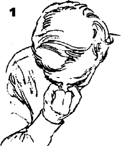
Мастерство выполнения данного упражнения определяется длительностью каждого вдоха и выдоха, шириной отверстия, по которому воздух поступает в ноздрю, и бесшумностью дыхания. Если вы сможете выполнять вдох в течение 45 секунд и выдох в течение следующих 45 секунд, а также повторить полный цикл десять раз, вы приобретете хороший контроль над своим дыханием.
Поза и упражнения на растяжку
Сложность скрипичной игры состоит уже в том, что, лишь удерживая инструмент е игровом положении, скрипач может запросто утратить свободу движений и принять неестественную позу. В таком случае исполнитель зачастую решительно преодолевает трудности на пути к кажущейся, но не настоящей свободе. Скрипку нужно не просто держать - нужно играть на ней и с ней. В способности непрерывно приспосабливать движения заключается секрет игры на скрипке.
Подготовительные упражнения данного урока выполняются без инструмента с тем, чтобы вы уже приобрели определенный опыт свободных движений (которые и будут вашей целью при игре), когда впервые возьмете в руки скрипку или смы¬чок. Приводимые упражнения нужно выполнять босиком и в шортах2.
Основа хорошей позы - вертикальная растяжка тела от больших пальцев ног через позвоночник к макушке, когда наши мышцы нейтрализуют обычную тенденцию к «проседанию» суставов под воздействием силы тяжести, В скрипичной игре такое вертикальное положение - признак здоровья, а в жизни - признак и хорошего здоровья, и энергичности, Давайте начнем описание максимальной вертикальной растяжки со ступней ног {Ил. 2).
Вес тела скрипача должен в большей степени приходиться на носки ног, нежели на пятки. Такое направленное вперед балансирование допускает большую подвижность и легкость и улучшает игровую позицию. Своды стоп должны быть слегка приподняты за счет небольшого разворота в сторону внешнего края стоп, большие пальцы ног расслаблены (1). Такое приподнятое положение сводов стоп должно сохраняться, когда при помощи направленного внутрь усилия лодыжек (2) ступни возвращаются в свое обычное положение. Колени тянутся назад (3), не соединяя бедра, тогда как ягодицы напрягаются и тянутся вперед (4). Живот втянут, а поясница отведена назад (5). Грудная клетка устремлена вперед и вверх по диагона¬ли (6), а голова - вверх и назад, удлиняя шею (7). Только плечевые суставы, сохраняя свое широкое горизонтальное положение, абсо¬лютно свободны и опущены - руки, кисти рук и пальцы свободно свисают почти параллельно позвоночнику, - а все остальное тело л растягивается, как если бы голова пыталась коснуться потолка, а большие пальцы, носки ног и пятки - оттолкнуть землю вниз (8). Эти упражнения, противодействующие силе земного притяжения, должны выполняться на вдохе или в течение нескольких вдохов, если дыхание не натренировано, и на начальном этапе занимают слишком много времени.
Чтобы одежда не сковывала свободные движения тела.
На вдохе грудная клетка сильно приподнимается. Но и на выдохе вы не должны позволять ей опускаться, так как именно при полностью заполненных легких мы позволяем спине и плечевым суставам расслабиться, и плечевые суставы более легко движутся вперед (аналогично правому плечу при движении смычка вниз) и назад (аналогично правому плечу при определенных движениях смычка вверх).
Удержав такое упругое положение несколько секунд, устремитесь к противоположному положению, позволив телу обвиснуть и опуститься. Несколько раз чередуй¬те вертикальное упругое и расслабленное положения. Это поможет вам «поймать» ощущение различных противоположно направленных мышечных усилий. Когда вы, в конце концов, удержите вертикальное положение, можете до определенной степени расслабить мышцы, не нарушая правильной осанки. Соответствующее состояние мышечного тонуса позволит вам сохранить ее без усилий.
Базовые подготовительные позы
Первая поза может быть названа «позой молящегося мусульманина». Ноги со¬гнуты и находятся под туловищем, ягодицы покоятся на пятках, а лоб касается пола (Ил. 3), В этом положении тело готово к действию как сжатая пружи¬на - в противоположность «мертвой» позе, когда вы вытянувшись лежите на спине и полностью расслаблены после движений. Потяните плечевые суставы вниз и назад, выгните дугой спину и затем, не отрывая голени и предплечья от пола, перекатитесь вперед на голове, растягивая мышцы задней поверхности шеи
Поднимитесь на колени, спина прямая, руки свисают вниз по бокам. Держась руками за пятки, потяните голову и плечи назад, прогибая спину и выгибая грудную клетку вперед.
Теперь, после этих двух - основного и дополнительного - упражнений, мы готовы перейти к следующим позам, в которых опора приходится на ноги.
НЕПРЕРЫВНАЯ СЕРИЯ РАСТЯГИВАЮЩИХ УПРАЖНЕНИЙ
Начните в согнутом положении, тело расслаблено, голова свисает вниз, а тыльные стороны кистей рук покоятся на полу.
Не торопитесь, почувствуйте все ваше тело, растягивая изнутри каждую группу мышц: потяните лопатки в разные стороны, растяните позвоночник, почувствуйте внутренние своды стоп, пальцы ног. Попробуйте перевернуть кисти, чтобы растянутые ладони и пальцы плоско легли на пол. Периодически обхватывайте руками ступни ног и тяните за них, растягивая спину еще больше. Несколько раз глубоко вдохните и на последнем выдохе выпрямите ноги до напряженного состояния; при этом голова продолжает свисать вниз, а кисти по-прежнему касаются пола, Сцепите пальцы рук и положите руки за голову - туда, где го¬лова переходит в шею. Потяните голову вниз.
Опустите руки, выполните еще несколько вдохов-выдохов, и затем, на вдохе, поднимитесь в положение стоя.
Выдохните и проверьте свою позу (см. Ил. 1). Ступни должны стоять параллельно, своды стоп должны активно ощущаться, колени выпрямлены, живот втянут, поясница прямая (распространенная ошибка скрипачей - позволять пояснице прогибаться внутрь), голова поднята. Важно не оттягивать плечи ни вниз, ни назад, а рукам позволить свободно свисать. Во время следующего вдоха поднимите руки из висячего положения горизонтально перед собой. Выдохните и потяните руки вперед от плечевых суставов й'лопатотс Во время следующего вдоха поднимите руки вверх над головой, потянувшись на носочках. Выдохните и соедините ладони (Ил. 4).
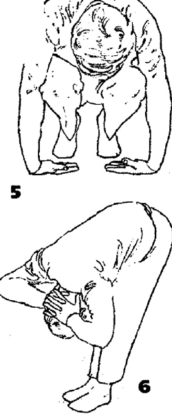
Надавите ладонями друг на друга, затем отклоните голову назад и постарайтесь соединить внутренние стороны локтей обеих рук. Вдохните и потяните руки в стороны под углом 45 градусов. Выдохните и позвольте рукам вернуться назад «в лопатки»3. Повторите движения - вытягивающее «из лопаток» и возвращающее назад «в лопатки» несколько раз, сохраняя угол 45 градусов.
3 То есть, сохраняя положение рук под углом 45 градусов, позволить лопаткам и плечам опуститься.
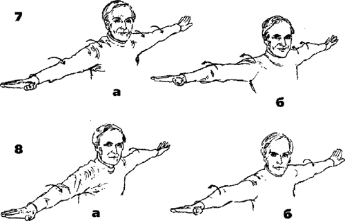
Далее, вытяните руки в стороны и выполните вращение в локтевых суставах. При данном движении кисти сохраняют свое положение, ладони «смотрят» в пол, в то время как руки поворачиваются в плечевых суставах. Вытяните ладони и пальцы рук (Ил. 7а и 76). Затем данное движение выполняется с растяжкой и поворотом каждого плеча и руки поочередно, а голова поворачивается в направлении растягиваемой руки (в то время как другая рука расслаблена и находится в горизонтальном положении). Затем выполните дополнительное движение, отворачивая голову от той руки, которая s данный момент растягивается и поворачивается (Ил. 8а\л8б). Далее одновременно поворачивайте обе руки и оба плеча вперед, описывая круги. Тяните голову назад, когда плечи идут вперед, и вперед - когда плечи идут назад.
Во всех предыдущих упражнениях не позволяйте кистям поворачиваться вместе с руками. Ладони должны «смотреть» в пол, а пальцы вытягиваться и раскрываться наиболее широко в момент максимального поворота рук.
Дальнейшие упражнения для головы
1. Поверните голову из стороны в сторону и потяните шею. Вы можете помочь себе, слегка надавив правой рукой по диагонали на затылок при повороте головы вправо, и наоборот.
2. Выполните наклоны головы вперед и назад.
3. Голова и подбородок находятся на одном уровне; потяните голову вперед и назад от шеи (как цыпленок).
4. Выполните вращение головой по кругу по часовой стрелке и против часовой стрелки.
Упражнения на сохранение равновесия (аист)
Стоя на левой ноге, удерживайте лодыжку правой ноги правой рукой, подтягивая ногу, как на Ил. 9. Вытяните правую руку, подтянув лодыжку к себе, левая рука горизонтально выпрямлена. Проверьте свою позу, приподнимитесь на цыпочки и удерживайте такое положение в течение двух или трех полных дыхательных циклов (вдох и выдох). Вы заметите: для сохранения равновесия тело наклоняется влево. Выполните то же самое, стоя на правой ноге.
Стоя на правой ноге, держите подъем левой ноги левой рукой (Ил. 10). Вытяните правую руку горизонтально и потяните левой йогой к себе и от себя. Это оттянет левое плечо назад, а не просто вниз. Выполните то же самое, стоя на левой ноге.
Стоя на правой ноге, возьмитесь пальцами левой руки за большой палец левой ноги и вытяните ногу горизонтально, как на Ил. 11. Это потянет плечо вперед. Выполните то же упражнение, стоя на левой ноге. Стоя на левой ноге, обхватите большой палец правой ноги пальцами правой руки. Потяните и согните правую ногу вверх, колено на уровне желудка, и разгибайте ногу поочередно влево и вправо от тел а. Выполните то же самое, стоя на правой ноге.
Попробуйте выполнить это же упражнение, стоя на левой ноге, но удерживайте большой палец правой ноги левой рукой так, чтобы правая ступня проходила спереди и поперек левой ноги. Выполните упражнение снова, стоя на правой ноге; а затем попробуйте выполнить предыдущие упражнения таким же образом, правая нога удерживается левой рукой и наоборот. Со временем вы сможете выполнять эти упражнения в едином непрерывном движении, плавно переходя от одного упражнения к другому.
Упражнения-покачивания, составляющие основу игры на скрипке
С самого начала вы должны чувствовать, что все ваше тело готово к участию в процессе исполнения, будь то начало движения или ответ на него, или даже реакция на мельчайшие движения, отражающие вибрации скрипки или самого смычка. Следующая серия упражнений даст вам возможность подойти ближе к игровым ощущениям, хотя в полной мере применение данных упражнений станет более понятным только позднее - в Четвертом, Пятом и Шестом уроках.
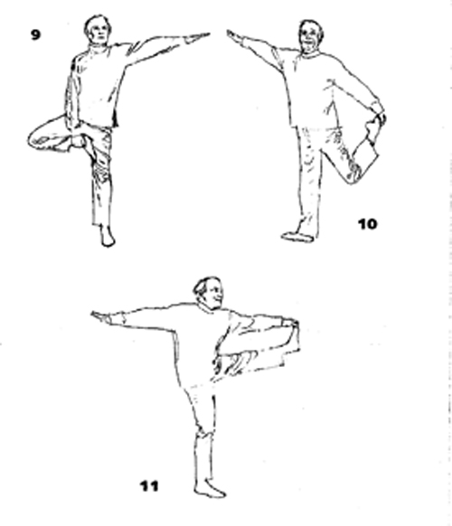
Ощущение готовности к движению во всем теле должно войти в привычку. Безусловно, во время игры на скрипке вы не будете совершать такие утрированные движения, как в данных упражнениях, хотя есть определенные штрихи, выполнение которых требует довольно широкого покачивания тела.
До сих пор ваши ноги стояли вместе, но при игре на скрипке они должны быть расставлены достаточно далеко, чтобы сформировать твердую, но гибкую основу для равновесия, и достаточно близко, чтобы позволить вам легко переносить вес с одной ноги на другую. Следовательно, расстояние между ногами должно составлять примерно 12 дюймов4, носки ног слегка развернуты наружу - точное расстояние зависит от индивидуального телосложения и длины ног.
На такой широкой опоре, сохраняя равномерное распределение веса на обе ноги, отработайте перенос веса тела с одной ноги на другую. Затем разверните корпус сначала в одну сторону, потом в другую сторону в горизонтальной плоскости - руки свободно свисают, немного «взлетая» при каждом повороте. В крайней точке каждого движения тело продолжает непрерывно двигаться дальше в направлении противоположной ноги.
Теперь мы подходим к скоординированным круговым движениям рук, что, надеюсь, приведет нас к лучшим результатам в скрипичной игре. Мы начнем выполнять их в самом легком и наиболее естественном положении, при свободно свисающих руках.
Наклонитесь так, чтобы подушечки пальцев рук касались пола, ноги были выпрямлены, а голова свисала вниз. Перемещая вес тела с одной ноги на другую, начните аккуратное покачивание тела, приводя в движение руки так, чтобы подушечки пальцев описывали на полу круги (в чередующихся направлениях). Продолжайте покачивающееся движение всем телом и постепенно переходите в положение стоя, при этом руки поднимаются в игровое положение. Запястья и пальцы должны оставаться достаточно мягкими, чтобы участвовать в волнообразном движении верхних конечностей. Шея также расслаблена, позволяя голове покачиваться вместе с телом (Ил. 12и13).
" Около 30 сантиметров.
Следующее упражнение предназначено для плечевых суставов и мышц спины и не связано с предыдущим упражнением. Потяните руки в стороны, параллельно полу, плечевые суставы опущены. Позвольте предплечьям «упасть» от локтей. Чтобы предплечья висели действительно вертикально, плечевые суставы нужно развернуть вперед. Сохраняйте такой прямой угол между предплечьем и плечом и раскачивайте предплечья от вертикального висячего положения до вертикального поднятого положения. Повторите движение несколько раз (Ил. 14 и 15).
Расположите левую руку в игровом положении, предплечье находится под углом примерно 45 градусов к телу, запястье расслаблено. Позволяя локтю покачиваться из стороны в сторону, а предплечью - двигаться вперед и назад, выполняйте круговое движение кистью левой руки в горизонтальной плоскости.
Установите правую руку в таком же положении и описывайте круги двумя руками одновременно, сначала по часовой стрелке, потом - против часовой стрелки, Переместите правую руку в ее собственное игровое положение, ладонью вниз, и выполняйте круговые движения обеими руками в противоположных направлениях. 8 данном положении кисть правой руки будет описывать эллипсы против часовой стрелки почти в горизонтальной плоскости, а кисть левой руки будет описывать круги по часовой стрелке, предплечье покачивается и вращается от локтя.
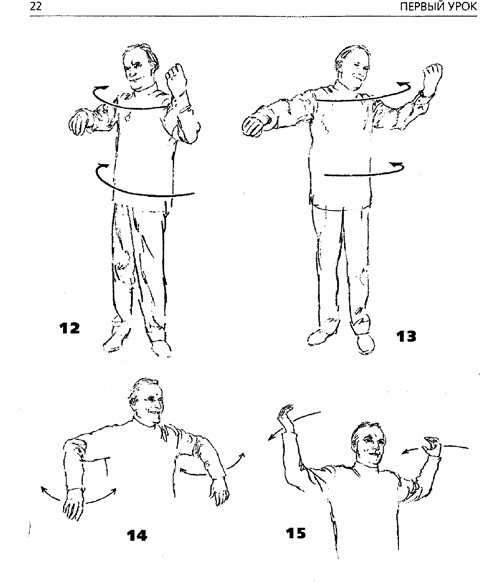
Расположите левую руку в игровом положении, предплечье находится под углом примерно 45 градусов к телу, запястье расслаблено. Позволяя локтю покачиваться из стороны в сторону, а предплечью - двигаться вперед и назад, выполняйте круговое движение кистью левой руки в горизонтальной плоскости. Установите правую руку в таком же положении и описывайте круги двумя руками одновременно, сначала по часовой стрелке, потом - против часовой стрелки, Переместите правую руку в ее собственное игровое положение, ладонью вниз, и выполняйте круговые движения обеи¬ми руками в противоположных направлениях. 8 данном положении кисть правой руки будет описывать эллипсы против часовой стрелки почти в горизонтальной плоскости, а кисть левой руки будет описывать круги по часовой стрелке, предплечье покачива¬ется и вращается от локтя.
Стоя на цыпочках, вытяните руки высоко над головой, ладони «смотрят» в стороны, и покачивайте обеими руками вперед-назад. Одновременно с каждым покачиванием выпрямляйте колени и выгибайте спину, лопатки и голова отводятся назад.
Постарайтесь ощутить различную скорость этих непринужденных свободных покачиваний рук, она зависит от расстояния - большего или меньшего - от кисти до плечевого сустава. Вы заметите: если каждое покачивание выполняется абсолютно свободно, то оно приобретает свою собственную естественную скорость. Пока вы не осознаете это, в руке и плечевом суставе сохранится остаточное напряжение, или вы будете совершать ими движение преднамеренно.
Теперь я хотел бы описать принципы аташ5 и движущей силы. В эллипсах любого размера и круговых покачиваниях, имеющих вертикальную составляющую, всегда есть определенная точка максимальной скорости - момент наибольшей атаки. Он появляется естественным образом при подходе к самой низкой точке, но его можно создать искусственно в любой точке нашего движения.
При игре на скрипке мы должны осознавать момент максимальной атаки при каждом повторении движения - если применять его осознанно, он может предшествовать моменту наибольшей скорости. Оставшееся движение происходит в пассивном расслаблении, за счет приобретенной движущей силы.
5В действительности, использованному автором английскому слову «thrust» в русском языке больше соответствует слово «удар». Мы перевели это слово как «атака», поскольку этот термин, на наш взгляд, лучше характеризует данное движение в скрипичной игре и является более привычным.
В следующем упражнении руки выпрямлены. Описывайте круги с полным поворотом рук непосредственно от плеча, позволяя рукам поочередно проходить перед вашим лицом (Ил. 16). Упражнение следует выполнить несколько раз, сначала, а направлении вовне, затем - внутрь, стараясь понять принципы атаки и движущей силы. Выполняйте упражнение в двух ларах направлений6.
Следует снова повторить описанные выше движения, но на этот раз не одновременно, а поочередно7 (Ил. 17). Не игнорируйте ритмический пульс в локтевых суставах, запястьях и пальцах - пальцы максимально вытягиваются в тот момент, когда рука полностью выпрямляется.
Размеренно покачивайте обеими руками одновременно в одном и том же круговом движении, сначала по часовой стрелке, потом против нее (Ил, 18).
Вы видели, как данное движение можно скоординировать в двух параллельных и двух противоположных плоскостях, всего в четырех вариантах.
6То есть сначала обе руки движутся в одном направлении (вперед, потом назад), затем в про¬тивоположных направлениях; левая - вперед, правая - назад, и наоборот. Таким образом, получаются четыре различных варианта движений.
1То есть руки движутся одна за другой, когда левая находится наверху, правая находится внизу, и наоборот.
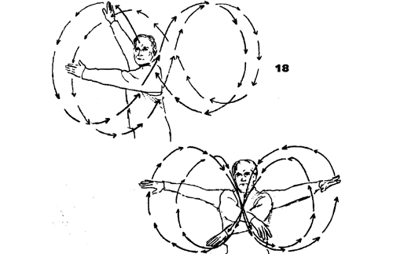
В конце концов, описывайте руками перед собой фигуру перевернутой восьмерки - со; позволяйте рукам сгибаться, а суставам - двигаться более свободно. Фигура каждой восьмерки соединяет движения смычка вниз и вверх. При движении смычка вниз пальцы должны быть свободными и слегка расставленными. В самых крайних точках при движениях смычка и вниз и вверх вы должны ощущать движение в лопатках (Ил. 19).
Не забывайте про ноги. Встаньте на одну ногу, руки держите горизонтально. Покачайте свободной ногой как маятником максимально энергично и широко, приспосабливая данное движение к покачиванию тела и рук. Тело и руки должны покачиваться по часовой стрелке, когда правая нога идет вперед, и а противоположном направле¬нии, когда левая нога идет вперед.
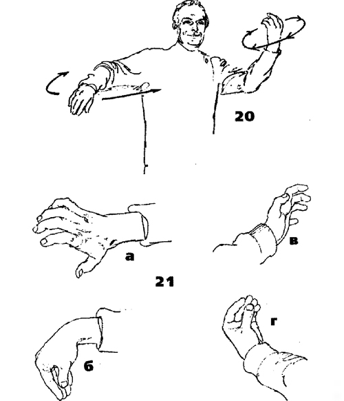
Заключительные упражнения-покачивания, которые мы сейчас выполним, наиболее близки к реальной скрипичной игре. Поднимите левое предплечье, как изображено на Ил. 20. Пальцы и запястье должны быть свободны, а локоть - иметь возможность покачиваться, Ладонь правой руки «смотрит» вниз, как при ведении смычка, а пальцы и запястье опять полностью расслаблены и свободны. Чуть согнутой правой рукой начните покачивание, которое приведет обе руки, а также запястья и пальцы, в движение. Чтобы более точно сымитировать скрипичную игру и приблизиться к реальным ощущениям, руководствуйтесь следующими подсказками, изображенными на Ил. 21:
а) Когда правая рука выпрямляется, пальцы слегка раздвигаются.
б) Когда правая рука сгибается, пальцы «собираются» вместе и тоже сгибаются,
а) Когда кисть левой руки движется от тела (в игровое положение), пальцы «собираются» вместе,
г) Когда кисть левой руки движется к телу, пальцы вытягиваются.
Действий а) и в) могут происходить одновременно при согласованных покачиваниях обеих рук. Следовательно, естественным образом, этапы б) и г) тоже происходят одновременно. Далее, могут совпадать по времени действия а) и г) и, соответственно, б) и в).
Пять упражнений йоги
В завершение данного урока приводятся пять упражнений йоги. Каждое из первых четырех упражнений должно выполняться в течение как минимум трех дыхательных циклов.
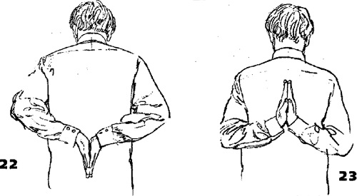
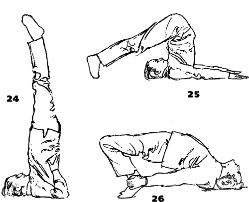
1. Соедините ладони вместе за спиной, сначала как показано на Ил. 22, а затем как на Ил, 23. Лопатки отведены назад, а руки и кисти упираются друг в друга и тянут вверх,
2. Стойка на плечах, или равновесие на шее6. Тело находится в вертикальном положении, кисти твердо упираются в спину (см. Ил. 24). Грудная клетка выдвину¬та вперед; подбородок прижимается к ней. Сначала эту позу можно потренировать у стенки.
3. Поза плуга. Если вы хотите удерживать данное положение в течение длитель¬ного времени (что чрезвычайно полезно), будет легче положить ноги на стул. «Поза плуга» (Ил. 25) дает простор многочисленным вариантам, где кисти могут противодействовать ступням различными способами. Ладони могут касаться ступней и ста¬раться раздвинуть их в стороны. Ладони могут также притягивать ступни друг к другу, надавливая с внешних сторон. Можно стараться вытянуть ладонями ноги вверх или вниз. Полезны все эти варианты.
Так называемая «березка».
4. Выполнив упражнения в «позе плуга», которые растягивают и прогибают спину, полезно теперь согнуть спину в противоположном направлении, придав ей вы¬гнутую форму. Это можно выполнить, лежа на спине на полу. Сгибая ноги и удерживая лодыжки кистями рук, одновременно приподнимите спину от пола и выгните ее (см. Ил. 26). Максимального изгиба спины можно достичь, если поставить кисти рук за головой ладонями на пол, пальцы «смотрят» в сторону ступней ног, а голову и тело, за исключением ступней и ладоней, полностью поднять с пола9.
5. В заключение - приятная награда после всех этих разнообразных растяжек, противодействий и т. д. Лягте на пол, полностью вытянувшись и совершенно расслабившись (Ил, 27). Чем сильнее было предшествующее напряжение, тем более приятным будет данный этап. В сущности, это и называется «мертвой позой». Если в этой позе вы расслаблены, то сможете почувствовать пульсацию циркулирующей крови в руках (особенно в предплечьях), и иногда - когда вы расслаблены полностью - даже в ногах.
Дыхание спокойное. Сконцентрируйтесь на снятии всех напряжений, конечность за конечностью, сустав за суставом и мышца за мышцей, чувствуя тяжесть, как если бы вы погружались в пол. Вы можете оставаться в таком положении в течение двадцати минут или более, если у вас есть время.
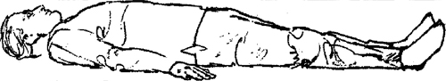
9 Так называемый «мостик».
ВТОРОЙ УРОК
ПОДГОТОВИТЕЛЬНЫЕ УПРАЖНЕНИЯ ДЛЯ ПРАВОЙ РУКИ
Я думаю, сначала в данных упражнениях будет удобнее использовать круглую деревянную палочку, легкую и нелакированную, около полутора - двух футов1 в длину; диаметр палочки приблизительно равен диаметру смычка. Когда ощущения станут привычными и вы выполните «Предварительные упражнения со смычком»2, следует повторить предыдущие упражнения, заменив палочку смычком.
Как уравновесить палочку по центру и расположить пальцы
Поддержите конец палочки левой рукой. Согнутой в локте правой рукой (предплечье почти параллельно полу) удерживайте палочку в центральной точке, используя только большой и средний3 пальцы. Оба пальца должны быть мягкими и округлыми - кончик подушечки с правой стороны и ноготь большого пальца касаются палоч¬ки, а средний палец завершает образовавшийся круг, пересекая палочку по диагонали в области своего первого4 сустава. Так же легко добавьте остальные пальцы: сначала мизинец, его кончик покоится не на самой вершине палочки, а сбоку, на внутренней стороне; потом указательный, касающийся палочки между первым и вторым суста¬вом, и, в заключение, безымянный палец, дотрагивающийся до палочки между подушечкой и первым суставом.
Пальцы округлены и расположены на одинаковом расстоянии друг от друга (не соприкасаясь). Кисть должна слегка провисать от запястья и быть мягкой.
1Примерно 45-60 сантиметров.
2См. далее в данной главе.
3Чтобы избежать путаницы здесь и далее вместо определений автора: большой, первый, вто¬рой, третий и четвертый пальцы правой руки — мы используем более привычные в России обозначения: большой, указательный, средний, безымянный и мизинец.
4Здесь и далее сохранена авторская нумерация суставов. Первым суставом называется тот, что располагается наиболее близко к кончику пальца, следующий сустав называется вторым, а оставшийся - основным; у большого пальца наличествуют только первый и основной суставы.
Вы заметите: расстояние от точки, где палец касается палочки до места его соединения с кистью у безымянного пальца больше, чем у указательного. Это означает, что суставы пальцев располагаются под небольшим углом к палочке, а не строго параллельно. Величина данного угла непрерывно регулируется при помощи вращения и легкого поднятия правой руки.
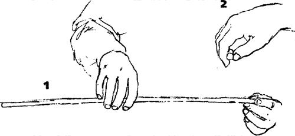
Как уравновесить палочку в игровом положении
Левой рукой потяните палочку немного влево, вытягивая ее из пальцев правой руки. Позвольте палочке следовать за левой рукой настолько, чтобы мизинец правой руки почувствовал необходимость дополнительного нажима для уравновешивания палочки. Вытягивание палочки левой рукой соответствует напряжению скрипичных струн, а ее движение вместе с левой рукой ~ состоянию при переносе смычка в воздухе и при балансе смычка в нижней части. Во время выполнения упражнения остальные пальцы правой руки остаются свободными, Следите, чтобы в правой руке, не появлялось ни малейшего намека на «хватку»5 для поддержания веса палочки, даже когда она опирается на левую руку.
5 Словом хватка (англ, grip) автор, по-видимому, называет состояние, когда рука чересчур сильно сжимает смычок.
Координация движений большого пальца, остальных пальцев и пальцевых суставов.
Этими движениями будет легче овладеть, если учесть, что постановка правой руки состоит из двух основных элементов - «кольца» или «круга» и «арки» или «моста» (они упоминаются в фильме6 как две дуги), Первый элемент - «круг», образованный большим и средним пальцами, когда вы впервые уравновешивали и держали палочку в центральной точке (Ил. 3). Второй элемент - «мост»; он состоит из суставов, опирающихся на две «подпорки». Первая «подпорка» - указательный палец, который может надавить с той или иной стороны палочки; вторая ~ «двуногая» - образована безымянным пальцем и мизинцем, которые оказывают давление с обеих сторон палочки (Ил. 4). (Особенности употребления «подпорок» мы рассмотрим позже.)
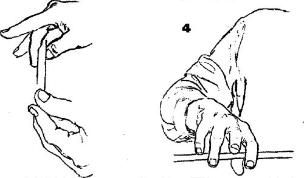
Хотя вес правой руки большей частью передается на указательный палец, особое значение «моста» заключается в раскрывающем движении, Оно распределяет часть веса руки на безымянный палец и мизинец и вовлекает их в активное участие в движении смычка.
6 См. раздел «От издателя».
«КРУГ»
Продолжая поддерживать палочку левой рукой, выполните скользящее движение большим пальцем правой руки вперед и назад вдоль палочки, сохраняя остальную часть кисти неподвижной и следя за тем, чтобы кончик подушечки большого пальца с правой стороны все время сохранял контакт с палочкой. Таким образом, при скольжении влево (в сторону конца смычка) большой палец будет сгибаться, а при деижении вправо (к колодке) - слегка распрямляться, однако не настолько, чтобы совсем потерять небольшой изгиб вовне. (Сгибание пальца при движении к концу смычка совладает с поворотом трости по часовой стрелке, а выпрямление пальца при движении к колодке - с поворотом трости против часовой стрелки. Таким образом, на каждое отдельное движение в известной степени влияют - а иногда даже ему противоречат - сопутствующие движения7.)
Остальные пальцы тоже должны сохранять точки контакта с палочкой, а кисть -свободно свисать от запястья.
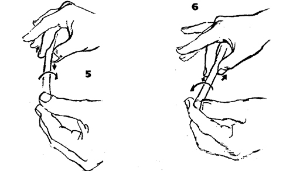
Теперь снимите с палочки указательный, безымянный пальцы и мизинец и снова выполните скользящее движение большим пальцем. На этот раз средним пальцем одновременно, выполните скользящее движение в противоположном направлении: к концу смычка, когда большой направляется к колодке, и наоборот. Вы заметите: палочка наклоняется соответственно влево и вправо (см. Ил, 5 и б). И снова, как и во всех упражнениях со смычком, убедитесь, что точки контактов пальцев с палочкой не сместились.
7То есть совокупность нескольких одновременных движений.
Когда сочетание двух движений станет более привычным, остановите явное скольжение большого и среднего пальцев, но сохраните их встречное давление. Оно вызывает легкое покачивание палочки, а сгибание и выпрямление большого пальца будет наблюдаться по-прежнему четко.
В своем основном положении большой палец сильно согнут, а мышца у его основания остается мягкой. Данное положение связано со следующими ситуациями:
а) начальная часть движения вниз смычком;
б) смена струн с более низкой на более высокую, например:
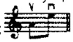
в) предощущение движения смычка вниз в самом конце движения смычка вверх;
г) очень короткие штрихи вверх смычком, такие как переносы смычка, летучее staccato и spiccatots которых длительность звучания ноты и длительность подготовки к следующей ноте8 почти равны).
8То есть паузы
В своем втором положении большой палец согнут чуть меньше, и мышца у его основания становится активной, Данное положение встречается в следующих ситуациях:
а) общее направление движения смычка вверх;
б) смена струн с более высокой на более низкую;
в) предощущение движения смычка вверх в самом конце движения смычка вниз;
г) очень короткие штрихи вниз смычком (в которых ожидается последующее движение смычка вверх.
Сгибая и разгибая большой палец в вертикальном направлении, вы также можете вращать палочку (см. Ил. 5 и 6). Подобное вращение при движении смычка вниз или вверх изменяет угол касания струны волосом -поворот против часовой стрелки происходит при движении смычка вверх к колодке (запястье поднимается), а поворот по часовой стрелке происходит при движении смычка вниз к концу (запястье опускается). Вращение связано также и с изменением расстояния между смычком и подставкой для перемены тона, окраски звука и динамики,(Описание поворотов смычка по часовой стрелке и против нее предполагает, что наблюдатель смотрит на смычок со стороны колодки вдоль трости смычка.)
«МОСТ»
Придерживая левой рукой конец палочки, расположите на ней указательный, безымянный пальцы и мизинец правой руки и снимите большой и средний пальцы. При любом направлении движения смычка «подпорки»9 стремятся в противоположные стороны. Данное ощущение можно развить наилучшим образом, если сначала позволить «подпоркам» в действительности скользить по палочке, хотя в итоге они, конечно, будут надежно фиксироваться на смычке. Когда «подпорки» слегка раздвигаются при движении смычка вниз, суставы и кисть опускаются, а локоть слегка поднимается. А когда «подпорки» раздвигаются при движении смычка вверх, кисть и суставы поднимаются, а локоть немного опускается (см. Ил. 7 и 8 соответственно).
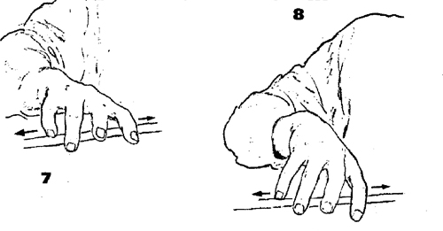
9 См. выше: указательный палец правой руки и безымянный палец с мизинцем
В обоих случаях очень важно почувствовать растягивающее движение пальцев и суставов в противоположные стороны, даже когда пальцы чуть «собираются» при движении смычка вверх. Важно и то, что между этими двумя «фиксированными» ощущениями обязательно будет момент полного расслабления.
Теперь чередуйте ощущения, возникающие при движении смычка вниз и вверх, каждый раз проходя через «нулевую» точку, в которой растягивающее напряжение кисти исчезает. Важно, чтобы усилия обеих «подпорок» были одинаковыми. Если позволить одной из них быть слабее или энергичнее другой, то мы рискуем вырабо¬тать плохую привычку.
Соединение «КРУГА» И «МОСТА»
Теперь, продолжая чередовать описанные выше растягивающие движения, добавьте движения большого и среднего пальцев. Выполните упражнения вначале с палочкой, потом со смычком, как изображено на Ил. 9 и 10. Когда смычок идет вниз и суставы опущены, большой палец сгибается и оказывает давление по направлению к концу смычка, как и указательный палец, а средний палец вместе с безымянным и мизинцем - в сторону колодки. Когда смычок идет вверх и суставы приподняты, большой палец объединяется с безымянным и мизинцем и оказывает давление в сторону колодки, а средний, на этот раз объединившись с указательным, - в сторону конца смычка (Ил, Пи 72). Позаботьтесь, чтобы ни одно из движений не смещало точки контакта каждого пальца с палочкой.
Комбинацию этих движений также можно отрабатывать без палочки, Следите за тем, чтобы ваше внимание не фокусировалось исключительно на кисти и вы не пропустили появление нежелательного напряжения в плече и плечевом суставе.
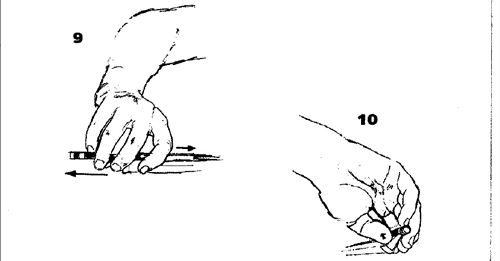
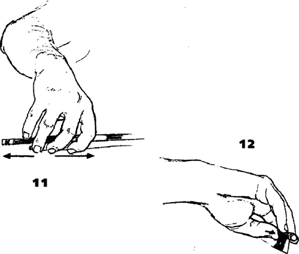
Удерживаем палочку без помощи левой руки: гибкость и мягкость пальцев.
Вертикальные движения пальцев
Теперь давайте вернемся к нашему самому первому способу держания палочки в ее центральной точке, где палочка легко уравновешивается одной правой рукой. Сохраняя кисть и руку неподвижными, поднимите палочку как можно выше, согнув пальцы; затем, выпрямив пальцы, опустите ее. Когда палочка поднимается, она одновременно поворачивается по часовой стрелке; когда опускается - против часовой стрелки. Как обычно, следите, чтобы точки контакта пальцев с палочкой не смещались. Достигнув максимальной амплитуды движений пальцев (и палочки), вы можете добавить кистевое движение, поднимая и опуская кисть от запястья, чтобы еще больше увеличить амплитуду колебаний палочки.
Повторяйте движения, постепенно передвигая кисть по направлению к воображаемой колодке, чтобы лучше почувствовать роль мизинца - он не теряет своей эластичности - в уравновешивании палочки (Ил. 13 и 14).
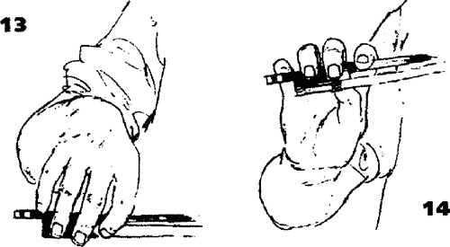
Чтобы развить гибкость и способность к быстрой адаптации, попробуйте - в качестве любопытного опыта - покачивать палочку кистью, снимая безымянный палец и мизинец с палочки на каждое движение кисти вверх и позволяя им касаться палочки, когда она приближается к нижней точке.
Горизонтальные движения пальцев
Так как в скрипичной игре мы крайне заинтересованы в непрерывном горизонтальном движении, то нашим пальцам следует научиться быть эластичными и в этом направлении.
Правой рукой держите палочку у воображаемой колодки в нейтральном положении10 максимально мягкими пальцами. Теперь потяните палочку левой рукой влево и вправо, увеличивая сопротивление пальцев правой руки, чтобы убедиться: палочка не выскальзывает из пальцев. Пальцы, тем не менее, должны оставаться достаточно гибкими, чтобы реагировать на импульсы левой руки (вправо-влево), имитирующие движения вверх и вниз смычком, распрямляясь в первом случае и сгибаясь во втором (Ил.15 и 16).
10Соответствует расположению пальцев при игре в центре смычка.
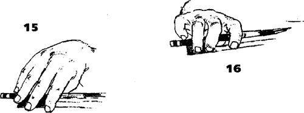
Теперь, удерживая палочку одной правой рукой вертикально, подтолкните ее вверх, одновременно согнув пальцы и подняв кисть от запястья. Затем позвольте палочке упасть под воздействием силы тяжести; вес палочки потянет кисть вниз и выпрямит пальцы. В это время мизинец соскользнет с палочки, а безымянный палец будет едва ее касаться (Ил. 17м 18).
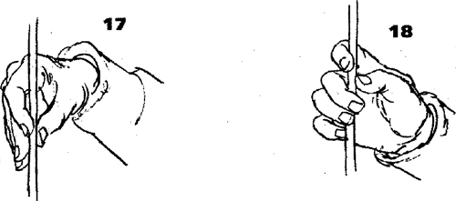
Чтобы испытать тоже ощущение, но в противоположном направлении, переверните палочку11 и повторите описанное выше упражнение; на этот раз палочка будет активно подниматься от выпрямления пальцев, а при ее инертном падении они будут сгибаться.
11Имеется ввиду: на 180º
Предыдущие упражнения готовят нас к достижению такой же эластичности при горизонтальном расположении смычка. При движении смычка влево пальцы сгибаются, а при движении вправо - выпрямляются. Сейчас пришло время выполнить эти движения.
Круговые движения
(СОЧЕТАНИЕ ВЕРТИКАЛЬНЫХ И ГОРИЗОНТАЛЬНЫХ ПАЛЬЦЕВЫХ ДВИЖЕНИЙ)
Когда вы овладеете вертикальными и горизонтальными движениями пальцев (палочка находится в горизонтальной плоскости), вам следует научиться объединять их в круговое движение а любом направлении. Круговое движение следует практиковать, удерживая палочку в различных промежуточных положениях между горизон¬тальным и вертикальным. Все пальцы должны в равной степени участвовать в движении, чтобы концы палочки описывали круги одинакового размера. Импульс для этого движения должен поступать от всей руки.
Даже сейчас, на раннем этапе, попробуйте поэкспериментировать при выполнении предыдущих упражнений, удерживая палочку только указательным и средним пальцами напротив большого пальца. Вы обнаружите: средний палец берет на себя некоторые функции безымянного и мизинца, однако держите его как можно ближе к большому пальцу. Возможно, палочка будет слегка вращаться. Чтобы указательный и средний пальцы при этом оставались максимально свободными, руку следует довольно сильно развернуть внутрь, чтобы указательный палец лежал на палочке на суставе между основной и средней фалангой.
Предварительные упражнения со смычком
Теперь мы заменяем палочку смычком. Следующее упражнение поможет вам создать представление о целом ряде необходимых в исполнительской практике движе¬ний, при этом не надо будет удерживать вес всего смычка.
Положите колодку смычка на пульт, как показано на Ил. 19. Конец смычка поддерживается левой рукой. Затем положите правую руку на смычок у колодки. Здесь единственный необходимый нам элемент постановки правой руки - это контакт между большим и средним пальцами в «круге». «Круг» следует свободно сформировать пальцами перед тем, как класть кисть на смычок. Тогда кисть легко опустится в удобное положение. Чувство контакта в «круге» должно сохраняться все время, пока кисть скользит по трости смычка к концу и обратно. Рука в целом должна быть настолько легкой и устойчивой, чтобы она ни в малейшей степени не препятствовала движению кисти.
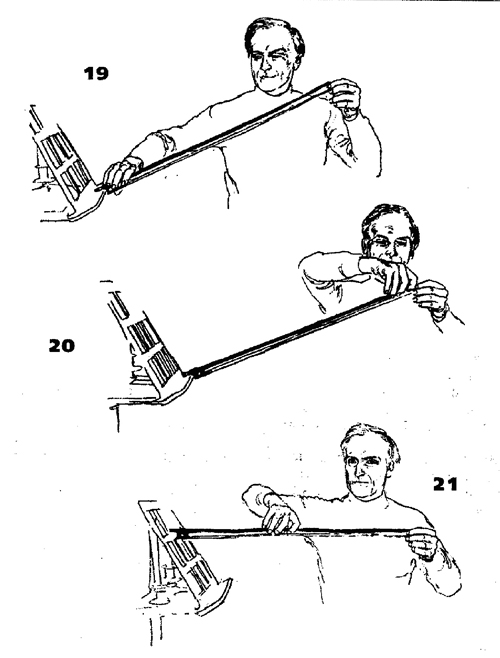
Следует помнить: при движении смычка вниз плечо и лопатка следуют за кистью и пальцами, а при обратном движении смычка вверх создают свободное пространство12 для движения кисти. Поскольку в этом гладком скольжении нет толчков, пальцевое движение будет едва заметным на фоне незначительного наклона трости при движении смычка вверх и вниз, наклона, который (если кисть действительно свободна) возникает сам по себе, за счет трения между пальцами и палочкой.
12 То есть отодвигаются, освобождая место.
Следующее движение, которое появится в данном упражнении, - компенси¬рующая регулировка углов между плечом, предплечьем, запястьем и пальцами, сохраняющая параллельность ведения смычка относительно подставки. Эта регулировка - более подробно мы рассмотрим ее позже - начинается одновременно с движением руки и продолжается на всем его протяжении. Изменением высоты расположения колодки и наклоном конца смычка можно имитировать различные плоскости, в которых движется рука при игре на разных струнах, как показано на Ил. 20 и 21.
Как уравновесить смычок
Если действительно держать и переносить смычок, то описанная выше естественная регулировка может быть нарушена из-за чрезмерного напряжения запястья и пальцев, которое передастся вверх по руке до плеча и крепко зажмет всю руку. Последующие упражнения предназначены преимущественно для того, чтобы с самого начала выработать такой способ держания смычка, при котором эти и другие необходимые реагирующие движения будут происходить сами собой. В то же время они приучат всю кисть, особенно мизинец и большой палец, к различным состояниям мышечного тонуса, соответствующим различным функциям смычка. Дальнейшая цель данных упражнений - она будет более подробно рассматриваться в Четвертом уроке, - развитие ощущения гибкости при владении смычком за счет изменения степени упругости пальцев.
Для выполнения предлагаемых упражнений необходимо поддерживать скрипку в условном игровом положении, как изображено на Ил. 22 и 23. Это позволит левой руке с самого начала ощутить свободу, которая должна всегда сохраняться при игре, а пальцам левой руки - развить силу.
Мы ставим смычок в центре на одну из струн, Снимаем средний и безымянный пальцы,-придерживая смычок максимально легко остальными пальцами; указательным, мизинцем и большим. Затем мы нажимаем мизинцем до тех пор, пока смычок не поднимется над струной. (Это упражнение полностью теряет смысл, если смычок снимается со струны за счет какого-либо иного действия, а не давления мизинца.) Такое давление, помимо поднятия смычка, заставит большой и указательный пальцы еще сильнее округлиться, однако они не должны сильно сжимать смычок.
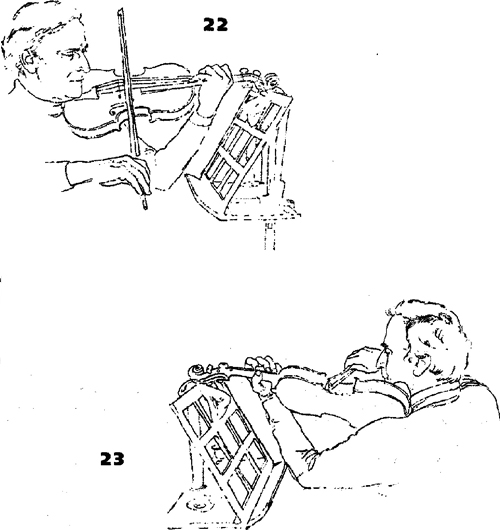
Итак, смычок уравновешивается над струной в течение нескольких секунд; затем давление мизинца ослабляется, смычок снова падает на струну и может даже подпрыгивать - при абсолютно свободной кисти - до тех пор, пока сам не остановится.Если кисть действительно расслаблена, то отскоки смычка будут резонировать в ней и во всей руке.
На втором этапе данного упражнения мы создадим настоящий рикошет - а момент ослабления давления смычок довольно медленно проводится в сторону конца до тех пор, пока отскоки полностью не затухнут. (Скрипачам с руками средней длины не следует подводить смычок слишком близко к концу, так как данная постановка неудобна для игры в верхней части смычка.) Затем снова поднимите смычок за счет давления мизинца, перенесите его к начальной точке и «уроните» еще раз. Как вариант, вместо переноса смычка назад к начальной точке, можно «уронить» смычок прямо над точкой, где он остановился при движении вниз, и провести им к колодке, выполняя рикошет вверх смычком. От легкости правой руки и плеча, которая является необходимым условием данного упражнения, зависит, как долго будут продолжаться эти рикошеты.
Второй этап упражнения следует повторить, расположив все пальцы на смычке. Можно почувствовать, что средний и безымянный пальцы активно участвуют при переносе смычка, особенно средний, так как «круг» снова в действии. В расслабленном подпрыгивающем состоянии, тем не менее, средний и безымянный пальцы должны поддерживать пружинистое ощущение, ни в коем случае не пытаясь ему помешать. В обоих случаях - когда средние пальцы находятся на смычке и когда они сняты - рикошет должен звучать одинаково.
Если после нескольких дней выполнения данного упражнения обнаружится, что мизинец стал «проседать» под нажимом (это распространенная тенденция), то вам поможет следующее упражнение для поддержания мышечного тонуса. Как при подготовке к упражнению на рикошет, смычок поднимается над струной за счет нажима мизинца, но вместо броска на струну он опускается так мягко и медленно, как только возможно, бесшумно останавливаясь без малейшего подрагивания.
Смена струн
Следующее упражнение следует выполнять, поддерживая скрипку, как изображено на Ил. 22 и 23. Смычок у самого кончика несколько секунд покоится на струне Соль, затем правая рука единым целым движением падает вниз так, что конец смычка останавливается на струне Ми. Затем смычок вновь легко поднимается в плоскость струны Соль. Упражнение следует повторить в центре смычка и у колодки, где недостаточно тренированный мизинец остро почувствует свою уравновешивающую функцию. (Следует подчеркнуть, что на данном раннем этапе смена струн у колодки выполняется всей рукой, без каких-либо независимых движений кисти и/или пальцев. Однако в Четвертом уроке мы обсудим достоинства возможных зигзагообразных движений кисти и руки при смене струн у колодки.)
Движения на весь смычок при свободно покачивающейся руке
Теперь мы научимся соединять свободные покачивания руки, которые мы выполняли в упражнениях Первого урока (Ил. 18\л 79), с нашим умением переносить смычок без зажатия кисти.
Сперва без скрипки и смычка мы корректируем дуги, описанные в Первом уроке, в соответствии с плоскостями, в которых движется рука при игре на скрипке, Представьте, что мы совершаем довольно быстрое движение вверх смычком, за которым следует медленное возвращение смычка по воздуху. Начиная при полностью выпрям¬ленной правой руке, мы энергично проводим рукой налево и вверх, как если бы смычок шел к колодке. Это движение, тем не менее, продолжается и за пределами воображаемой колодки до тех пор, пока суставы пальцев правой руки не окажутся примерно на уровне левого уха. Если запястье и пальцы достаточно мягкие, то при этом они согнутся, удлиняя движение руки. Затем мы меняем направление и возвращаем руку назад (запястье слегка прогибается вниз), как если бы собирались поставить смычок на струну у кончика. Повторите эти движения несколько раз без остановки. Затем выполните упражнение «вниз смычком»13, начиная возвратную дугу, когда рука полностью вытянута, и перенося руку назад к точке поворота далеко за пределами воображаемой колодки.
Теперь мы поддерживаем скрипку, как изображено на Ил. 22 и 23 данного урока, Мы берем смычок и повторяем предыдущие упражнения (оба варианта: вниз и вверх смычком) несколько раз на каждой струне:
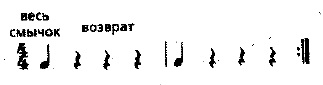
Выполняя вариант вверх смычком, мы должны убедиться: рука следует за смычком равномерно, и когда смычок покидает струну у колодки, он легко взлетает (как аэроплан), а не нервно срывается. Хотя со смычком правая рука недолжна перемещаться так далеко влево и вверх, как без смычка, обратное движение все же следует начинать не раньше, чем тыльная сторона ладони окажется примерно на уровне носа.
В точке поворота в воздухе, когда выгнутая кисть полностью принимает вес смычка, вы почувствуете небольшое увеличение напряжения, особенно в мизинце; похожее ощущение было в упражнении на рикошет. Состояние «сжатая пружина»14 необходимо кисти, чтобы смягчить «приземление» смычка при выполнении варианта упражнения вниз смычком. Вероятно, вам придется поэкспериментировать с силой давления, чтобы найти состояние, при котором смычок спокойно опускается на струну у колодки и задает отчетливое начало ноты - без скрипа (излишнее давление) и без шлепка (недостаточное давление).
13 Данное упражнение выполняется без смычка, слово «вниз» е данном случае-указывает направление движения.
14 По-видимому, «сжатая пружина» - состояние, когда кисть закруглена, пальцы довольно крепко и надежно удерживают смычок и готовы к движению.
Два вида усилий
В технике владения смычком существует два вида усилий. Первый, который я называю «хлопок - отскок», - это быстрая атака смычка в одном направлении и последующая ответная реакция в противоположном направлении (как мяч, отскакивающий от стены). Второй - более продолжительное и непрерывное усилие в одном направлении (словно толкаешь или тащишь тяжелый груз в гору).
Первый используется при смене направления движения смычка (вверх - вниз и наоборот), второй появляется между сменами и отвечает за непрерывность штриха.
Все следующие упражнения выполняются без скрипки, которую на время можно отложить в сторону. Позже, когда движения будут освоены, повторите их снова на инструменте, как изображено на иллюстрациях. Головку скрипки при этом следует под¬держивать также, как в «Предварительных упражнениях со смычком».
Упражнения «хлопок — отскок»
Следующие упражнения, сначала без смычка, можно выполнить в двух направлениях, соответствующих сменам смычка: вверх - вниз и вниз - вверх. Их следует тренировать у колодки и у конца, в двух крайних плоскостях струн Ми и Соль. Кисть должна находиться в соответствующем игровом положении.
Наиболее естественно предварять любое бросковое движение в заданном направлении легким подготовительным движением в противоположном направлении. Следующее упражнение вы начнете при кисти в нейтральном положении (нечто среднее между ее положениями при игре вниз и вверх смычком) и будете готовиться к основному «броску» с помощью небольшого быстрого движения в противоположном направлении.
БЫСТРОЕ ДВИЖЕНИЕ СМЫЧКА ВВЕРХ, МЕДЛЕННОЕ - ВНИЗ
Выполните быстрое движение запястьем вверх одновременно с неторопливым движением пальцев к согнутому положению, которое переводит кисть и пальцы из их позиции при игре вверх смычком в позицию при игре вниз смычком. Этому движению немедленно «возражает» главное тянущее усилие руки при движении смычка вниз, вместе с соответствующим движением запястья.
Когда предплечье изменяет направление движения смычка, пальцы и кисть могут продолжать первоначальное движение, в то время как рука уже идет в противоположном направлении. Представьте, что вы легонько хлопнули по своему плечу тыльной стороной ладони.
Это следует отработать в довольно быстром темпе двумя ритмическими фигурами:
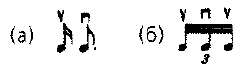
Второй «отскок», или третья нота варианта б), - ответная реакция на первую ноту, только более слабая; она появится сама собой, если тому ничто не препятствует. В обоих вариантах все суставы должны быть максимально свободными и эластичными, тогда движение будет стремительным, как удар кнута.
БЫСТРОЕ ДВИЖЕНИЕ СМЫЧКА ВНИЗ, МЕДЛЕННОЕ - ВВЕРХ
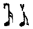
Здесь основной «бросок» вниз смычком идет от плеча, все описанные выше действия происходят в обратном порядке, а хлопок выполняется ладонью.
Когда предшествующие упражнения будут несколько раз повторены и вы овладеете данными ощущениями, выполните упражнения со смычком при максимально свободных пальцах, пока возрастающая уверенность не вытеснит возможный страх уронить смычок.
До сих пор движения «хлопок - отскок» выполнялись только по прямой линии, но они также могут соединяться с кругом или эллипсом. Принцип упражнения - атака и движение по инерции. Он использовался а упражнениях Первого урока при движениях всей рукой с одним импульсом на каждый круг. В этом случае хлопок слегка «округляется», а его импульс переносится кистью, запястьем и рукой по оставшейся части круга, которая соответствует отскоку.
Упражнения на непрерывное усилие («тяни — толкай»)
Во всех приведенных ниже упражнениях смычок проводится по указательному пальцу левой руки, что имитирует трение волоса о струну. Конечно, в скрипичной игре сила трения будет меняться пропорционально весу руки и нажиму пальцев, которые передаются на струну через трость смычка. Далее будут подробно описаны регулирующие движения, необходимые для сохранения параллельности ведения смычка. Они зависят от эластичности всех суставов.
Вниз смычком
Мы начинаем у колодки при согнутом положении пальцев правой руки {Ил. 24). Плечо и лопатка, опускаясь вниз, тянут за собой инертное предплечье. Угол локтя сохраняется почти неизменным до тех пор, пока смычок не достигнет середины, где ведущим становится предплечье. Запястье постепенно опускается.
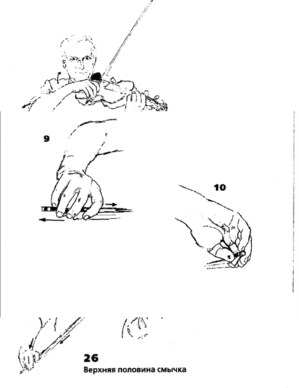
В середине смычка {Ил. 25} тыльная сторона ладони, запястье и предплечье образуют почти прямую линию.
В верхней половине смычка (Ил. 26) ведущим оказывается предплечье; оно тянет плечо15 вперед. Когда правая рука распрямляется, локоть слегка поворачивается вверх (движение, которое зарождается в плечевом суставе), а запястье опускается ниже прямой линии. В момент поворота локтя плечевой сустав выдвигается вперед непосредственно от лопатки, как если бы движение продолжалось дальше вперед. Запястье перенимает инициативу предплечья на заключительном этапе движения и тянет кисть, достигая своей низшей точки у конца смычка. В заключение, в самом конце движения пальцы начинают принимать форму, как при игре вверх смычком.
15 Во избежание путаницы следует подчеркнуть, что под словом «плечо» здесь и далее под¬разумевается часть руки от локтя до плечевого сустава, а не сам плечевой сустав.
ВВЕРХ смычком
Мы начинаем при вытянутом положении пальцев правой руки у конца смычка (Ил. 27), vi запястье, чтобы начать движение вверх смычком, немного поднимается. Затем ведет предплечье, которое тянет плечевой сустав вместе с плечом и лопаткой назад и вниз. Спина расслабляется, возникает ощущение, словно мышцы спины раздвигаются в стороны в ходе всего движения смычка вверх. Предплечье тоже немного разворачивается наружу.
В середине смычка (Ил, 28) тыльная сторона ладони, запястье и предплечье образуют почти прямую линию.
В нижней половине смычка (Ил, 29) импульс движению задает плечо. Несмотря на изменение формы запястья и пальцев, движущая сила должна сообщаться смычку непосредственно и непрерывно. (Если угол, образованный запястьем, будет слишком острым, действие движущей силы прервется.) В последней части штриха, перед самым началом движения смычка в обратном направлении, пальцы подготавливают это движение, принимая форму как при игре вниз смычком. Движение лопатки, которое на самом деле возникает в начале движения смычка вверх, становится более явным в нижней половине, где ощущается как «раскрывание» вправо. В то же бремя надо четко осознавать функцию лопатки в уравновешивании поднимающегося плеча и предплечья.
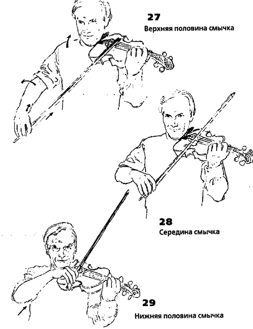
Движения пальцев
В обоих видах движений: «хлопок - бросок» и непрерывном «тяни - толкай» следует применять разнообразные движения пальцев, рассмотренные ранее («Соединение "Круга" и "Моста"»).
Чтобы лучше почувствовать контакт волоса со струной (с пальцем16), можно по-новому использовать противодействующие силы «моста». Мы видели, как «подпорки» раздвигаются в стороны друг от друга при движении смычка вниз и вверх. При движении смычка вниз указательный палец будет тянуть трость к себе, в то время как мизинец будет толкать от себя с внутренней стороны трости {Ил. 30).
При движении смычка вверх противодействуют друг другу указательный палец и безымянный, который тянет к себе, как показано на Ил. 31.
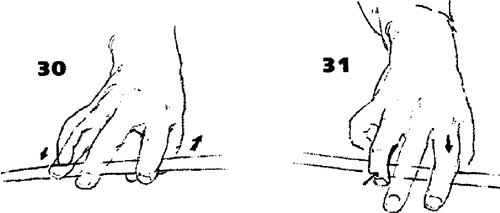
Чтобы предотвратить соскальзывание смычка к себе или от себя вдоль струны, необходимо оказывать на струну варенное давление. Такое «противодействие»17 - еще одна функция поворота смычка, который уже упоминался в связи с «кругом», образованным большим и средним пальцами (Ил. 32 и 33).
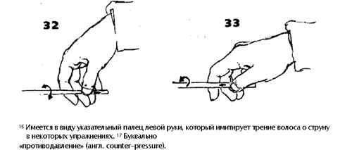
16 Имеется в виду указательный палец левой руки, который имитирует трение волоса о струну в некоторых упражнениях.
17 Буквально «противодавление» (англ. counter-pressure).
Положите волос смычка на указательный палец левой руки и, как описывалось ранее для движения смычка вниз, потяните указательным пальцем правой руки к себе, а мизинцем - от себя так, чтобы трость пододвинулась к вам; при этом не смещайте волос смычка. Волос продолжает плоско лежать на том же месте на пальце левой руки. Трость выпрямляется с помощью поворота большого пальца правой руки вверх.
При движении смычка вверх трость отодвигается от играющего за счет противодействия указательного и безымянного пальцев, как описывалось выше, а ее выпрямление происходит при помощи поворота большого пальца вниз.
Должен отметить, что хотя тянущее и отталкивающее усилия мы рассматривали при движении на весь смычок, необходимо научиться чувствовать их и в очень коротких штрихах, И наоборот, хотя «хлопок - отскок» - обычно короткое движение, задействующее небольшой участок смычка, оно также может выполняться на весь смычок. Мы вернемся к этому в Четвертом уроке.
Соединение движений «тяни — толкай» и «хлопок — отскок»
Когда вы привыкнете к непрерывному движению «тяни - толкай» при ведении смычка вверх и вниз, вам следует научиться соединять его с движением «хлопок - отскок» при каждой смене смычка.
Начиная, например, в согнутом положении пальцев, мы тянем - хлопок - отскок, толкаем - хлопок - отскок, тянем - хлопок - отскок и т. д. Можно легко добиться этого ощущения, если думать о фигуре «8»18, хотя в большинстве игровых ситуаций сохранится только намек на нее.
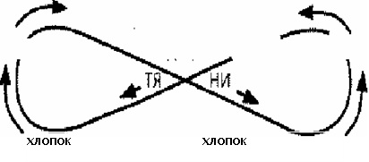
Описанное движение воспроизводит следующий ритмический рисунок:
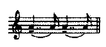
18 Очевидно, имеется в виду часто упоминаемое в методической литературе движение правой руки, по форме напоминающее цифру 8, которое помогает сгладить смены смычка.
Возврат к минимуму усилий и основному способу держания смычка.
В последнее время мы концентрировались на элементах силы, скорости и на многих мелких деталях пальцевых усилий, связанных с атакой и движением по инерции. Но нам следует часто возвращаться к противоположному - к «текучему» состоянию минимальных усилий, к отправному пункту или «нулевому» положению, в котором смычок удерживается одной правой рукой.
В таком положении мы можем наиболее четко осознать основные задачи кисти при уравновешивании смычка и задачи плечевого сустава и плеча при переносе его веса во время движения смычка в воздухе. К тому же, запомните: существует один основной способ держания смычка, к которому мы всегда должны возвращаться, - он описан в начале данного урока. В таком положении большой палец всегда округлен (согнут). Его сустав закруглен в сторону конца смычка и когда он поворачивает трость по часовой стрелке при движении смычка вниз, и когда он поворачивает трость против часовой стрелки при движении смычка вверх; в своем основном положении большой палец всегда оказывает воздействие на трость. Все остальные движения, связанные с направлениями ведения смычка вверх или вниз, являются вспомогательными к этому основному. Когда мы развили общую эластичность, следует остерегаться преувеличения вспомогательных движений. На практике они почти незаметны и будут ощущаться изнутри, особенно те, которые связаны с движениями пальцев правой руки. Следует помнить, что пальцы правой руки почти никогда не задают импульс движению. Скорее, они переносят и передают импульсы от болыших суставов, расположенных за ними.
Мы используем упражнения для развития гибкости и координации, однако после тысячи упражнений мы должны, в конце концов, забыть «грамматику» со всеми ее правилами и исключениями и вернуться к основному, эластичному, упругому, но и наиболее спокойному способу держания смычка.
Разумеется, в скрипичном исполнительстве необходимы не только два крайних вида движений (перенос смычка по воздуху и сообщение всей его силы струне), но и множество промежуточных градаций между ними. Скрипач должен не только владеть всем спектром этих движений, но и уметь при любых обстоятельствах по желанию чередовать их, чтобы отзываться на любые выдвигаемые музыкой требования, выразительные или технические.
Мы закончим урок еще одной серией непрерывных движений на весь смычок, медленных и быстрых, на этот раз не поддерживая смычок левой рукой, Следите, чтобы правая рука была максимально мягкой, но не «теряла» смычок. Запомните: характерный скрипичный звук - выразительный и певучий, сплошная линия legato, появляющаяся благодаря непрерывному движению смычка, которое создает иллюзию единого непрекращающегося звука.
ТРЕТИЙ УРОК
ПОДГОТОВИТЕЛЬНЫЕ УПРАЖНЕНИЯ ДЛЯ ЛЕВОЙ РУКИ
Распространенные ошибки при поддержке инструмента
Мы говорим о том, как держать скрипку, но само слово «держать» в значении жесткого и статического сжатия может быть истолковано ошибочно. Надо помнить, что скрипач, в отличие от пианиста или виолончелиста, чьи инструменты опираются на пол, должен поддерживать свой инструмент без посторонней помощи (он также не может ни спрятаться, ни укрыться за инструментом или под ним), более того, следует овладеть таким способом поддержки инструмента, который в любое время позволит осуществить наиболее свободное движение в каждой части грифа; наконец, это дви¬жение должно согласовываться с любым возможным движением правой руки. Как и в случае со смычком, здесь сформируется более свободная и здоровая основа - позже к ней можно будет приложить импульс и силу, - если развивать чувство равновесия и гибкость, вместо того чтобы зажимать скрипку между плечом и головой, а шейку скрипки - между большим и указательным пальцами левой руки.
Основное отличие при использовании большого пальца в скрипичной и фортепианной игре состоит в том, что скрипачу волей-неволей приходится поддерживать свой инструмент и держать смычок, и он должен научиться расслаблять большой палец после каждого усилия. (8 конце концов, пианисту не нужно поддерживать рояль.) Очень важно уметь ослаблять силу «держания», так как излишняя «цепкость» (grasping) большого пальца препятствует свободе наших движений.
В игре на фортепиано большой палец используется так же, как и любой другой, и он всегда расслаблен, когда не участвует в игре (то есть когда не нажимает на клавишу), что значительно облегчает фортепианную игру. Пока мы не научимся расслаблять и разрабатывать большой палец, мы не сможем хорошо играть на скрипке; отсюда мое огромное внимание к большому пальцу и к обучению приемам его использования.
Как держать скрипку
Для скрипки существуют всего две точки опоры; пассивная - ключица, которая сравнительно неподвижна (скрипка движется на ключице); и активная - левая рука, которая всегда мобильна и готова к движениям (рука двигает скрипку). Легкое давление головы на подбородник (вес головы) предохраняет скрипку от соскальзывания с выступа ключицы.
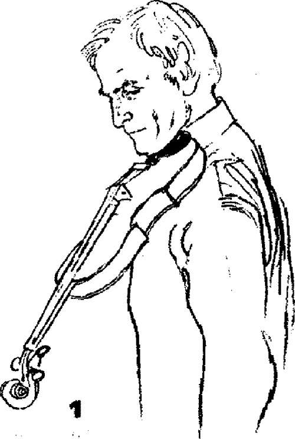
Таким образом, вершина плеча - где рука соединяется с телом - освобождается от необходимости поддерживать скрипку и находится в нормальном расслабленном состоянии, Это означает, что скрипач может сохранять свободное положение, удерживая скрипку или играя на ней, и это исключает поднятие левого плеча (распространенное среди скрипачей), которое является не только источником дискомфорта и боли, но и препятствует свободным движениям всей руки и пальцев.
Предпочтительнее пользоваться подушкой или мостиком. Если использовать для поддержки плечо, то оно лишается свободы движений, а если оно сильно зажато, то становится «замороженным» («frozen»). Скрипачам с длинной шеей и покатыми ключицами могут быть удобны мостик или специально подложенная ткань, однако их нужно касаться очень легко, без напряжения.
Чтобы освоить описанный здесь способ поддержки скрипки, полезно использовать мостик с довольно рельефной поверхностью. Модель «Карл Флеш»1 - хороший вариант, но, конечно, мостик лучше подбирать индивидуально.
1 Одна из классических моделей мостиков.
Учимся поддерживать скрипку
Удерживаем скрипку между головой и ключицей
Расположите скрипку так, чтобы она удерживалась между головой и ключицей и свободно свисала (Ил, 1); обе руки свободно висят по бокам, Скрипка будет стремиться вниз к полу - от соскальзывания ее удержит вес головы и сопротивление подбородка. Естественно, пока левая рука не приняла на себя часть веса инструмента, требуется больше усилий со стороны головы. Данное действие - «цыплячье» тянущее движение и давление головы, описанное в Первом уроке ~ окажется очень важным при выполнении нисходящих переходов. В действительности, даже если скрипка свободно свисает, она не касается плечевого сустава. Плечевой сустав должен быть полностью расслаблен и свободен, чтобы выполнять независимые от скрипки движения.
Теперь поставьте подушечку большого пальца левой руки на шейку инструмента, а второй2 палец на струну Ля примерно посередине шейки3. Сейчас нет необходимости в тянущем усилии головы для поддержки скрипки, и голова легко покоится на подбороднике, едва касаясь его, чтобы не допустить соскальзывания скрипки с плеча. Теперь поднимите скрипку так, чтобы она оказалась примерно параллельно полу (возможно, чуть выше). Приспособьте положение головы к новому положению скрипки, на мгновение приподняв голову и заново положив ее на подбородник. Плечо продолжает свободно свисать, теперь между ним и скрипкой образуется наибольшее свободное пространство (Ил. 2).
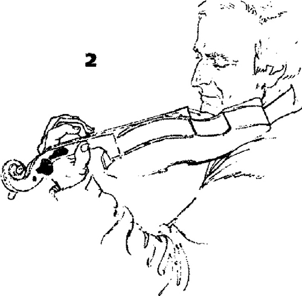
Данное упражнение особенно полезно для приобретения правильных ощущений при удержании скрипки между головой и ключицей.
Поддержка скрипки левой рукой (сначала без инструмента)
Теперь мы сконцентрируемся на поддержке скрипки левой рукой. Мы начнем с того, что правой рукой удержим вес левой руки (большой палец правой руки находится в ладони левой руки). Кисть левой руки должна находиться напротив плечевого сустава левой руки на одном с ним уровне, примерно на расстоянии фута4 от плеча.
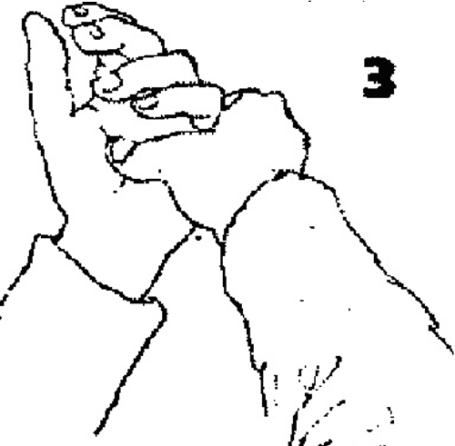
Рука должна свисать абсолютно свободно, чтобы ее можно было раскачивать как маятник. Запястье образует прямую линию с предплечьем и кистью. Теперь постепенно позвольте левой руке поддерживать себя самостоятельно с минимальными усилиями, не изменяя естественного свисающего положения локтя, которое является базовым для дальнейшей работы, Пальцы должны быть мягкими и округленными (Ил. 3).
2Здесь мы оставили авторскую нумерацию - она является наиболее распространенной нумерацией пальцев левой руки в методической литературе ло игре на струнных инструментах. Указательный палец называется вторым, средний - третьим и т. д., большой палец сохраняет свое обычное название.
3Как если бы рука находилась в третьей позиции.
4Около 30 сантиметров.
Упражнение для большого пальца
Как бы заменяя указательным пальцем правой руки скрипку, положите его на подушечку большого пальца левой руки, оттеснив верхнюю фалангу большого пальца немного влево, пока большой палец левой руки не окажется в вертикальном положении (Ил. 4). Вы заметите: подушечка большого пальца теперь расположена диагонально. Это означает, что, легонько надавливая указательным пальцем вниз, мы превращаем мягкую подушечку большого пальца в опору для поддержки. Сохраняя контакт, попеременно усиливайте и ослабляйте нажим - в последнем случае большой палец возвращается в первоначальное положение, но его верхняя фаланга должна оставаться вертикальной. Такая эластичность большого пальца является ключом и к поддержке скрипки левой рукой, и к расположению суставов левой руки.
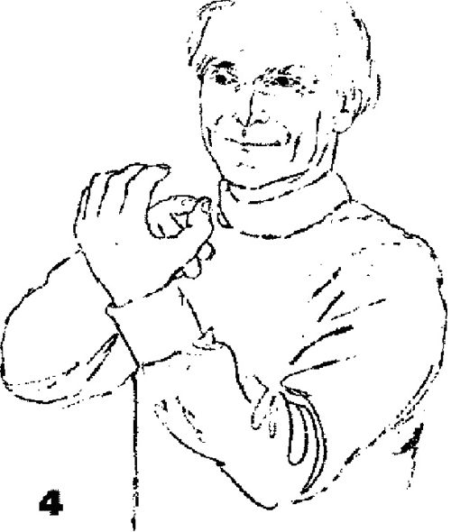
Теперь вы готовы вернуться к скрипке; выполняя вариант первого упражнения на поддержку скрипки5, на этот раз сфокусируйте внимание на роли левой руки.
5См. раздел «Учимся поддерживать скрипку».
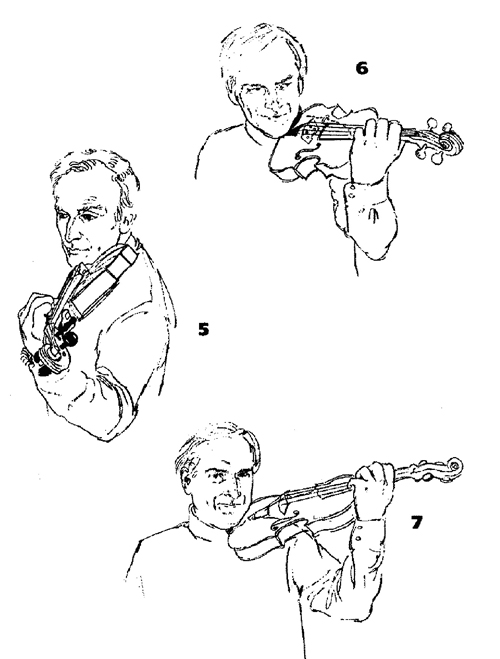
Пусть скрипку, которую вы удерживаете между головой и плечом, теперь кто-то другой поддержит за колки, или же легко опирайте головку инструмента о гладкую стену. Как и в первом упражнении, ваши руки должны свободно свисать по бокам. Затем поднимите левую руку в игровое положение, сохраняя мягкость руки и свисающее положение плеча. На самом деле, когда рука поднимается вверх, плечевой сустав отодвигается назад и вниз и оказывается на уровне, почти параллельном полу. Я бы хотел, чтобы вы уже сейчас знали об этой особенности, несмотря на то, что это свойство пригодится нам только позднее, когда мы будем изучать подвижность нашей постановки. Голова должна легко покоиться на подбороднике.
Постепенно перенесите вес скрипки на большой палец левой руки. Теперь скрипка опирается на подушечку большого пальца, как а предыдущем упражнении опирался указательный палец правой руки (Ил, 5), Верхняя фаланга большого пальца располагается почти вертикально. Когда вы ощутите это довольно хрупкое равновесие, то обнаружите: любое направленное вниз давление на гриф только увеличивает устойчивость положения скрипки (за счет силы трения), а не наоборот. Скрипачи с чрезвычайно гибким большим пальцем, которым трудно выполнять данное упражнение, должны быть особенно упорны - упражнение позволит им преодолеть это неудобство.
Как держать скрипку: общее описание
Я уже говорил, что пальцы должны быть мягкими и закругленными, локоть - свободно свисать, а запястье - быть прямым; также я отмечал необходимость эластичности и надежности поддержки скрипки большим пальцем. Теперь мы должны поднять пальцы над струнами, слегка развернув предплечье (и, соответственно, локоть) таким образом, чтобы суставы пальцев6 оказались почти параллельно грифу. Потренируйте данное движение, наблюдая, как пальцы (которые должны быть закругленными и мягкими), оказываясь над грифом, разделяются и образуют с большим пальцем такую же окружность, что и пальцы правой руки на смычке. Для формирования этой окружности, одновременно с разворотом локтя, отведите основную фалангу указательного пальца от грифа, а мизинец приблизьте к шейке скрипки (не изменяя форму большого пальца и сохраняя его контакт с инструментом). Только тогда все пальцы левой руки, включая и самый маленький - мизинец, закруглены и готовы в любой момент пересечь гриф и опуститься на любую струну с минимальными усилиями, Это положение руки - «золотая середина», оно должно быть идеально сбалансированным и естественным, Таким образом, создается возможность одинаковой амплитуды движений во всех направлениях (Ил. 6 и 7).
6Здесь и далее, по-видимому, имеются в виду основные суставы пальцев; в русской и советской скрипичной педагогике они чаще называются костяшками.
Чтобы с легкостью совершать переходы вверх и вниз по грифу с выносом руки на корпус скрипки, суставы должны находиться на высоте, позволяющей выполнить непрерывный плавный переход в высокую позицию. Следующая группа упражнений, основанных на подвижности большого пальца и свободе всех его суставов (в особенности основного), поможет вам достичь этого идеала.
Упражнения на развитие подвижности при основном способе поддержки скрипки, в особенности на развитие гибкости большого пальца
В обычном игровом положении большой палец слегка согнут. Конечно, чем сильнее он согнут, тем ближе к грифу оказываются суставы остальных пальцев. Вы должны быть уверены, что сгибание большого пальца происходит не от постоянного усилия, а от мягкости пальца, который под давлением скрипки немного прогибается вниз (точно так же, как он прогибался под давлением указательного пальца в одном из предыдущих упражнений).
Сначала два упражнения в поперечной плоскости.
Упражнение 1
Держите скрипку как обычно; пальцы левой руки находятся над струнами, но не касаются их. Теперь выполните движение из стороны в сторону одной только верхней фалангой большого пальца, сохраняя кисть, руку и основную фалангу большого пальца неподвижными, но мягкими (Ил. 8 и 9). Скрипка движется из стороны в сторону вместе с большим пальцем. Такое изменение угла, образованного верхней фалангой, будет использоваться при переходах.
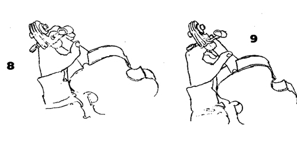
Упражнение 2
Вариант, который вам предстоит теперь попробовать, более сложный, и он станет легче только после нижеследующих упражнений. Начиная в том же положении, поставьте палец - например, второй - на любую струну и снимите голову с подбородника. Теперь раскачивайте скрипку вправо, потянув ее вторым пальцем (большой палец согнется), и влево, нажимая на нее вторым пальцем (большой палец выпрямится).
Теперь два упражнения в вертикальной плоскости. Первое - раскачивайте руку подобно маятнику, скрипка неподвижна; второе - скрипка движется, а рука остается на месте.
Упражнение 3
Начните как в Упражнении 1, кисть находится в своем самом высоком положении, большой палец согнут (Ил. 10). Отведите локоть влево, чтобы верхняя и нижняя фаланги большого пальца образовали прямую линию (почти перпендикулярно полу) -данное движение также отодвинет пальцы от грифа, а суставы пальцев займут более низкое положение (Ил. 11). Затем верните локоть в исходное положение. Большой палец, сгибаясь, позволит суставам вернуться обратно в самое высокое положение по отношению к грифу. Повторите движение локтя несколько раз, внимательно следя за тем, чтобы верхняя фаланга большого пальца оставалась практически неподвижной.
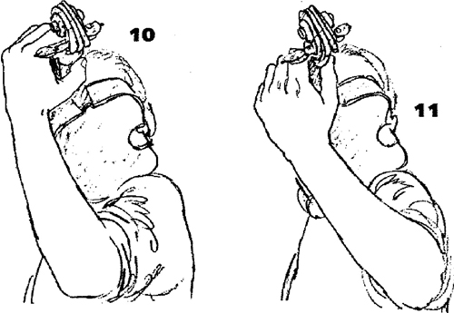
Это упражнение является обратным вариантом Упражнения 1, в котором двигалась только верхняя фаланга большого пальца, в то время как вся остальная часть кисти оставалась неподвижной. И снова полезным окажется принцип работы «с высоты»7, так как при сменах позиций и вибрато необходима легкость кисти.
Упражнение 4
Начните упражнение так же, как и предыдущее. Однако теперь большой палец выпрямляется в единую линию за счет своих собственных усилий (а не с помощью движения локтя), Локоть остается в своем обычном свисающем положении, а большой палец сам движется вверх до тех пор, пока полностью не распрямится, поднимая скрипку. Таким образом, суставы окажутся в своем самом низком положении, хотя в действительности они не совершали движения. Теперь расслабьте большой палец, чтобы вес скрипки направил его назад в согнутое положение, Данное упражнение является дополнительным к Упражнению 3; распрямление большого пальца здесь происходит благодаря его собственным усилиям, а не из-за поворота локтя. Но основная цель упражнения - расслабление, а не распрямление пальца. Несмотря на то, что верхняя фаланга большого пальца движется вверх и вниз, угол, который она образует со скрипкой, остается неизменным, как в Упражнении 3.
Добавляем эластичные движения пальцев
Теперь мы еще раз повторим два последних упражнения, добавляя движения каждого пальца левой руки по очереди. Очень важно выполнить упражнение на каждой струне (начиная на струне Ля и заканчивая на струне Соль) хотя бы в трех участках грифа; внизу8, на стыке шейки и корпуса скрипки и на самом корпусе. Самое простое - начинать все упражнения вторым пальцем, затем выполнять их третьим, четвертым и первым пальцами. Очень важно с самого начала во всех упражнениях работать также и над четвертым пальцем.
7 Вероятно, имеется в виду, что кисть левой руки находится в довольно высоком положении, которое также используется при восходящих переходах.
8То есть в первой позиции.
Вы помните: поворот руки, который разворачивает пальцы над грифом, естественным образом отделяет пальцы друг от друга. Это важно, поскольку пальцы никогда не должны зависеть друг от друга, и именно разъединенность обеспечивает их автономную работу. Поэтому очень важно сохранять костяшки пальцев под одинаковым углом (почти параллельно грифу) при работе и первым, и четвертым пальцами. Другими словами, в ходе выполнения данных упражнений легкий поворот локтя должен стать привычкой, предупреждающей возможный наклон кисти и соскальзывание пальцев с грифа (особенно когда не используется четвертый палец). Этот разворот происходит естественным образом с каждым покачиванием (я обычно называю его «pendel»9) локтя вправо.
9Pendei (нем,) - маятник.
Повтор упражнения 3
Легко поставьте второй палец на струну Ля на флажолет (не прижимая струну к грифу) немного ближе к себе, чем большой палец - так как в обычном положении напротив большого находится первый палец. Струна диагонально пересекает подушечку второго пальца (Ил. 12).
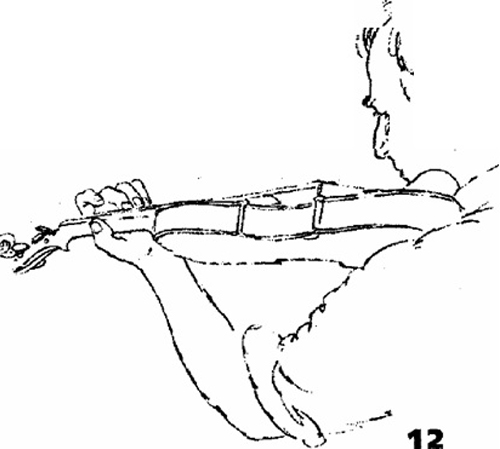
Поскольку большой палец согнут, суставы пальцев находятся в самом высоком положении, а второй палец (располагаясь, на самом деле, не абсолютно вертикально) образует максимально острый угол к грифу. В этом положении мы формируем и наблюдаем максимальное свободное пространство; между всеми пальцами, в окружности между большим и вторым (или любым другим) пальцем, между шейкой скрипки и основным суставом первого пальца - и максимальное расстояние между плечом и скрипкой (базовое ощущение для последующих упражнений и для моей системы в целом).
Чем больше свободы в суставе большого пальца, тем больше легкости при развороте локтя левой руки вправо и вверх при держании скрипки. Очень важно всегда помнить про эластичность большого пальца.
Продолжайте как в Упражнении 3 - отведите локоть влево. Верхняя фаланга второго пальца (как и верхняя фаланга большого) должна все время сохранять один и тот же угол по отношению к грифу. В то время как обе фаланги большого пальца выстраиваются в прямую линию, локоть выдвигается вправо, а второй палец сгибается (Ил. 13).
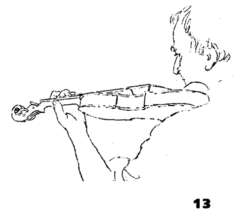
Когда локоть идет обратно вправо и вверх, большой палец сгибается, а второй распрямляется. Запястье должно быть свободным, но все время сохранять прямую линию с предплечьем и кистью вплоть до основных суставов пальцев в верхних позициях и до суставов второй фаланги - в нижних. Таким образом, все вышеописанные действия зависят исключительно от эластичности основного сустава большого пальца. Главный результат движения локтя10 - организация свободных движений пальцев на разных струнах.
10В русских и советских методических трудах по скрипичной игре и педагогике это движение локтя получило называние «рулевого».
Координация движений плеча и руки
При игре на скрипке плечевой сустав обязательно должен быть свободным, чтобы peaгировать на каждое движение руки. В этом случае возникает взаимосвязь: когда локоть идет вправо, поднимая кисть в высокую позицию, плечевой сустав опускается; когда локоть идет влево, опуская кисть в нижнюю позицию, плечевой сустав возвращается в более высокое положение (он по-прежнему расслаблен). Если плечевой сустав реагирует естественным образом, эти движения едва заметны; в них не должно быть усилий или преувеличения. Чем выше находится скрипка, тем ниже оказывается плечо. Я сознательно связываю вынос локтя вправо с «броском» кисти вверх (иначе говоря, запястье левой руки выгибается: Ил. 14), а движение локтя влево - с направленным внутрь движением запястья и «броском» кисти назад к порожку (Ил. 15).
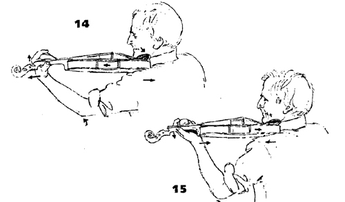
Такое колебательное движение подводит нас непосредственно к вибрато. Вибрато покрывает небольшой участок грифа и является скорее вращением, чем движением, переносящим на большое расстояние (Ил. 16). Его можно легко освоить, если понять: когда локоть движется в одну сторону, кисть движется в противоположную (локоть идет влево - кисть к подставке, и наоборот).
Я уделяю так много внимания данному рефлексу, потому что он увеличивает устойчивость общей постановки левой руки и кисти на грифе. Уже сейчас необходимо упомянуть, что можно легко сочетать движение кисти е сторону подставки с движением локтя вправо, которое опять передается в запястье и выбрасывает кисть вперед (как показано в утрированном виде на Ил. 17). Таким же образом движение локтя влево бросает кисть назад а сторону головки скрипки. Использование этих двух добавочных движений зависит от направления движения и импульса правой руки. Так, выполнять переход в высокие позиции (то есть в сторону подставки с выносом локтя вправо) более естественно вниз смычком (Ил. 17). При движении вверх смычком более естественно выполнять переход с поворотом локтя влево (Ил, 16).
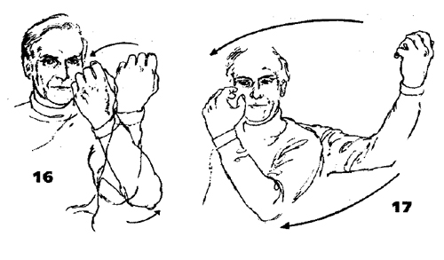
Повтор упражнения 4
Это упражнение поможет вам скоординировать различные движения большого пальца с движениями остальных пальцев и дополнительно развить эластичность большого пальца.
Поставьте один палец на флажолет. Не изменяя положение кисти и свисающее положение руки, приподнимите и опустите скрипку за счет одного только большого пальца, который надавливает вверх, а затем сгибается в свое обычное положение. Когда большой палец выпрямляется, палец на струне11 сгибается и наоборот. Верхние фаланги обоих пальцев сохраняют одинаковый угол по отношению к грифу.
11То есть на флажолете
Упражнение на снятие пальцев
Поставьте все пальцы легко (как на флажолеты) на одну струну. Все пальцы должны быть мягкими и закругленными и не соприкасаться друг с другом. Не отрывая остальные пальцы, поднимайте в воздух - как можно выше и быстрее - каждый палец по очереди (иногда они будут выпрямляться, чаще - сохранять округлую форму); затем позвольте пальцу снова мягко упасть. Каждое движение следует повторить несколько раз; следите, чтобы кисть не зажималась (Ил. 18 и 19).
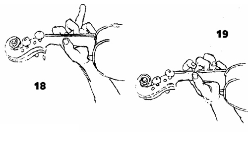
Выполните упражнение, сначала поднимая пальцы поочередно, потом вразброс, а затем несколькими пальцами одновременно. Надо проработать это на каждой струне, а затем все пальцы поставить на разные струны и выполнить еще раз. Запомните: в скрипичной игре очень важно концентрироваться как на падении пальцев, так и на их снятии. Выработав хорошую физиологическую основу, в концертном исполнении вы сможете ограничивать амплитуду снятия пальцев ради чистоты звучания.
Давление
В скрипичной игре не следует связывать слово «давление» со словом «зажатие» (как и слово «держать» со словом «вцепляться»). Если мы соединим подушечки пальцев обеих рук, то сможем оказать давление двумя способами. Первый способ: сжать руки, и это сократит расстояние между ними; другой способ: расширить круг, образованный кистями, руками, плечами и спиной. Мы увеличиваем круг и наращиваем давление подушечек друг на друга. Этот принцип работает во всех случаях противодействия (палец на струне против большого пальца и т. д.).
В левой руке и кисти движения и ощущения следующие. Держите скрипку кистью левой руки в ее обычном высоком положении, второй палец стоит на флажолете на струне Ля, Чтобы понять, сколь мало (или сколь много) усилий надо приложить для перекрытия струны, сначала постепенно усиливайте давление, пока струна не коснется грифа. Очень важно ставить палец на струну под таким углом, чтобы палец касался грифа равномерно с обеих сторон струны12. Когда вы будете переходить от легкого давления на гриф к флажолету, появится чувство расширения внутри кисти, происходящее из-за легкого поднятия суставов пальцев. Оно должно возникнуть одновременно или, точнее, вследствие давления пальца на гриф. Легкое поднятие сопровождается соответствующей реакцией руки и плеча - движением локтя вправо и падением плеча, как миниатюрная версия возвратно-поступательного движения, упомянутого ранее («Координация движений плеча и руки»). При ослаблении давления происходит обратное движение. Палец должен надавливать на струну строго вертикально, чтобы она не оттягивалась в сторону.
12То есть ставить палец в центре подушечки.
Сначала выполните данное упражнение, возвращая палец при ослаблении нажима на флажолет, затем - полностью снимая палец со струны. Когда ваш палец опять коснется струны, почувствуйте, как он проходит через зону флажолета перед тем, как прижать струну к грифу. Важно, чтобы во всех упражнениях не участвующие в игре пальцы оставались мягкими, не соприкасались и не «напирали» на активный палец. Все пальцы должны находиться близко к струне и над ней, примерно на одном уровне.
После того, как вы поработали каждым пальцем в отдельности, следует выполнить упражнение всеми парами соседних пальцев и, наконец, всеми пальцами в разброс. Над этим можно работать двумя способами:
1. Палец, который был задействован первым, расслабляется до флажолета, а другой палец в то же время опускается на флажолет. Когда второй палец давит вниз, первый поднимается вверх. Следовательно, оба пальца оказываются на флажолете и покидают его в одно время, но в противоположных направлениях.
2. На этот раз палец, который был задействован первым, при ослаблении давления полностью снимается со струны перед тем, как ее коснется следующий палец.
Основное отличие этих двух упражнений заключается в том, что перед каждым усилием в первом случае пальцы покоятся на флажолете, а во втором - в воздухе, Тем не менее, общее и самое главное для обоих упражнений - полное расслабление перед каждым нажимом. Это один из основных принципов скрипичной игры, упомянутый в начале данного урока.
Удостоверьтесь, что вы хорошо помните все движения кисти, руки и плеча, сопровождающие движения пальцев. Следите, чтобы угол верхней фаланги пальца не менялся из-за поднятия суставов и чтобы подушечка пальца касалась грифа равномерно с обеих сторон струны; каждый из этих пунктов гарантирует, что струна не оттягивается в сторону.
Горизонтальное движение
До сих пор мы концентрировались на вертикальном движении кисти и пальцев, которое при мягкости нижней фаланги большого пальца задает необходимую высоту суставов над грифом. Теперь мы освоим горизонтальные движения, лежащие в основе вибрато и импульса, необходимого при движении кисти вверх и вниз по грифу.
В этом и многих последующих упражнениях мы работаем от средней позиции13, проходя через нее при движении из одного крайнего положения в другое. Вам следует запомнить: во время игры мы никогда не окажемся в средней позиции и будем редко касаться крайних, но в результате работы над ними у нас появится больший контроль, гибкость и сила на всех участках между ними.
13Кисти.
Поставьте один палец на струну примерно посередине грифа (чтобы не задевать колки), костяшки в обычном высоком положении, пальцы не соприкасаются. Надежно удерживая подушечку пальца на одном месте, выгните запястье от себя, нарушая привычную прямую линию руки; запястье оттянет суставы назад вслед за собой. Это тянущее движение должно сопровождаться легким движением суставов пальцев вверх и выносом локтя вправо, а плечевой сустав отреагирует в противоположном пальцевым суставам направлении (Ил. 20).
Движение запястья, оттягивая суставы назад в сторону головки скрипки, постепенно выпрямляет большой палец и палец на струне, изменяя угол пальца по отношению к грифу. Остальные пальцы, находящиеся в воздухе, тоже вытянутся; они должны едва касаться друг друга, оставаясь мягкими. Поскольку вы вытягиваете скрипку из пространства между ключицей и головой, последняя, опираясь на подбородник, должна одновременно тянуть скрипку назад, но ровно настолько, чтобы не допустить соскальзывания.
Удержав крайнее положение несколько секунд, ослабьте тянущее напряжение и вернитесь в мягкую исходную позицию: суставы расположены по-прежнему высоко, большой палец согнут, голова покоится на подбороднике. Это движение следует отработать несколько раз перед тем, как переходить к следующему (которое, в свою очередь, тоже следует повторить).
Теперь из данного положения перейдем в другую крайность: запястье тянет суставы внутрь, палец на струне максимально сгибается, а большой палец, как и прежде, выпрямляется. Суставы пальцев опускаются, локоть идет влево, плечевой сустав опять реагирует в противоположном суставам пальцев направлении - на этот раз идет им навстречу (Ил, 21),
Как и палец на струне, все остальные пальцы тоже сгибаются, оставаясь мягкими и не соприкасаясь. Теперь вы тянете скрипку к шее, и необходимость даже в легком давлении головы на подбородник (чтобы уберечь скрипку от соскальзывания) исчезает. Хотя во время игры голова все время легко касается подбородника, следует осознавать три вида ощущений: голова тянет к себе, свободно покоится на подбороднике и фактически бездействует. В данном упражнении надо приподнять голову с подбородника, но ровно настолько, чтобы просто не касаться его. Удержав это крайнее положение несколько секунд (как и при выгибании запястья), расслабьтесь и вернитесь в обычное положение, чтобы повторить весь цикл еще раз.
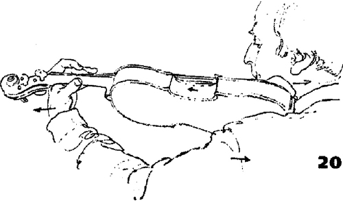
Чтобы убедиться в верности данных ощущений и их координации, замените скрипку правой рукой: большой палец левой руки находится в правой ладони, а второй палец левой руки - на тыльной стороне. Теперь вы целиком видите плечо и руку и сможете визуально отследить все движения в то время, когда вы тянете запястье левой руки к себе и от себя, всегда делая краткую остановку в середине.
Пока вы находитесь в прежнем положении (большой палец правой руки заменяет собой скрипку), у вас есть возможность почувствовать, что большой палец давит в направлении, противоположном активному пальцу14 и движению суставов; значимость этого действия будет подробно рассматриваться позже. Повторите описанное выше упражнение, но теперь лучше следите за тем, чтобы запястье находилось на одной линии с тыльной стороной ладони и предплечьем. Совершите энергичное движение из одного крайнего положения в другое, полностью исключив остановку в середине. Во время упражнения помните об упомянутом выше «броске» вверх15, которому всегда должно способствовать «раскрытие» суставов пальцев, движущихся от себя. Поднятие суставов является базовым для выполнения нисходящих переходов и должно войти в привычку. Повторив это несколько раз, теперь позвольте пальцу левой руки скользить вперед-назад на кисти правой руки. Когда локоть идет вправо, суставы тянут палец в его вытянутое положение, когда локоть идет влево - в наиболее согнутое. Хотя большой палец всегда остается на одном и том же месте, действуя как точка опоры, вы скоро почувствуете, что он отнюдь не пассивен, большой палец помогает выполнить «бросок» суставов. Он оказывает давление в сторону подставки, когда суставы «раскрыты», а палец на ару не выпрямлен; и в сторону головки скрипки, когда суставы тянут к подставке, а палец на ару не согнут.
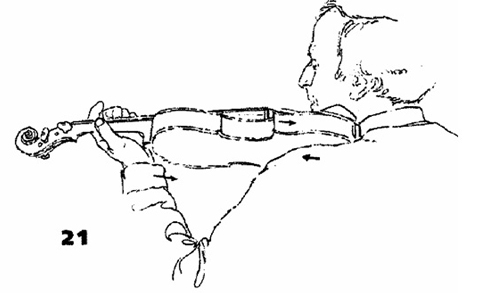
Я не останавливаюсь подробно на другой паре движений (то есть на движении в сторону подставки в сочетании с движением локтя вправо и в сторону головки скрипки в сочетании сдвижением локтя влево). Они относительно просты и не способствуют овладению устойчивой постановкой левой руки, которая нуждается скорее в тренировке движения локтя вправо при «броске» кисти вверх16 в сторону головки скрипки.
14То есть пальца на струне, который участвует в выполнении упражнения.
15Слово «вверх» здесь может ввести в заблуждение - имеется в виду не вверх вдоль грифа, а вверх в вертикальной плоскости, что в данном случае будет сочетаться с движением вдоль грифа вниз.
16См, раздел «Координация движений плеча и руки».
Окружности
Мы работали по отдельности над вертикальными, горизонтальными и попереч¬ными движениями; все они задействуют естественное покачивание локтя. Теперь три плоскости, каждая из которых включает в себя два крайних положения (вертикальная пара - вверх и вниз, горизонтальная пара - к себе и от себя, поперечная - вправо и влево), следует соединить на скрипке, чтобы суставы при помощи гибких движений всех сочленений активного и большого пальцев, запястья и локтя, очертили окружность. Суставы могут подниматься на дальней стороне круга и двигаться к вам через его вершину или подниматься на ближней стороне и двигаться от вас через вершину круга. Целью всех наших усилий является предупреждение возможных противоречий в движениях и гармоничное объединение движений в единое целое.
Три упражнения на сопротивление большого пальца суставам пальцев и пальцам на грифе
1. Большой палец остается на одном месте; палец, который находится на струне, скользит,
2. Подушечка пальца, который находится на струне, неподвижна; большой палец скользит.
3. Большой палец и палец на струне одновременно скользят в противополож¬ных направлениях.
Упражнение 1
Начните как раньше, второй палец стоит на струне примерно посередине грифа. Теперь одновременно потяните суставы назад, а большой палец вперед (Ил. 22). Как устойчивая, но активная опора, большой палец помогает суставам оттянуть палец на струне а сторону головки скрипки, а также локтю, который идет вправо, Вернитесь в среднее положение и, продолжая опираться на большой палец, потяните суставы вперед. На этот раз большой палец тянется в сторону головки, палец на струне закругляется и скользит в сторону подставки, а локоть идет влево (Ил. 23). В обоих случаях плечевой сустав, как обычно, реагирует в противоположном суставам направлении. (Вы должны помнить также о поднятии суставов, когда тянете их от себя.)
Привыкнув к данным движениям, можете исключить остановку в середине и быстрее двигаться из одного крайнего положения в другое. Затем выполните упражнение остальными пальцами.
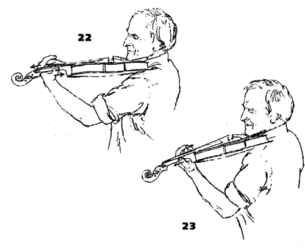
Упражнение 2
В этом упражнении подушечка пальца на струне остается на одном месте, в то время как большой палец скользит в направлении своего собственного давления17. Все остальные движения такие же, как в Упражнении 1.
Упражнение 3
Данное упражнение является комбинацией Упражнений 1 и 2. Подушечка пальца на струне и большой палец теперь скользят в противоположных направлениях. Расстояние, на которое они взаимно удаляются, должно быть очень небольшим, иначе будет трудно вернуться в исходное положение и поднять суставы, когда большой палец тянет вперед18.
17То есть в сторону порожка скрипки при усилии, направленном «от себя», и в сторону под¬ставки при усилии, направленном «к себе».
18То есть s сторону подставки.
Щипки (pizzicato) левой рукой
Хорошее упражнение на развитие эластичности пальцев, так как даже в pizzicato пальцы не должны быть жесткими.
Легко поставьте второй палец а его обычном положении на оруну Ре. Остальные пальцы мягкие и находятся в воздухе над струной, не соприкасаясь. Прижмите струну к грифу и одновременно потяните ее так, чтобы верхняя фаланга пальца прогнулась (Ил. 24).
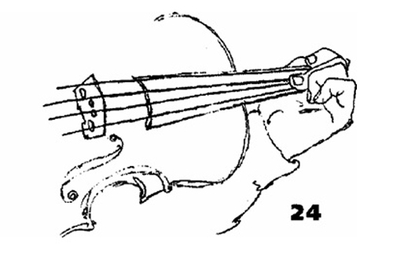
Как всегда, когда палец прикладывает силу, «раскрытие» суставов и кисти должно повлечь скоординированное, однако небольшое движение всей руки и плеча возвратно-поступательное движение, см. «Координация движений плеча и руки»). Движение должно быть настолько гибким, чтобы реагировать на мельчайшие движения пальцев и приспосабливаться к ним.
Палец, продолжая оттягивать струну в сторону, отпускает ее, и его верхний сустав, всегда мягкий и гибкий, отскакивает обратно в свое обычное согнутое положение. Упражнение надо выполнить каждым пальцем на всех струнах.
Дальнейшие щипковые упражнения
1. а) Поставьте первый палец на ноту ля в первой позиции на струне Соль, второй - на ноту фадиез на струне Ре, третий - на ноту ре на струне Ля, а четвертый - на си на струне Ми. Несколько раз ущипните струны поочередно каждым пальцем, остальные пальцы округлены и мягко покоятся на своих нотах сначала на флажолетах, потом на «обычных» звуках). Не забывайте о легком поднятии суставов во время каждого щипкового движения.
б) Такое же движение как при варианте а), но теперь пераый палец стоит на ноте фа на струне Ми, второй на ноте до на струне Ля, третий на ноте соль на струне Ре, четвертый на ноте ре на струне Соль19. Это более сложное расположение, которое требует легкого поворота локтя вправо в добавление к обычному высокому положению суставов. Это поможет расположить четвертый палец на струне Соль без потери его округлой формы. Следите за тем, чтобы первый и второй пальцы не оттягивали струны Ми и Ля.
2. а) Расположите все пальцы на струне Ми, затем ущипните струны Ля, Ре и Соль поочередно каждым пальцем, стараясь не смещать остальные три пальца, находящиеся на струне Ми.
б) Теперь поставьте все пальцы на струну Соль и ущипните струны Ре, Ля и Ми поочередно каждым пальцем.
Скольжение поочередно каждым пальцем
Данное движение необходимо в хроматических пассажах и в двойных нотах. Поставьте все четыре пальца на одну струну, оставьте небольшое пространство между подушечками пальцев. Каждым пальцем поочередно выполните скольжение вверх и вниз по соседней струне на допустимое расстояние, не меняя положение всех остальных пальцев. Это можно выполнить двумя способами: используя явное и активное взаимодействие не только суставов и пальцев, но и всей руки или же изолированным независимым движением одного только скользящего пальца, сохраняя кисть и руку мягкими.
То же упражнение следует выполнить двумя пальцами, скользящими одновременно в противоположных направлениях. В этом случае усилия сосредоточены в кисти и пальцах, как и при вышеописанном втором способе.
Независимость пальцев
Существуют чрезвычайно полезные серии упражнений Д. С, Доуниса, которые соединяют синхронные движения: поднятие, щипки и скольжение пальцев. Они называются «Полная независимость трех пальцев» и «Полная независимость четырех пальцев20» . Над ними можно работать уже на данном этапе, хотя пока вы не сможете выполнить их должным образом со смычком.
19Что соответствует так называемому «аккорду Джеминиами».
20 Dounis D. С. The complete independence of 3 fingers, The complete independence of 4 fingers (published by Lavender Publications and available through Novello and Co., Ltd., London). Полное собрание упражнений Доуниса см. в изд.; The Dounis Collection: Eleven Books of Studies for the Violin, by Demetrius Dounis. New York: Carl Fischer, 2005. - Примеч. ред.
ЧЕТВЕРТЫЙ УРОК
ДВИЖЕНИЯ СМЫЧКА
Детально описать все бесчисленное количество различных движений пальцев и суставов (учитывая их невероятную сложность) невозможно, да и не нужно. На мой взгляд, достаточно осознавать основные типы движений, чтобы все их неисчислимые варианты стали доступны скрипачу во время исполнения, Некоторые очень одаренные исполнители (проявившие свой талант уже в юном возрасте), физически свободные и достаточно гибкие, самостоятельно координируют свои движения и могут никогда не встретить в этом препятствий. Однако такое приятное состояние может впоследствии исчезнуть - если не заложена крепкая база знаний, не осознаны некоторые основополагающие вещи и - позволим себе повториться - если музыка не приобрела для человека особенное значение, не стала воздействовать на слух и воображение исполнителя.
На данном этапе следует повторить Второй урок, где мы подробно рассматривали основной способ держания смычка, а также приспосабливающие движения, необходимые для сохранения параллельности ведения смычка подставке. В качестве важной подготовки к последующим упражнениям вначале рассмотрим три составляющих полного движения смычка вниз.
Основное движение смычка
А) НАЧАЛЬНЫЙ ИМПУЛЬС
Плечо правой руки тянет и частично переносит вес смычка; в результате происходит поворот плеча против часовой стрелки. Данную часть движения можно обособить в одном коротком звуке sf, его можно воспроизвести в любой части смычка и любым количеством смычка (даже на весь смычок в быстром штрихе), и звук может быть громким или тихим.
Б) НЕПРЕРЫВНАЯ ЧАСТЬ
Непрерывная часть движения требует, чтобы смычок удерживался крепче (распрямление «подпорок»1) и ощущалось сопротивление струны. Рука, кисть и пальцы на протяжении данной части движения (которая может задействовать любое количество смычка, быть медленной или быстрой, а звук - громким или тихим) действуют как единое целое.
1См. Второй урок.
в) СВЯЗУЮЩАЯ ЧАСТЬ
В заключительной части движение переходит в запястье, которое теперь расслаблено, а кисть принимает форму как в начале движения смычка вверх. Третья часть движения уже относится к следующему движению вверх смычком. Связующая часть может принимать различные формы - от мгновенной и практически незаметной смены смычка до довольно широкого быстрого штриха в подвижных пунктирных ритмах. (Конечно, в самом конце движения смычка вверх кисть уже принимает форму как в начале движения смычка вниз.)
Штрих, будучи быстрым или медленным, коротким или длинным, громким или тихим, может включать все этапы - а), б), в) - в равных пропорциях, а также преимущественно один из них. Если при движениях смычка вверх и вниз использовать исключительно вариант б), то пальцы будут почти неподвижны, без импульса и «бросков». Предплечье (или локоть, при игре у конца смычка) проходит то же расстояние, что и смычок на струне.
Работая над положениями правой руки при движениях вниз и вверх смычком, вы заметите: поднятие суставов при движении смычка вверх изменяет угол, образованный суставами, - они слегка подчеркивают названное направление движения. Это должно происходить вследствие выпрямления пальцев - особенно среднего и безымянного - как результат упражнений, развивающих сбалансированное удерживание смычка между указательным, средним пальцами (также между указательным, средним и безымянным) и большим пальцем. Попробуйте играть, удерживая только один из пальцев на смычке2 , чтобы самостоятельно выявить функции каждого пальца. Старайтесь четко почувствовать самостоятельность и различие функций указательного и среднего пальцев. Указательный палец выполняет отчетливое поперечное движение в своем основном суставе, движение требует осознанности и мягкости, не зависимой от действий среднего пальца.
Описанное выше действие способствует выполнению штрихов, облегчает их выполнение и увеличивает скорость, предоставляя исполнителю возможность использовать штрих, состоящий только из элементов «а» и «в» (минуя секцию «б») основного движения смычка. Данное движение превращается в штрих с отдельным импульсом3 - либо в staccato в быстрых штрихах, либо в быстрое, легкое, плавное и мягкое detache в более широком штрихе, и даже на весь смычок.
2Имеется в виду напротив большого пальца.
3На каждое движение смычка.
Упражнение на основное движение смычка
Упражнение 1
Удерживайте скрипку в игровой позиции. Третий палец левой руки стоит на ноте Ре (легко, как на флажолете) в первой позиции на струне Ля. Суставы в высоком положении, кисть мягкая, большой палец согнут, как часто указывалось во Втором уроке. Далее, без смычка, выполните серию движений на целый смычок в воздухе, непрерывно вниз-вверх, точно над струной и в плоскости каждой струны поочередно. Отслеживайте асе моменты, упомянутые во Втором уроке.
В самом конце движения смычка вниз расширьте амплитуду движения до максимума, выдвинув (но без принуждения) лопатку плеча вперед. Как следствие, вперед выдвинется и плечевой сустав; однако никогда не поднимайте его, Хотя вы по-прежнему не удерживаете смычок в руке, все же следует помнить про «обратное» закругление и распрямление пальцев при движении смычка вниз и о том, что пальцы «собираются вместе» при движении смычка вверх. Никогда не теряйте ощущения сбалансированности смычка. Почувствуйте эти движения в соединении с движением запястья и поворотом руки и локтя - вверх и против часовой стрелки при движении смычка вниз, и в противоположном направлении при движении смычка вверх -и s соединении с мягким растяжением мышц спины и движением лопатки.
Упражнение 2
Держите смычок легко и свободно. Выполните предыдущее упражнение в воздухе - смычок находится на расстоянии примерно одного дюйма4 над струной и движется параллельно подставке. Вспомните все подробности, описанные во Втором уроке (смотрите Ил. 24-295), - в особенности про поднятие запястья и выпрямление пальцев при движении смычка вверх (без потери легкого ощущения смычка в пальцах) и про опускание запястья и сгибание пальцев при движении смычка вниз. Может быть, немного рано вводить подготовительные движения, но я хотел бы посеять семена следующей мысли. Сгибая большой палец в направлении конца смычка - когда вы подходите к колодке при движении смычка вверх, - вы будете способствовать давлению мизинца, которое необходимо для равновесия смычка. И вы также поможете подготовить движение смычка вниз, позволив свободному импульсу кисти оказаться за пределами той точки, где заканчивается движение запястья, а небольшое движение суставов предвосхищает новое движение вниз смычком6.
41 дюйм = 2.5 см
5Раздел «Упражнения на непрерывное усилие {"тяни - толкай")».
6Данное движение в методической литературе получило название "фингерштрих"
Упражнение 3
Теперь вы должны быть готовы исполнять флажолет одновременно с открытой струной, а также чередовать флажолет и открытую струну. Главная задача - сделать звук легким, без намека на выразительность. Преимущество использования двух струн - на одной флажолет, другая открытая - состоит в сочетании легкости штриха, точности уровня правой руки и размеренной волнообразности ее движений с самого начала, что исключает ненужный страх задеть другую струну! Я верю в достижение контроля не через страх и избегание, а через двигательную чувствительность, эластичность и продолжительный поиск; Дополнительное преимущество использования флажолета и открытой струны на начальном этапе состоит в том, что перед знакомством с вибрато ухо слышит чистый звук, высота которого может быть легко откорректирована. Попробуйте выполнить эти упражнения на других парах струн и других флажолетах, связывая ноты в группы потри или шесть:
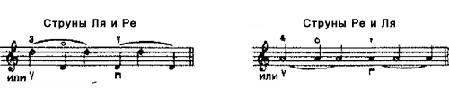
Существуют известные проблемы, связанные с выполнением этого штриха на весь смычок, которые легче всего можно продемонстрировать следующим образом.
Начните у конца смычка, смычок легко покоится на струне Ля. Все пальцы легко расположены на смычке, безымянный палец и мизинец его едва касаются, Теперь выполните медленное и равномерное движение вверх смычком на весь смычок, точно до колодки. Поскольку расстояние от конца смычка до точки его контакта со струной увеличивается, то, естественно, увеличится и его вес, приходящийся на струну. Автоматически произойдет нежелательное crescendo, если в кисти правой руки не будет непрерывного компенсирующего движения. Ответственность за это движение несет преимущественно мизинец (а также безымянный палец) и, конечно, вся рука, на действия которой реагирует запястье. Вспомните похожую ситуацию из Второго урока7, когда палочка постепенно вытягивалась из пальцев из среднего уравновешенного положения в обычное положение при игре у колодки.
Когда смычок находится в наиболее горизонтальной плоскости, то есть на струне Соль (Ил. 1а), увеличение его веса на струне8 будет значительно сильнее, чем в его максимально вертикальной плоскости, то есть на струне Ми (Ил. 16)). Когда пальцы слегка распрямляются при движении смычка вверх, все они, за исключением мизинца, должны сохранять мягкость. Мизинец в одиночку увеличивает и уменьшает свое давление, чтобы компенсировать постепенное изменение веса смычка, - при игре в нижней половине большая часть веса смычка удерживается, при игре в верхней половине ббльшая часть веса смычка передается на струну. Локоть остается почти на одном и том же уровне, если вы не выполняете смену струн.
7Раздел «Как уравновесить палочку в игровом положении».
8Имеется в виду: по мере приближения к колодке.
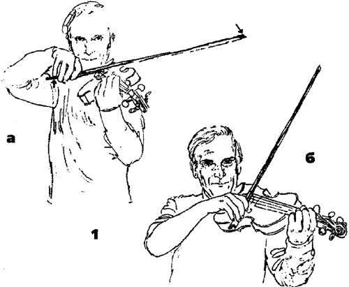
Старайтесь почувствовать вибрацию струны, поступающую через смычок в пальцы, не только с целью проверить чувствительность пальцев на смычке, но также для расширения вашего представления о самых тонких ощущениях.
Чтобы развить чуткость пальцев на смычке, держите скрипку в слегка завышенном положении. Почувствуйте, как в определенной точке безымянный палец предотвращает соскальзывание смычка к подставке. Необходимость данного действия особенно заметна при движении смычка вверх, когда вес смычка увеличивается. В качестве общего правила: полезно играть на скрипке, удерживая ее в слегка завышенном положении. Это освобождает подбородок, шею и голову и дзет исполнителю большую свободу и власть - и над его собственным исполнением, и над публикой.
Безымянный палец и мизинец часто снимаются со смычка, когда он достигает определенной точки при движении вниз, кроме тех случаев, когда смычок надо снять со струны. Обычно это также происходит при игре в верхней трети смычка. Конечно, когда смычок идет вверх и достигает нижней половины, безымянный палец и мизинец вновь обретают свою балансирующую функцию.
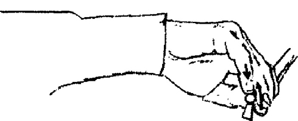
Упражнение 4
Во Втором и Третьем уроках мы уже проработали движения в двух крайних положениях, начиная в среднем положении и возвращаясь в него. Теперь мы отработаем движение смычка следующим образом: разделим его на две части (вместо того, чтобы двигаться непрерывно на протяжении всего штриха, как в упражнениях 1,2 и 3 данного урока), Таким образом, вы лучше осознаете, что в верхней половине смычка движением активно управляет предплечье, тогда как в нижней половине смычка - плечо, заодно поддерживая вес смычка. Данное движение плавное, без толчков - то есть с минимальным значением этапов а) и в) основного движения смычка. Не старайтесь «тянуть» звук, поэтому этап б) здесь тоже фактически не актуален. Все время держите смычок мягко.
Теперь со всеми пальцами на смычке:
а) Выполните серию движений на полсмычка, начиная в середине и проводя смычок до конца. (Левая рука должна быть мягкой и иметь округлую форму - один палец находится на флажолете.) Середина - это идеальная часть смычка для проверки способа держания, описанного во Втором уроке9. Здесь, в середине смычка, тыльная сторона кисти, запястье и предплечье должны образовать почти прямую линию и быть плоскими, то есть запястье не может быть ни завышено, ни занижено. Затем, при движении смычка вниз, запястье опускается (Ил. 3) и опять поднимается при движении смычка вверх (Ил. 4).
9Раздел «Соединение "Круга" и "Моста"».
Предплечье, удаляясь от туловища, с помощью горизонтального «раскрытия» мышц спины выносит плечо и плечевой сустав вперед. Вся рука, выпрямляясь, разворачивается к указательному пальцу. Запястье постепенно прогибается, а затем перенимает ведущую роль предплечья и начнет тянуть кисть, доходя до самого низ¬кого положения у конца смычка. Пальцы на трости смычка и большой палец, принявшие закругленную форму еще в середине смычка, постепенно достигают своей наиболее согнутой позиции непосредственно перед сменой смычка. Смотрите Ил. 24-2910.
При движении в противоположную сторону (смычок вверх) запястье выдается вверх, а плечевой сустав расслабляется и немного «раскрывается» в обратном направлении. Кисть ощущает силу тяжести; пальцы, не теряя опорный «мост», распрямляются. Предплечье толкает" вверх, унося кисть с собой и возвращая плечо и плечевой сустав назад в их нормальное положение. Вся рука, сгибаясь, разворачивается обратно к четвертому пальцу, но не изменяет своей высоты11. Достигнув середины смычка, тыльная сторона руки, запястье и предплечье опять должны образовать прямую линию.
Когда впоследствии мы будем прикладывать импульс, смена смычка вверх-вниз будет отмечаться ответным действием (резким или плавным, быстрым или медленным) в пальцах и суставах.
б) Затем выполните серию движений на полсмычка в нижней его части. Надо осознавать, что вы удерживаете-большую часть веса смычка12. Это задача руки и пальцев. Тем не менее, должно быть ощущение, что кисть свисает от запястья, особенно во время движения смычка вверх. Здесь запястье достигает своего самого высокого положения непосредственно перед сменой смычка у колодки. В то время как запястье поднимается и рука сгибается при движении смычка вверх, локоть, естественно, слегка опускается. Но как только эти корректирующие движения выполнены, локоть сохраняет свою высоту - иногда даже поднимается выше; таким образом, ему легко вернуться к своей тянущей функции при движении смычка вниз.
При движении смычка вниз ведет локоть. Когда вы играете на струне Ми, сила тяжести способствует падению смычка, а когда играете на струне Соль, то есть в более горизонтальной плоскости, сила тяжести уступает непрерывной тянущей силе руки. Продолжая движение к середине смычка, запястье постепенно опускается в более ровное положение.
10 Раздел «Упражнения на непрерывное усилие ("тяни - толкай")».
11 То есть локоть не «проваливается» вниз.
12 То есть смычок лишь частично сообщает свой вес струне.
Упражнение 5
Следующее упражнение будет полезной подготовкой к соединению двух половин смычка вместе в непрерывном движении на весь смычок. Начните у колодки и проведите смычок до середины при помощи плеча. После кратковременной остановки, чтобы проверить достигнутое положение, продолжите движение до конца смычка; ведущая часть - предплечье. Во время паузы в середине смычка при его движении вниз почувствуйте, что ваш плечевой сустав мягкий и снова готов к движению (падению). Вместо понятия «неконтролируемое падение» я предпочитаю использовать слово «плавание» (floating) - вперед и назад. Сохранение высоты13 является таким же необходимым условием при игре на скрипке, как и при полете. Без этой высоты легкость, мягкость (в обеих руках), оттенки динамики были бы невозможны.
Во время остановки в середине смычка при движении смычка вверх снова убедитесь, что плечевой сустав готов к движению назад (падению) в ходе оставшейся части движений смычка вверх. Смотрите Ил. 5.
13Здесь: высоты расположения рук
Упражнение 6
Теперь, зная об этой точке на смычке, где плечо становится пассивным, а активную роль приобретает предплечье, и наоборот (различные движения свободно и гладко перетекают из одного в другое), вы должны вернуться к непрерывному движению на весь смычок, как в Упражнении 3.
Хотя данная точка находится примерно посередине смычка, она распознается по особенному ощущению в руке (зависит от длины рук каждого исполнителя), а не по воображаемой, определенной заранее точке на трости смычка.
а) Выполните серию движений на весь смычок, как описано выше.
б) Выполните серию движений на весь смычок и на полсмычка в следующемритме:
Скорость ведения смычка в четвертях и восьмых должна быть одинаковой. Выполните упражнение на интервале - флажолет и открытая струна, - играя по двум струнам одновременно или чередуя их.
в) Теперь играйте в том же ритме, но каждую ноту проводите на весь смычок.
Так как скорость смычка на восьмых будет в два раза быстрее, чем на четвертях, вы должны в большей степени удерживать вес смычка на восьмых, чтобы звук был ровным на всем протяжении. Развивайте привычку критически прислушиваться к извлекаемому вами звуку, поскольку ваше ухо - это основной проводник ко множеству движений, которые обеспечат нужное вам звучание, будь то ровный звук в данном упражнении или более выразительный - при исполнении музыкального произведения.
Прикладываем вес
На время отложите скрипку и смычок и выполните следующее упражнение. Поставьте кулаки друг напротив друга перед грудной клеткой. Предплечья образуют диагональную линию поперек тела таким образом, что правая рука находится примерно в игровой позиции. Затем растяните спину и плечевые суставы в стороны и почувствуйте, как кулаки давят друг на друга. Ослабьте это напряжение, расслабив плечи; правое плечо идет наверх, в исходное положение, снимая вес руки, то есть находясь в своем «переносящем»14 состоянии. Вы можете варьировать данное упражнение. Вместо кулаков напротив друг друга расположите тыльные стороны ладоней, пальцы «смотрят» на грудную клетку. В то время как спина «раскрывается», тыльные стороны ладоней открываются вовне, пальцы обеих рук находятся в непрерывном контакте, и, в конце концов, подушечки пальцев давят друг на друга и вместе с руками, плечевыми суставами и грудной клеткой формируют круг. (Этот «расширяющийся круг» для правой руки в действительности соответствует упражнению на давление левой руки, описанному в Третьем уроке15.)
14То есть в состоянии, когда вес смычка частично передается на струну, частично удерживается в руке, «переносится».
15Раздел «Давление».
Вернитесь к инструменту; поставьте один палец левой руки на флажолет. Смычок легко покоится на струне, правая рука в «переносящем» состоянии. Затем надавите на смычок через пальцы правой руки с помощью «расширяющегося круга» и ослабьте давление, снимая вес, как описано выше. Смычок должен находиться на одном месте и не перемещаться по струне.
Когда мы оказываем давление на смычок, мы на самом деле передаем ему часть веса руки. Точная величина тут зависит от требуемой громкости звука (остальной вес по-прежнему «переносится»). Этот вес передается через запястье и пальцы, чье со¬противление увеличивает давление на смычок. Большая часть веса сконцентрирована на указательном пальце, чья роль, соответственно, особенно важна.
При выполнении crescendo вниз смычком, особенно у конца смычка, указательный палец может выполнять два различных действия, а) Он может действовать как абордажный крюк, оказывая давление вниз и притягивая трость к скрипачу при помощи мизинца, толкающего от себя (Ил. 6). б) Он может оказывать давление вниз и вовне от скрипача при помощи безымянного пальца, тянущего к себе (Ил. 7). В первом случае плечевой сустав падает назад, во втором - вперед. Метод а) обычно применяется, когда в ходе исполнения головка скрипки направлена вниз, или при выполнении crescendo на протяжении медленного движения на один смычок, особенно на нижних струнах перед переходом на верхние струны. Метод б) обычно применяется, когда головка скрипки направлена вверх или для исполнения пунктирного ритма, когда короткий звук исполняется вниз смычком, а длинный - вверх смычком. Эти два способа не являются взаимоисключающими, обычно они комбинируются для достижения сбалансированного давления.
При выполнении crescendo вверх смычком давление указательного пальца направлено в сторону от скрипача, и снова при помощи направленного к себе давления безымянного пальца (Ил. 8).
Применение веса и силы неизбежно приносит ощущение сплоченности пальцев и увеличивает противодействие между большим пальцем и пальцами на трости.
Играйте по открытым струнам громко и на весь смычок (вверх и вниз). Почувствуйте, как сопротивление струны резонирует во всей руке вплоть до лопатки, В этом штрихе движения лопатки назад, вперед и вниз можно ощутить особенно ясно, поскольку рука движется медленно по единой схеме (Ил. 9 и 10).
Ответное движение тела
Поворот тела в горизонтальной плоскости появляется в соответствии с движениями правой, а не левой руки, и всегда начинается непосредственно перед сменой смычка. Инструмент покачивается в направлении движения смычка, но изменяет направление перед сменой смычка и после того, как тело начинает движение. В конце медленного движения смычка поворот тела выполняет две функции:
а) способствует завершению штриха;
б) предваряет новое движение в противоположном направлении,
В качестве полезного, но предельного упрощения можно условно разделить медленное движение смычка на три части. В первой части движения смычка вниз тело (и скрипка) и смычок движутся в одном направлении, по часовой стрелке16. Во второй части движение смычка продолжается, а тело возвращается в среднее положение.
16Если смотреть на тело скрипача сверху.
В третьей части движение смычка продолжается, а тело движется против часовой стрелки в ожидании смены направления - сначала скрипки, затем смычка (Ил. 11).
Таким же способом можно проанализировать движение вверх смычком. Оно начинается с поворота тела против часовой стрелки в направлении движения смычка вверх. Затем тело возвращается в центральное положение, в то время как движение смычка продолжается. И, в конце концов, перед сменой смычка тело поворачивается по часовой стрелке в сторону приближающейся кисти, предваряя смену направления ¬сначала скрипки, затем смычка. Естественно, этот последний поворот тела в противоположном направлении проявляется в быстрых штрихах раньше, чем в медленных.
Поворот зарождается в стопе той ноги, которая противодействует импульсу движения смычка. Таким образом, движение смычка вниз направлено против правой ступни, где оно встречает возрастающее сопротивление. В быстром движении на весь смычок исполнителю следует чувствовать, что движение смычка вверх начинается в правой ступне. Обратный поворот тела начинается, когда ступня отталкивается от пола; он, как мы видели, происходите самом конце движения смычка вниз непосредственно перед началом движения смычка вверх.
Противоположное движение появляется в конце быстрого движения вверх смычком, когда импульс тела направлен против левой ступни. Это ощущение более заметно при игре на струне Соль, которая требует более горизонтального движения смычка. При энергичной акцентированной игре на струне Ми для координации тела необходим также вертикальный элемент - легкое поднятие на цыпочки в сочетании с движением смычка вверх.
Сам инструмент тоже совершает ответное движение. Головка скрипки, как можно видеть, в начале каждого движения смычка движется вместе с телом в том же направлении. Она должна быть поднята вверх, когда движение смычка вниз достигает конца смычка, и слегка опущена, когда движение смычка вверх достигает колодки. Как мы видели, существует также и горизонтальная адаптация тела. Следует предостеречь ученика от преувеличения данных движений во время реального исполнения.
Роль руки, кисти и пальцев при смене струн.
Теперь мы подходим к роли руки, кисти и пальцев при смене струн. Здесь вертикальное приспособление тела сочетается с горизонтальным движением смычка вниз и вверх в целях создания волнообразного движения - сродни движению ленты вверх и вниз в горизонтальной плоскости после того, как ею взмахнули несколько раз.
Ранее мы рассматривали роль большого пальца в горизонтальных движениях. Теперь рассмотрим другую способность большого пальца - быть главным элемен¬том, осью вращения при смене струн и в акцентах. Его функции в этом качестве часто пересекаются с его другими, описанными выше, действиями17. Если вы переместите смычок с более высокой струны на более низкую, используя при этом исключительно запястье и пальцы, то заметите, что большой палец всегда согнут сильнее на высокой струне и распрямлен сильнее на нижней. Это также естественным образом проявляется в штрихе, когда верхняя струна берется вниз смычком. Как бы то ни было, в исполнении это зависит не только а) от штриха, но и б) от уровня локтя.
17То есть действиями, которые связаны с движениями смычка в горизонтальной плоскости.
Я уже говорил о важности сохранения «среднего положения», положения, допускающего минимум необходимых движений и приспособлений с обеих сторон. Например, если мы ведем смычок одновременно по струнам Ля и Ре, удерживая смычок в мягкой средней позиции, мы можем взять и более высокую струну Ми, и более низкую струну Соль, используя самый минимум движений (о котором я говорил), и вернуться в наше среднее положение на струнах Ре и Ля.
Когда смена струн выполняется исключительно пальцами и запястьем, большой палец действительно всегда согнут на более высокой струне и выпрямлен на нижней18.
18Здесь имеется в виду расположение струн в пространстве, а не звуковысотность.
Однако данное движение не позволяет сохранять одинаковое количество волоса в постоянном контакте со струной. Следовательно, получится неоднородный звук: левая сторона волоса касается:более низкой струны (Ил.12а), а в обратном движении правая сторона волоса - более высокой (Ил. 126). Для достижения более ровного звука предплечье, а в действительности и вся рука, должны включиться в волнообразное действие, приспосабливаясь к уровню струн.
Общее правило: чем шире переход через струны (как, например, от струны Ми к струне Соль), тем большую важность приобретают действия запястья по отношению к движениям всей руки. Тем не менее, если мы хотим акцентировать или подчеркнуть ноту, следует вернуться в основное положение при игре вниз смычком, соответствующее индивидуальной плоскости струны (будь то выше или ниже). Здесь участвует вся рука. Используя движения всей руки, попробуйте волнообразно чередовать две струны на один смычок, подчеркивая сначала пальцевое движение, затем добавляя движение запястья и, в конце концов, предплечья.
При исполнении мягкого detache, мягкого не только по звуку, но и по ощущению во всех суставах, можно заметить, что большой палец действительно «присоединяется» к указательному пальцу, противодействуя трем другим пальцам при движении смычка вниз и, наоборот, к безымянному пальцу и мизинцу, противодействуя указательному и среднему при движении смычка вверх. Однако как только вы окажете давление или приложите вес19 при движении смычка вверх, большой палец начнет противодействовать этому давлению. В данном случае большой палец, играя скорее активную, чем пассивную роль, возвращается в свою основную позицию, сгибаясь в сторону конца смычка.
19Руки.
Обе формы давления у конца смычка - основная, когда смычок притягивается к себе, и другая, когда трость отталкивается от себя, - необходимо отработать при переброске смычка через струны, чтобы увеличить упругость, отталкиваясь от предшествующей смене струн ноты. Плечо должно «упасть» на поддерживающий «мост» пальцев правой руки при смене струн с нижней струны на верхнюю или с помощью пружины пальцев «перебрасывается» при смене струн с верхней на нижнюю. Как я уже говорил, согнув большой палец непосредственно перед сменой струн при движении смычка вверх, вы позволите локтю и плечевому суставу расслабиться и упасть от запястья (в начале движения смычка вверх большой палец выпрямлен). Это особенно часто применяется при смене струн с нижней струны (вверх смычком) на верхнюю (вниз смычком). При обратной смене струн ведет рука, сохраняя направление движения смычка вверх и перенося его на уровень новой струны. Это движение плавно производит смену с верхней на нижнюю струну, если мизинец натренирован удерживать вес смычка в момент смены струн. Если нижняя струна или струны должны прозвучать очень коротко (как, например, когда мелодия legato на струне Ми сопровождается звучащими время от времени аккордами на трех нижних струнах) рука должна оставаться на уровне струны Ми, а смычок может упасть на нижние струны за счет мгновенного ослабления уравновешивающего давления мизинца.
Часто возвращайтесь к основному способу держания смычка с целью избежать утрированных движений пальцев, суставов или запястья. При смене струн в целом предпочтительнее использовать в большей степени движения всей руки и в меньшей - пальцевые движения, чтобы сохранить ровность звука и одинаковое количество волоса в контакте со струной. Следите также, чтобы движения большого пальца не оказывали влияние на доминирующее положение суставов, то есть на их занижение при движении смычка вниз и на поднятие при движении вверх.
Движения смычка
Теперь начнем выстраивать последовательность движений смычка. Хотя следующие упражнения можно выполнить на открытых струнах, я бы предпочел поставить один палец левой руки на одну из струн на любую ноту, а вторую ноту взять на соседней струне (как только ученик будет способен на это), чтобы образовались терции, секунды, кварты, октавы; это будет использоваться в гаммах. Время от времени проверяйте эластичность левой руки. Не использующиеся в упражнении пальцы должны оставаться мягкими. Позже, при исполнении музыкальных произведений, необходимо чувствовать и сохранять максимальную мягкость в пальцах, готовых к игре.
Смена струн на одну лигу
Упражнение 1
Нашим первым упражнением будет волнообразное движение по двум струнам, пять нот на один смычок. Стрелки над нотами относятся к поднятию суставов, а закругленные стрелки под нотами - к положениям большого пальца. При движении смычка вниз суставы имеют тенденцию к заниженной позиции, а при движении вверх - к завышенной. Здесь снова припомните: подобная обобщенная позиция не означает, что суставы находятся в одном и том же заниженном или завышенном положении - в ходе движения смычка вниз они движутся в сторону заниженного положения. Даже это основное направление включает свои маленькие движения вниз и вверх по мере того, как смычок чередует две струны. Именно по этой причине я хочу начать с покачивающегося движения. Нижние стрелки отражают то, как большой палец сгибается, перекатывается в сторону конца смычка на верхней струне и обратно, когда смычок перемещается на нижнюю струну. Это пассивное, а не активное приспособление.
Выполните данное упражнение (пять нот на один смычок) на трех парах струн -Ля и Ре, Ре и Соль и, наконец, Ми и Ля. Звук должен быть ровным, без акцентов на каких-либо нотах.
Вы заметите: при движении смычка вверх большой палец немного разворачивается в сторону колодки, но его движения в вертикальном направлении нисколько не уступают горизонтальным движениям. Разворот большого пальца сочетается с небольшим поднятием запястья (или опусканием кисти) и незначительным выпрямлением пальцев на смычке, Никогда не теряйте ощущение «моста» в правой руке. Развивайте подлинный контакт между пальцами и тростью, который должен постепенно перерасти в устойчивый и гибкий способ держания смычка. Мы говорили о том, что большой палец перекатывается против часовой стрелки в начале движения вверх смычком (помните: это выглядит так, если смотреть снизу со стороны колодки в сторону конца смычка). Это скорее ощущение, чувство, чем «наблюдаемый» эффект, потому что поворот большого пальца против часовой стрелки компенсируется небольшим под¬нятием запястья, поворачивающим смычок в противоположном направлении. Суммарное воздействие - и поворот смычка оказывается фактически незаметным! Кроме того, средний палец помогает большому пальцу, оказывая давление против часовой стрелки с противоположной стороны смычка с целью обеспечить наибольший контакт. Вследствие этих противоположно направленных давлений можно заметить небольшое пальцевое движение.
Помните: рекомендуется использовать не открытые струны, а образованный пальцами левой руки интервал. Я предпочитаю терции (или кварты), так как они заставляют левую руку сохранять естественное, приподнятое положение над грифом, огибая его. Время от времени следует проверять мягкость всей левой руки и кисти. Левая рука должна быть приподнята от локтя, плечевой сустав расслаблен, опускаясь вниз и назад.
Смена струн на одну лигу с акцентом
Упражнение 2
К этому упражнению можно переходить только после успешного овладения Упражнением 1. Здесь я добавил ударения (или акценты) на первую и третью ноту в каждой группе из пяти нот. Пятая нота не акцентируется, чтобы иметь возможность подготовиться к акценту на первую ноту следующей группы, Пятая нота должна быть мягкой и плавно «перетекать» в следующее движение смычка.
Уже говорилось: как общее правило, правое плечо «плывет» вперед при движении смычка вниз (создавая пространство для дополнительных движений) и назад при движении смычка вверх с той же целью. Тем не менее, когда мы хотим приложить вес для атаки или громкости, нужно слегка сдерживать это плавающее движение плеча вперед и назад, чтобы «тянуть» вес плеча при движении смычка вниз и «толкать» вес плеча при движении смычка вверх. Данные ощущения следует координироватьс различными градациями «переносящего состояния»20 правой руки, необходимого для тихого или громкого звука.
20См. сноску 14.
В этом упражнении мы акцентируем ноты, на которых большой палец оказывается в «средней» позиции, но в более специфическом варианте. Он слегка согнут и разворачивается а сторону конца смычка при движении смычка вниз и слегка распрямлен и разворачивается в противоположную сторону при движении смычка вверх. Вы заметите: суставы стремятся опуститься на акцентированных нотах вниз смычком и приподняться (по отношению к подушечкам пальцев) на акцентированных нотах вверх смычком в большей степени, чем на неакцептованных нотах.
Если бы мы выполняли акценты на второй и четвертой нотах на нижней струне, то на них было бы больше пальцевых движений, потому что основной уровень руки связан с преобладанием нот (3 против 2) на верхней струне. Если бы мы акцентировали последнюю ноту в каждой второй группе, потребовалось бы в большей степени движение всей руки, так как уровень руки связан с преобладанием нот на нижней струне.
Упражнение 3
В этом упражнении выполним противоположное движение. Начнем на нижней струне и будем играть без акцентов, как в Упражнении 1. Важность этого упражнения заключается в противоположном повороте на смене струн. Таким образом, изменяя направление с движения вниз на движение вверх у конца смычка, рука опускается (а не поднимается, как в Упражнении 1), а у колодки она поднимается перед тем, как смычок пойдет вниз (а не опускается, как в Упражнении 1).
Вы заметите: последний поворот у колодки требует ощущения веса руки и чуткости к балансу смычка в пальцах. Тщательно изучите мельчайшие приспосабливающие изменения в пальцах и кисти, чтобы сохранить прямое ведение смычка (параллельно подставке) и, к тому же, ровный звук при смене смычка у колодки. При переходе со струны Ля на струну Ре у колодки (смена: вверх-вниз), нужно позволить смычку опуститься на нижнюю струну под своим собственным весом - мизинец должен нести этот вес и гарантировать параллельность смычка подставке. Фактически, в начале движения смычка вниз вы должны играть больше внешней частью волоса, чем внутренней (Ил, 13). Если при смене направления движения смычок находится глубже в кисти, это становится не столь необходимым.
Упражнение 4
Теперь будем акцентировать те же ноты, что и в Упражнении 2. В группах по пять нот мы снова акцентируем только первую и третью, оставляя пятую без акцента, чтобы лучше подготовиться к акценту на первую ноту следующей группы.
Если вы начнете упражнение на нижней струне и будете акцентировать нижние ноты, то обнаружите: вам хочется согнуть большой палец так же, как и при акцентах на высоких нотах. Для выполнения данного действия21 локтю нужно будет подняться сравнительно высоко, давая возможность кисти принять соответствующее положение.
21Сгибания большого пальца.
Штрих detache в пунктирном ритме
Упражнение 5
В этом упражнении разнообразим штрих пунктирным ритмом.
Начнем с чередования тех же двух нот, что и в Упражнении 1, вниз смычком, На нижней струне берем вверх смычком очень быстрые, ровные, легкие ноты, которые почти не прерывают единое движение смычка. И наоборот, когда вы начинаете упражнение вверх смычком, две ноты на верхней струне берутся очень быстрым, легким движением смычка вниз, которые опять же не нарушают единое движение. Теперь мы действительно начинаем развивать волнообразное движение, приближаясь к точке, где оно раскроет нам все остальные движения!
Упражнение 6
Тот же пунктирный ритм, что и а Упражнении 5, но начинаем на нижней струне по образцу Упражнения 3. На первых пяти нотах при движении вниз используйте весь смычок; также используйте весь смычок вверх на следующих пяти нотах. Распределяйте смычок равномерно, используя небольшое количество смычка на коротких нотах.
Упражнение 7 и 8
Теперь мы можем варьировать Упражнения 5 и б, В данных вариантах мы быстро проводим смычок на короткой ноте и медленно - на длинной (на короткой ноте используем больше смычка, чем на длинной)22. Отсюда возникает возможность использовать всю длину смычка на каждую группу из пяти нот, как мы делали в предыдущих упражнениях. Это также научит нас играть сразличной скоростью движения смычка.
22То есть тот же принцип, что и в предыдущем упражнении: возвратно-постунательное движение, постепенно приближающее нас к противоположному концу смычка.
Подготовка к подхватывающему взятию (переносу смычка)23
Упражнение 9
Здесь впервые мы начнем прерывать звук, то есть рассекать непрерывный кон¬такт смычка со струной.
Как в Упражнении 7, играйте по пять нот на смычок в непрерывном ровном движении смычка вниз. Теперь повторите это, но не озвучивайте ноты на нижней струне. Другими словами, покиньте верхнюю струну, словно вы собираетесь играть на нижней, но не позволяйте смычку действительно касаться нижней струны. При движении смычка вверх, в обратном направлении, вы будете озвучивать три ноты на нижней струне, пропуская две ноты на верхней струне. Используйте те же самые движения руки, запястья и пальцев24, но при условии, что, например, играя на струнах Ля и Ре, вниз смычком вы не будете доходить до самой струны Ре, а при движении смычка вверх - до струны Ля. Снятие смычка со струны должно происходить по такому же волнообразному принципу, как если бы вы собирались сыграть неозвученные ноты. Вы услышите следующее:
Ноты, которые вы слышите, должны исполняться ровно и спокойно, без акцентов.
Упражнение 10
То же, что и Упражнение 9, но начинается вниз смычком на нижней струне и вверх смычком на верхней., Не забудьте проконтролировать движения большого пальца и суставов. В этом упражнении вы услышите только три нижние ноты вниз смычком и три верхние ноты вверх смычком.
23 Retake (англ.). Здесь имеется В виду технический прием, когда смычок, после взятия ноты в определенном направлении, как будто подхватывает следующую ноту а том же направлении после очень короткой паузы, so время которой он переносится обратно по воздуху. Как если бы вы озвучивали все ноты.
24 Как если бы вы озвучивали все ноты
Detache
Упражнение 11
Здесь мы играем каждую ноту на отдельный смычок. Смычок движется равномерно, используйте одинаковое количество смычка на каждую ноту. Данные упражнения (как и предыдущие) будем выполнять на трех парах струн и в четырех частях смычка25. Начнем как в Упражнении 7, вниз смычком на верхней струне:
Чередуя две струны штрихом detache, обратите внимание на различные движения в вертикальной плоскости, появляющиеся 1) в начале движения смычка вниз на верхней струне и 2) в начале движения смычка вверх на нижней струне. Также обратите внимание на то, что более широкое горизонтальное движение естественным образом связывается с первым26, а вертикальное движение - со вторым27. Выполняя более широкое падение28, нужно контролировать смычок у колодки, в самой тяжелой его части. Мы должны очень хорошо контролировать смычок, чтобы не допустить скрипа на нижних струнах.
Одно из самых полезных упражнений - отработка detache у колодки. Есть два про¬тивоположных способа со множеством градаций - силы, скорости и длины штриха. Первый способ сводится почти исключительно к движению всей руки, без участия запястья, пальцев, без импульсов, при умеренной скорости. Мы используем примерно четверть смычка, он удерживается без напряжения, кисть подвешена, но не болтается. Другой способ состоит из очень быстрых, маленьких и коротких штрихов при сохранении мягкого запястья и мягких пальцев с пропорционально меньшим движением всей руки. Здесь движение всей руки сведено к волнообразному покачивающемуся движению.
25То есть в каждой четверти смычка.
26То есть с началом движения смычка вниз на верхней струне.
27То есть с началом движения смычка вверх на нижней струне.
28Имеется в виду падение смычка на более высокую струну у колодки.
Упражнение 12
Начинаем так же вниз смычком на нижней из двух струн.
Вы заметите; амплитуда движений запястья в Упражнении 11 больше, чем в Упражнении 12. Если вы снова играете на струнах Ля и Ре, то происходит следующее: к заниженному положению запястья при движении смычка вниз прибавляется низкое положение всей руки при игре на струне Ля. Соответственно, амплитуда движений запястья в Упражнении 12 уменьшается, потому что более высокая плоскость руки на струне Ре в этом случае вычитается из более низкого уровня запястья (и суставов) при движении вниз смычком. Отработайте Упражнения И и 12 на рр, р и mf.
Упражнение 13
То же, что и Упражнение 11, только на этот раз ноты вниз смычком в первой группе из пяти нот исполняются громко, ноты вверх смычком тихо; а во второй группе ноты вверх смычком исполняются громко, а вниз - тихо. Последняя нота в каждой группе должна быть тихой, чтобы лучше подготовиться к forte в новом движении.
Упражнение 14
Похоже на Упражнение 13, но начинается вниз смычком на нижней струне.
Помните, что Упражнения 13 и 14 следует выполнить на трех парах струн в каждой четверти смычка. Играйте их также в следующем ритме:
Подхватывающее взятие (перенос)
Упражнение 15
Оно построено по образцу Упражнения 13, но здесь вы будете озвучивать только ноты, взятые на forte, не касаясь струн на нотах piano. Звук должен быть таким же, что и в Упражнении 9. Это первые настоящие «переносы». Вы заметите: ближе к концу смычка играть эти ноты становится все сложнее. Чтобы тихо поставить смычок на струну и провести штрих определенной длины, потребуется совершенный контроль пальцев и полное расслабление плечевого сустава. При работе над переносами в верхней части смычка вь, также можете использовать очень короткие падающие или отскакивающие движения. Почувствуйте, что смычок действительно падает и опять ловится пальцами.
Обычно для быстрых движений вверх смычком достаточно движений большого пальца (вместе с указательным и средним пальцами) - кроме первого снятия смычка со струны, когда действия остальных пальцев также очень важны.
Запомните: когда смычок падает на струну, он отскакивает от нее благодаря упругости струны, трости и волоса - чем меньше пальцев остается на трости, тем свободнее подпрыгивает смычок. Но указательный и средний пальцы должны удерживать смычок надежно и эластично - пусть даже они едва касаются трости, - так как, на самом деле, это они сообщают смычку импульс для его движения вверх при каждом переносе.
Место выполнения переносов на смычке очень важно и зависит от желаемой скорости, длины и громкости звука. В целом, чем ближе к колодке, тем медленнее, длиннее и громче штрих, и требуется большее уравновешивающее усилие безымянного пальца. Соответственно, чем ближе к концу, тем более пружинистым, коротким, сухим и тихим получается звук.
В среднем, лучшая точка (как для исполнения последней части Концерта Мендельсона) находится:
а) достаточно низко на смычке, чтобы локоть «смотрел» вниз, в то время как запястье могло упасть, помогая пальцам и кисти выполнить перенос (выше на смычке запястье образует такой угол, что выполнение приятно звучащего штриха невозможно);
б) и все же достаточно высоко на смычке, чтобы наслаждаться отчасти естественным отскоком, хорошей скоростью и легкостью и при этом использовать только средний, указательный и большой пальцы. Запястье всегда должно быть мягким.
Упражнение 16
То же, что и Упражнение 14, но начиная вниз смычком на нижней струне, как в Упражнении 13. Слышимыми должны быть только ноты forte, а звук и ритм - как в Упражнении 10.
Упражнение 17
Похоже на Упражнение 13, но основное движение медленное, а возвратное неслышное движение очень быстрое. Быстрое движение - это затакт к озвучиваемому длинному движению.
Упражнение 18
Похоже на Упражнение 17, но начинается вниз смычком на нижней струне.
Штрихи с остановкой (Martele)
Упражнение 19
С этого упражнения мы начинаем изучать штрихи с остановкой. Новая серия наших упражнений выполняется на двух струнах. Мы объединяем лигой две ноты на один смычок, останавливая его между каждой парой нот. Это положит начало острому акценту, активной атаке в martele и staccato. Перед тем, как перейти к упражнению, я хочу объяснить принцип выполнения острого акцента. Внезапная атака происходит от снятия предварительно созданного напряжения в самом начале штриха. Напряжение создается следующим образом. Мы начинаем штрих мягко, не озвучивая ноту, все суставы правой руки от плеча и до пальцев мягкие. Затем прикладываем усилие - позволяем весу правой руки сконцентрироваться на указательном пальце (который стремится немного сдвинуться вверх по трости) и соответственно увеличиваем противоположное давление большого пальца. Теперь мы держим смычок очень твердо; давление смычка на струну предотвращает его движение. В этот момент мы отпускаем давление; ослабляем сопротивление пальцев (иногда даже поднимая безымянный палец и мизинец) и позволяем руке провести смычок с очень быстрым импульсом. Нелишне подчеркнуть, что marteie - это фактически ослабление ранее созданного давления.
Для этого нужно развить твердое держание смычка, но старайтесь, чтобы эта твердость не влияла на мягкость запястья (оно должно всегда оставаться мягким).
Возвращаясь теперь к нашему первому упражнению29, начинаем каждую залигованную пару нот мягко, внезапно обрывая звук на громкой нижней ноте. Вверх смыч¬ком мы начинаем с нижней струны, опять мягко, и резко останавливаем движение на верхней струне, каждый раз делая crescendo от piano к forte.
Данный прием обязывает нас начинать каждое короткое движение мягко. Паузы должны быть достаточно длинными, чтобы убедиться в полном рассредоточении напряжения и в восстановлении равновесия.
Эти и последующие упражнения выполняются на весь смычок.
Упражнение 20
То же, что и Упражнение 19, но начинается вниз смычком на нижней струне.
Упражнение 21
Тренируя атаку, на этот раз мы начинаем первую ноту sforzando и выполняем diminuendo ко второй ноте в каждой паре (за которой следует остановка). Помните: в начале каждого движения следует уменьшить давление на смычок и струну и вернуться в расслабленное состояние. Пауза между парами нот должна быть достаточно длинной, чтобы успеть создать напряжение (за которым следует его ослабление).
Тем не менее, чтобы добиться более сильной и острой атаки в штрихе marteie, можно начать движение в воздухе и опуститься на струну, когда смычок уже находится в движении. Представленное здесь движение - это движение на весь смычок при свободно покачивающейся руке, описанное во Втором уроке30.
29То есть к Упражнению 1 в разделе «Смена струн на одну лигу».
30Раздел «Движения на весь смычок при свободно покачивающейся руке».
Упражнение 22
То же, что и Упражнение 20, но начинается вниз смычком на нижней струне, а вверх смычком берется верхняя струна.
В Упражнениях 19, 20, 21 и 22 мы играем пять нот на один смычок - это два с половиной волнообразных покачивания, - однако их можно также выполнять с тремя с половиной, четырьмя с половиной или пятью с половиной парами волн31 на один смычок.
Дальнейшие «переносы» смычка
Теперь вернемся к «переносам», но на этот раз с очень короткими штрихами вместо длинных. В следующих упражнениях я хочу, чтобы вы представили себе этот очень короткий штрих как часть некоего более сложного воображаемого комплекса штрихов.
Представьте, что вы играли первые три ноты Упражнения 11 данного урока, но в действительности озвучивали только первую ноту. Тогда, после сыгранной ноты, вы бы действительно выполнили полную волну запястьем и пальцами в воздухе и закончили в том же положении, в котором и начали (то есть в положении вниз смычком, в состоянии отдыха). Подготовка к следующему озвученному движению вниз смычком32 была бы очень быстрым беззвучным движением смычка вверх по воздуху.
Упражнение 23 и 24
Начиная на нижней струне, данные упражнения следует выполнить в указанном ритме, так же как длинные переносы в Упражнениях 15 и 16.
Вариант Упражнения 23 вверх смычком продолжает тот же ритмический рисунок, что и при движении вниз смычком, но начинается в противоположном направлении33 .
31То есть по семь, девять или одиннадцать нот на один смычок.
32Так как мы играем первые три ноты (озвучивая только первую из них), то схема движения смычка выглядит так; вниз - вверх - вниз - быстрый перенос - вниз - вверх - вниз и т. д.
33 Движения смычка.
Другими словами, остановка (которая следует за длинной нотой) и одно пол¬ное волнообразное движение появляются при движении вверх смычком в воздухе, а следующей короткой озвученной ноте вверх смычком предшествует очень быстрое движение вниз смычком в воздухе. Эти упражнения предназначены для тренировки чрезвычайно быстрых рефлекторных действий, необходимых для владения смычком.
В Упражнении 24 мы будем применять тот же принцип, что и а Упражнении 23, но в иной ритмической структуре. Остановка будет приходиться на движение смычка вверх в воздухе, непосредственно предшествуя короткому озвученному движению вниз смычком. Ритмическая структура здесь другая, но последовательность движений сохраняется. Одна полная волна на весь смычок вниз состоит из трех частей34, как если бы вы играли очень быстро первые три ноты Упражнения 11, за которыми немедленно следует спокойное расслабленное движение вверх смычком в воздухе.
34То есть на первых трех нотах вы должны равномерно переместиться от колодки к концу смычка. На второй ноте не следует возвращаться к колодке, а третью лучше начинать при¬мерно в середине смычка.
Повторите Упражнения 23 и 24, но с атакой как в штрихе martele - внезапно начинающееся движение самого смычка со струны. Помните, это - ослабление давления. Со временем вы сможете выполнять переносы, сообщая каждой ноте эту острую интенсивную атаку. Для достижения нашей цели озвученная нота не должна быть громкой. Чем она мягче, тем лучше вы контролируете ситуацию и ослабляете давление.
Скорость при смене струн
Упражнение 25 и 26
Они должны быть отработаны по нашей основной схеме - паре струн.
То же, что и Упражнения 17 и 18, но в быстром пунктирном ритме с чередованием быстрых и медленных движений. Смычок не покидает струну и, таким образом, создает непрерывный звук. Отработайте упражнения в трех частях смычка35, в двух половинах смычка и даже на весь смычок.
35То есть в нижней половине, в верхней половине и а середине.
Упражнение 27 и 28
В этих упражнениях ноты короткие, а смычок между каждой парой быстрых звуков находится в воздухе. Выполним это в трех частях смычка.
Использование интервалов в упражнениях на тренировку различных штрихов
Упражнение 29
Большое подспорье для скрипача на данном этом этапе - использование разнообразных интервалов. Вы уже используете три пары струн. Если вы играете терциями, то можете использовать пальцы: 1 и 3 или 2 и 4. Если вы играете квартами, то можете задействовать пальцы 1 и 2, или 2 и 3, или 3 и 4. Вы также должны играть октавами, используя пальцы 1 и 4, и лучше всего (если кисть достаточно эластична) играть в унисон, 1-й палец на верхней струне, 4-й - на нижней. Упражнения в октаву и в унисон являются замечательной тренировкой рефлекторного приспособления пальцев к требованиям интонации.
Различные виды martele
Упражнение 30 и 31
Это будут движения martele вверх и вниз смычком. Между движениями смычок остается на струне, но абсолютно пассивно и тихо. Помните: martele - это ослабление давления и в то же время атака.
Данные два упражнения следует выполнить в обеих половинах смычка и на весь смычок. Если ученик может играть гаммы, то ему следует использовать в них этот штрих.
Упражнение 32
В Упражнении 32 соединим штрих martele на весь смычок (который мы выпол¬няли в Упражнениях 30 и 31) С быстрым затактом, который выполнялся а Упражнениях 25 и 26.
Перед каждым движением martele, после остановки смычка в конце предыдущего martele, сыграем короткую быструю ноту. Таким образом получится пунктирный ритм на целый смычок. Упражнение также надо отработать в каждой половине, в каждой трети и четверти смычка.
Упражнение 33
То же, начиная на нижней струне.
Упражнение 34
Противоположный вариант Упражнений 32 и 33. Здесь смычок полностью переносится, не касаясь струн, и берет две очень короткие и быстрые ноты поочередно в каждом конце: вниз/вверх у конца, вверх/вниз у колодки - и более сложный вариант: вниз/вверх у колодки, вверх/вниз у конца. Упражнение требует подвижности плечевого сустава.
Конечно, это упражнение очень полезно и для spiccato, к которому мы скоро подойдем.
Рикошет
Упражнение 35
Теперь мы готовы выполнить упражнения, начатые во Втором уроке36, на более сложном уровне.
Для начала научимся контролировать количество, скорость и высоту отскоков ; смычка. Сознательно бросая смычок несколько медленнее, чем при наших первых попытках, мы «ловим» смычок, скажем, после четырех отскоков, снимая его со струны при помощи давления мизинца в сочетании с быстрым движением в обратном направлении. Повторив это, получим следующую схему:
Сначала варьируем упражнение, начиная вверх смычком. Затем изменим скорость горизонтального движения. Мы попробуем различные скорости движения в разных частях смычка, чтобы обнаружить, какая скорость лучше всего подходит для каждой его части. Попытаемся варьировать силу давления мизинца, то есть будем «бросать» смычок с разной высоты. Мы попробуем выполнить шесть, семь, восемь, двенадцать и даже шестнадцать отскоков. Изменяя скорость горизонтального движения в то время, как смычок подпрыгивает на струне, получим ralientando или accelerando внутри одной серии рикошетов.
36Раздел «Как уравновесить смычок».
Переходим к spiccato
Упражнение 36
На следующей ступени мы переходим к непрерывному подпрыгиванию:
Попробуем варьировать силу импульса на первой ноте в каждой четверке, стараясь снизить ее до абсолютного минимума. В процессе занятий следует добиться достаточного для отскоков импульса при почти незаметной смене наклона кисти между движениями вверх и вниз смычком. Затем играем по три ноты
и по две ноты
заканчивая «плоскими» spiccato вверх и вниз смычком, которые попытаемся играть с разной скоростью в разных частях смычка. Мы не должны стараться сознательно изменить состояние пальцев и запястья, возникшее в ходе этих упражнений.
Spiccato
Упражнение 37
Данное основное spiccato полезно отработать при смене струн, как описано ниже. Помните: смену уровня струн мы выполняем всей рукой.
Повторите каждую ноту по четыре раза, затем дважды, затем три раза, затем по одному разу, как написано, начиная сначала вниз, потом вверх смычком.
Упражнение 38
Теперь, перед тем, как мы начнем видоизменять довольно жесткую природу основного spiccato, вернемся к рикошету - на этот раз в сочетании с чередованием двух струн. Задействованный здесь механизм - это расширенный, более легко осваиваемый вариант мягких видов spiccato.
В следующем упражнении, вместо того, чтобы «ловить» рикошет с помощью резкого движения в противоположном направлении в сочетании с увеличением давления мизинца, опускаем смычок на соседнюю струну мягко и играем ноту определенной длительности. Затем начинаем следующую группу рикошетов со струны, а не «бросаем» смычок с воздуха.
Начните совсем без рикошета:
Рука находится на уровне, подходящем для одновременной игры на обеих струнах, а небольшая смена уровня выполняется только запястьем и пальцами37.
Затем увеличиваем амплитуду движения на смене струн38 и сообщаем маленький импульс или толчок перед подпрыгивающими нотами, моментально расслабляя пальцы. В конце рикошета перемещаем смычок на соседнюю струну, слегка увеличивая силу, с которой пальцы держат смычок, и смычок перестает подпрыгивать.
37То есть локоть в данном упражнении не меняет свое положение при смене струн.
38То есть увеличиваем амплитуду движений запястья и пальцев, как если бы струны находились на большем расстоянии друг от друга.
Начав таким способом с шести или восьми отскоков, ученик получит больше времени, чтобы почувствовать едва заметную адаптацию мышечного тонуса, необходимую для выполнения данного действий, Как только появится это ощущение, станет несложно уменьшать количество отскоков, и вы овладеете часто встречающейся в скрипичной практике фигурой;
Такая же взаимосвязь существует между скоростью отскоков и скоростью горизонтального движения смычка в данной разновидности рикошета. След движения смены струн остается даже тогда, когда этот штрих исполняется на одной струне, движение по-прежнему волнообразное, хоть и в меньшей степени.
Вы заметите, что рикошет вверх смычком требует более сильного импульса для начала движения, и действительно, при шести или восьми отскоках надо приложить определенные усилия, чтобы движение продолжалось. Мы советуем облегчитьзадачу, придав кисти правой руки положение, как при игре вверх смычком (Ил. 22, Второй урок39), и сохраняя его, пока кисть не отклонит трость довольно далеко от исполнителя. Когда кисть достигнет такого положения, вы обнаружите, что отскоки «отражаются» в стремлении предплечья поворачиваться одновременно с ними. Эту тенденцию следует усилить, намеренно увеличивая поворот предплечья - довольно ловкий трюк координации движений. Таким образом, появится возможность продолжать отскоки вверх смычком почти до самой колодки. Здесь мы перешли границу между рикошетом и летучим staccato.
39Раздел «Как уравновесить смычок».
Наш смягченный рикошет указывает путь к мягкому spiccato. Можно возразить, что это окольный путь к простому штриху. Но в действительности рикошет - штрих, который кажется более сложным, - исполнять легче, так как он появляется благодаря упругости трости (вы создаете отскоки тем или иным способом, описанным выше). Нужно просто провести смычок с требуемой скоростью. Однако в разновидностях spiccato, исполняемых в той части смычка, где необходимо частично поддерживать его вес, этот перенос веса смычка часто может привести к неприятностям:
а) смычок сжимается так крепко, что естественная упругость исчезает, и смычок приходится намеренно бросать;
б) твердое сжатие смычка препятствует уравновешивающему движению запястья и пальцев (сохраняющему параллельность ведения смычка относительно подставки), и смычок падает на струну под различным углами при движении вверх и вниз, усиливая, таким образом, неравномерность движений.
Переход от spiccato к detache
Теперь, с нашим основным, довольно тяжелым spiccato, мы должны были прийти к такому взаимодействию руки, запястья и пальцев, при котором активное движение запястья и пальцев практически отсутствует (хотя уравновешивающее движение остается и смычок сохраняет параллельность подставке). Другими словами, длина штриха покрывается движением всей руки. Теперь40 позволим кисти выполнить «протирающее» движение, при помощи которого мы начинаем рикошет со струны (в обоих направлениях). Мы обнаружим, что штрих смягчается прямо пропорционально смягчению запястья и пальцев до тех пор, пока он полностью не «приземлится» в форме гладкого detache в нижней части смычка. Важнейшей предпосылкой этого упражнения на переход41 является то, что мы поддерживаем одинаковую амплитуду движения всей руки, постепенно ослабляя напряжение в запястье и пальцах. Если мы сократимамплитуду движения руки, одновременно позволяя запястью и пальцам принимать большее участие в игре, то, как ни странно, увеличим упругость. И в момент, когда рука окажется практически неподвижной, а запястье и пальцы будут в «разболтанном» состоянии, отскоки станут неконтролируемыми. На самом деле, корректируя соотношение движений всей руки и кистевых движений, мы получаем один надежный способ регулирования степени упругости смычка. На практике степень упругости также может регулироваться наклоном смычка или сменой части смычка, в которой исполняется штрих. Выбор средств зависит от скорости и громкости штриха и от характера музыкальной выразительности.
40По-видимому, продолжая выполнять полученный штрих spiccato.
41От одного штриха к другому.
Быстрое splccato (sautille)
Подобная коррекция42 приобретает иной смысл в быстром splccato. Здесь длина смычка, добавленная с помощью «протирающего» движения кисти, означает, что движение руки может быть соответственно сокращено. Это делает исполнение длительных пассажей быстрым spiccato гораздо менее утомительным. Исполнитель может воспользоваться преимуществом движений запястья и пальцев, если рука достаточно сильно развернута внутрь43, - движения запястья вверх и вниз должны попадать в плоскость штриха, не препятствуя реакции пальцев на горизонтальное движение. Поддержать это «протирающее» движение обычно помогают короткие движения martele, выполняемые только пальцами и запястьем. Ил. 15 и 16 во Втором уроке44 демонстрируют описанное действие.
42Коррекция соотношения движений всей руки и кистевых движений.
43Имеется в виду разворот предплечья к себе.
44Раздел «Удерживаем палочку без помощи левой руки: гибкость и мягкость пальцев»
Непрерывный штрих
Движение, создающее сильный, непрерывный звук - отрезок «б» основного движения смычка45, - возможно, является самым важным движением при игре на скрипке. В связи с этим я хотел бы отметить: конечная цель - не давление на струну, а скорее амплитуда, то есть ширина вибраций струны, которые создаются при движении смычка. Вы можете заметить: слишком большое давление заглушает данные вибрации. Это легко проверить, если провести смычок с чрезмерным давлением близко к грифу. Здесь, где естественные вибрации открытой струны становятся шире и по этой причине теряют силу, чрезмерное давление легко может зажать звук. Наоборот, когда смычок проводится слишком близко к подставке, в том месте, где вибрация струны довольно ограниченная и узкая, но очень сильная, движение смычка увеличивает эту вибрацию (вместо того, чтобы подавить ее и замедлить, как в случае, когда смычок находится слишком близко к грифу). Получающийся в результате звук - что-то вроде свиста, известный как ponticello, от слова «ponte», что значит подставка. Поэтому, чтобы извлечь теплый и красивый звук на скрипке, необходимо:
а) выбрать место, на котором вибрации струны имеют строго выверенную требуемую амплитуду. Это зависит от длины вибрирующей части струны, потому что когда мы играем в высоких позициях, вибрирующий отрезок струны постепенно уменьшается, и пропорции также укорачиваются;
б) приложить правильное давление, достаточное, чтобы привести струну в движение и сохранить вибрации, не подавив их;
в) провести смычок под точно выверенным углом к струне.
В коротких акцентах дополнительное давление прикладывается в направлении движения смычка, но когда нам нужно тянуть длинные непрерывные ноты forte на весь смычок, это давление достигается за счет сопротивления пальцев направлению движений смычка (отрезок «б» нашего основного движения смычка).
45См. начало данного урока.
Упражнение 39
Теперь мы подошли к следующему упражнению. Используя две струны, непрерывно удерживаем одну ноту и играем другую а определенном ритме. Держать смычок следует достаточно твердо, чтобы одновременно играть на двух струнах (или даже трех, как мы увидим позднее), и вместе с тем достаточно эластично, чтобы следовать всем указаниям, относящимся к направлению смычка, смене струн и давлению, которые были даны в последних упражнениях. Работая над версией упражнения вниз смычком, непрерывно удерживайте верхнюю ноту и периодически играйте нижнюю по три, четыре или пять нот на один смычок. Выполняя вариант вверх смычком, непрерывно удерживайте нижнюю ноту и периодически играйте верхнюю. Ноты, берущиеся периодически, не должны быть слишком короткими.
Вы заметите: данное упражнение вытекает из Упражнений 7 и 3. Но по сути мы овладеваем другой ветвью техники правой руки.
Упражнение 40
Зеркальный вариант Упражнения 39 - вниз смычком держим непрерывно нижнюю ноту и периодически играем верхнюю, а вверх смычком играем верхнюю ноту непрерывно, а нижнюю - периодически.
Упражнения 39 и 40 должны быть отработаны медленными движениями на forte, смычок удерживается крепко и эластично, ноты ровные и длинные.
Упражнение 41
Тот же принцип, но на трех струнах.
Держать смычок в этом упражнении нужно очень крепко, но, конечно, по-прежнему эластично. При варианте вниз смычком мы удерживаем одновременно две верхние ноты, играя периодически ноту на нижней струне, а при варианте вверх смычком играем две нижние ноты непрерывно, а верхнюю - периодически.
Чтобы три струны звучали одновременно, нужно выбрать такую точку контакта со смычком, в которой степень давления (необходимого, чтобы выровнять звучание средней струны относительно двух других) согласуется с желательной громкостью и качеством звука. Очевидно: чем ближе к грифу мы играем, тем меньше давления нужно, чтобы добиться этого согласования. Но есть и другой фактор-жесткость трости. Попробуйте удержать трехзвучный аккорд с очень сильно натянутым волосом, и вы заметите: требуется гораздо меньше усилий. Я не рекомендую сильно натягивать волос смычка - думаю, похожего эффекта можно достичь, очень крепко удерживая трость. Тем не менее, следует всегда сохранять эластичность пальцев правой руки.
Упражнение 42
Обратный вариант. Начиная вниз смычком, мы удерживаем две нижние струны непрерывно, периодически играя на верхней струне; играя вверх смычком, удерживаем две верхние струны, периодически озвучивая нижнюю.
РАБОТА НАД УПРАЖНЕНИЯМИ НА НЕПРЕРЫВНЫЙ ШТРИХ
Все приведенные упражнения (39-42) важны для тренировки движений всей руки и ответных действий пальцев - они позволяют ответным действиям пальцев непрерывно и плавно сменять друг друга. Это отличная подготовка не только к смене струн, но также и к сменам смычка, так как вы снимаете смычок с одной струны перед тем, как выполнить смену.
Упражнений следует отработать парами. Первое упражнение должно всегда начинаться вниз смычком на верхней струне, а второе упражнение - вниз смычком на нижней струне.
Здесь следует также выполнить некоторые двухструнные упражнения с четным количеством нот (6, 4 и 2) на один смычок. Их значение состоит в том, что они вводят в штрих фигуру «восьмерки»46, и это значительно увеличивает гибкость движений.
46Имеется в виду траектория движения смычка, по виду напоминающая цифру 8
Staccato
Теперь мы подошли к упражнениям на staccato. Данный штрих требует и значительной твердости, и значительной гибкости. Это комбинаций двух наших серий: прерывистых звуков (Упражнение 9 и др.) и непрерывно удерживаемых звуков (Упражнения 39 и 40).
Упражнение 43
На один смычок, сначала вниз, потом вверх, играйте последовательность звуков, состоящую из одной длинной ноты и группы из трех коротких нот одинаковой длительности. Протяженная нота должна быть длинной настолько, чтобы рука полностью расслабилась после коротких нот, и звук оставался непрерывным.
Играйте это упражнение группами из четырех, пяти, шести или более быстрых нот.
Упражнение 44
То же, что и Упражнение 43, но после группы быстрых нот звук прерывается, и рука расслабляется во время паузы.
Данное упражнение следует играть также группами из четырех или более быстрых нот.
Еще два варианта штриха staccato
Обычное неконтролируемое staccato выполняется при помощи намеренного сильного напряжения мышц плеча. В отличие от него контролируемое staccato (даже и при достаточно большой скорости) может быть выполнено разными способами, из которых я рекомендую следующие два из-за сравнительной легкости их выполнения.
Первый способ осуществляется вращением предплечья. С ним мы уже познакомились в рикошете вверх смычком с плавным снятием смычка со струны (Упражнение 38 данного урока); такой штрих, как мы говорили, в действительности соответствует летучему staccato.
Приложив вес руки в данном штрихе и выполнив поворот локтя более энергично, мы получим твердое staccato, скорость которого можно изменить за счет регулирования амплитуды поворота. В более медленном штрихе к расстоянию, покрываемому поворотом локтя, добавляется расстояние, на которое мы позволяем смычку переместиться при помощи всей руки; затем предплечье опять поворачивается внутрь, готовясь к следующему импульсу. Если мы увеличим скорость, движение всей руки станет уменьшаться до тех пор, пока смычок не будет двигаться только за счет пово¬рота локтя.
Полезно подходить к этому многообразию staccato и с другой стороны, от штриха portato. В нем смычок в действительности не останавливается; поворот предплечья сообщает ему волнообразный импульс, который накладывается на обычное движение в медленном legato (покрывая примерно две верхние трети смычка).
Мы предлагаем начать с четвертей, выполненных штрихом portato, вверх и вниз смычком в умеренном темпе (J—60):
Затем мы играем восьмые portato тем же количеством смычка:
На следующем этапе, не ускоряя темп наших восьмых, уменьшаем количество используемого смычка, скажем, до одной верхней половины. Если поворот локтя будет выполняться как и ранее, вы обнаружите: portato превратилось в штрих с остановками.
Чем резче мы сокращаем количество смычка на наших восьмых, тем острее становится остановка. Следует заметить, что вариант данного штриха вниз смычком более эффективен, если кисть преувеличенно принимает форму как при движении смычка вниз (Ил. 21, Второй урок). Получающееся в результате движение нельзя дальше описывать как поворот локтя - это скорее небольшое движение запястья вверх-вниз в плоскости штриха. Но звук данного staccato вниз смычком очень близок к звуку staccato вверх смычком при повороте предплечья, и скорость в обоих штрихах одинаково контролируема. В обоих вариантах - вверх и вниз смычком - полезно сознательно утрировать соответствующие формы, которые принимает кисть при ускорении движения смычка.
Второй вид staccato, предлагаемый мной, основан на движении, которое мы изучали в Упражнениях 25 и 26 данного урока. В этом варианте отсутствует намеренный поворот локтя. В замедленном варианте штрих состоит из detache в основном направлении, которое прерывается почти незаметным движением расслабленной кисти в противоположном направлении.
Хотя на практике в медленном staccato обратное кистевое движение сведено только к ощущению расслабления между импульсами (а в быстром движении не чувствуется вовсе), оно оказывается ключом к данной разновидности staccato. Над ним полезно работать следующим образом:
1. Играйте группу из четырех триолей. Начните у конца смычка и двигайте смычок к колодке так, чтобы начать вторую группу у колодки и вести смычок к концу, а кисть при этом принимает утрированную форму, как при движении смычка вниз.
2. Сокращайте обратное движение:
3. В конце концов, вы придете к следующему:
Скорость штриха увеличивается за счет уменьшения амплитуды движения. Эта разновидность staccato характеризуется тем, что может быть исполнена на всем протяжении смычка. Здесь мы должны отметить, что при подходе к колодке при движении смычка вверх, локоть нужно потянуть внутрь47 для того, чтобы кончик смычка отодвинулся дальше от исполнителя; а начиная вниз смычком у колодки, необходимо выполнить обратное движение (потянуть локоть вперед48, чтобы конец смычка приблизился к исполнителю). При игре в быстром темпе в данной разновидности staccato вниз смычком полезно утрировать форму кисти как при движении смычка вниз, играя внутренней стороной волоса.
47Имеется в виду: опустить и слегка потянуть к телу, чтобы кисть развернулась и смычок принял более наклонное положение, колодка подошла ближе к подставке, а конец смычка отодвинулся дальше от исполнителя.
48То есть от себя.
Расслабление после staccato
Упражнение 45
Чтобы расслабиться после staccato, выполните упражнения на смену струн (двух или трех) с четным количеством нот в группе, сначала на целый смычок, потом на полсмычка и т. д. Забудьте о деталях, касающихся положений большого пальца и т. п., но сохраните мягкость во всех суставах пальцев, в запястье и во всей руке. Сконцентрируйтесь на штрихе, как если бы он нежно покачивался на одной струне; больше движений запястья, меньше пальцевых движений.
С помощью наших упражнений мы развили гибкость и твердость пальцев - четырех пальцев на трости и большого пальца. Тем не менее, следует помнить: у учеников с короткими руками или короткими пальцами данные упражнения при игре в верхней части смычка могут вызывать напряжение (особенно при движении смычка вниз). Безымянный палец и мизинец не играют ключевой роли, когда смычок находится в своей верхней половине при движении вниз.
Хорошая идея - чередовать данные упражнения с широкими движениями на одной струне (или покачиваясь на двух или более струнах), медленными и быстрыми, удерживая смычок только большим и указательным пальцами. Это освободит руку и увеличит упругость и эластичность движений запястья. Если выполнять данные движения, удерживая смычок указательным и средним пальцами49, то сила и надежность среднего пальца также увеличатся. Средний палец может развить достаточную гибкость и силу, чтобы содействовать равновесию смычка даже при игре у колодки.
49Напротив большого пальца.
Тремоло
Работа над данным штрихом, как и над staccato, очень часто приводит к нежелательным «зажатиям» (seizure). Это может произойти, если рассматривать такой быстрый штрих в качестве прямолинейного тянущего движения к себе и от себя, что приводит к увеличению напряжения в противодействующих мышцах вплоть до состояния спазма. Я предлагаю вместо этого рассматривать тремоло как колебательное движение - мельчайшее волнообразное движение, производное от нашего «pendel» и осевых движений, - которое при определенной гибкости предоставляет возможность для изменения скорости и твердости штриха. Поработайте над тремоло сначала в верхней четверти смычка, затем в середине и, в конце концов, у колодки.
Упражнения с использованием только указательного, среднего и большого пальцев на смычке
Важные упражнения. Я рекомендую их ученикам с целью максимально развить эластичность запястья и возможности среднего пальца. В известной степени, средний палец может принять на себя функции безымянного пальца и мизинца:
а) при уравновешивании смычка;
б) заменяя мизинец в crescendo вниз смычком или заменяя безымянный палец в crescendo вверх смычком.
Осознайте дополнительную функцию «кольца» между большим и средним пальцами в качестве оси вращения в двух плоскостях:
1) а горизонтальной, которая позволяет компенсирующему движению (для сохранения параллельности ведения смычка) частично осуществиться в пределах кисти (сокращая, таким образом, компенсирующее движение запястья, руки и иногда плеча);
2) в вертикальной, которая позволяет сменить две соседние струны только за счет пальцев, без смены уровня запястья или руки.
Чтобы осознать данные функции, полезно заниматься, удерживая смычок только в «кольце». Для начала поставьте смычок на струну (примерно в центре смычка), удерживая его обычным способом, Затем снимите все пальцы, кроме среднего и большого, и проведите смычок до конца и назад до середины. Не оказывайте давления на смычок, так как вы легко можете растянуть руку.
Повторите это несколько раз на каждой струне. Затем, начиная в середине смычка, поставьте мизинец на трость и проведите смычок вверх до колодки. Почувствуйте компенсирующее движение в области «кольца» и мизинца, которое уравновешивает вес смычка, увеличивающийся по мере приближения к колодке. Повторите это несколько раз на каждой струне, Затем выполните упражнения на смену струн у колодки, удерживая смычок аналогичным образом (большой палец, средний палец и ми¬зинец}. Постепенно добавляйте остальные пальцы так, чтобы движение смены струн продолжалось беспрепятственно. При выполнении данных упражнений почувствуйте сферу ответственности каждого пальца.
Если постепенно понемногу увеличивать скорость движения в нижней части смычка, то вскоре можно будет снять мизинец с трости, не создавая crescendo, и, в конечном счете, полностью снять смычок со струны и поставить его обратно только с помощью «кольца». Тем не менее, надо отметить; нужный эффект должен достигаться только за счет движущей силы и чувства равновесия, без зажатия.
Упражнения на удерживание смычка в «кольце» в нижней части - эффективное противоядие от чрезмерного наклона волоса смычка у колодки. Данная привычка складывается по следующим причинам:
1) несостоятельность компенсирующего движения пальцев из-за зажатия (чаще из-за «замороженного» большого пальца). Это переносит ответственность за параллельность ведения смычка целиком на запястье: оно, сгибаясь только в горизонтальной плоскости, скоро достигает предела движения и, чтобы повернуться еще больше, вынуждает трость наклониться;
2) общее ощущение, что такой наклон - единственный способ компенсировать увеличивающийся по мере приближения к колодке вес и, следовательно, избежать нежелательного crescendo.
Что касается второй причины, такой наклон - эффективный способ снятия веса, но он также изменяет окраску звука, что чуткий слух не может не уловить. Более того, он создает такое положение кисти у колодки, которое препятствует необходимому при смене струн движению внутри кисти и неблагоприятен для исполнения острых акцентов, серий трехзвучных аккордов вниз смычком и т. д. Данные замечания не относятся к прозрачному звуку ррнэ весь смычок, при котором уровень наклона сохраняется по всей длине смычка и для которого не требуется быстрота или сила при игре у колодки.
В верхней части смычка, если не ставить безымянный палец или мизинец на трость, средний палец может принять на себя их функции и действительно добиться crescendo либо за счет притягивания трости внутрь, либо отталкивания ее наружу. Используя силу, которую могут приложить безымянный палец и мизинец, мы просто увеличиваем надежность держания смычка, но не гибкость.
Теперь применим умение играть без участия безымянного пальца и мизинца в более ранних упражнениях нашей генеалогии штрихов. В Упражнении 9, когда вы снимаете смычок со струны, опустите безымянный палец и мизинец на трость; во время звучания ноты опять снимите их. Это также будет способствовать расслаблению и увеличит скорость пунктирного ритма. В упражнениях на непрерывные ноты и в трехструнных упражнениях (серия, начинающаяся с Упражнения 39), также используйте умение играть, удерживая только указательный и средний пальцы51 на смычке. Данные упражнения не стоит выполнять, пока безымянный палец и мизинец не развиты и пока средний палец не натренирован в обеих функциях (вертикальной и горизонтальной). При выполнении «переносов» на струне Соль без безымянного пальца и мизинца на трости, среднему пальцу чрезвычайно сложно уравновешивать смычок. Здесь безымянный палец и мизинец могут объединиться и, касаясь среднего пальца, легко опуститься на трость для оказания мягкой поддержки.
Для быстрых переносов вверх смычком (таких, как в Концерте Мендельсона52) несомненное преимущество - играть, не удерживая безымянный палец и мизинец на смычке, так как здесь необходимы эластичность запястья и быстрота движений. Средний палец опускается несколько ниже своего обычного положения для того, чтобы перенять функции безымянного пальца и снять смычок со струны. В Концерте Мендельсона самое первое снятие смычка со струны выполняется с помощью безымянного пальца и мизинца, которые затем снимаются с трости. Тем не менее, нужно заботиться о следующем мягком «приземлении» вниз смычком.
51Напротив большого пальца.
52Имеется в виду третья часть Концерта ми минор.
Работая таким же способом над spiccato, снимайте пальцы в тот момент, когда смычок опускается на струну, и продолжайте движение смычка; поставьте их опять, когда смычок оказывается в воздухе. Если вы меняете направление движения смычка, удерживайте пальцы на трости; снимите их только тогда, когда смычок коснется струны в противоположном направлении. Скажем, при игре вверх смычком, поста¬вив пальцы на трость в то время, как вы снимаете смычок в направлении вверх смычком, удерживайте их на трости, пока меняете направление смычка; снимите пальцы, когда смычок при движении вниз снова коснется струны.
Другое интересное упражнение, дополнительное к упражнениям для большого и двух пальцев на трости, - провести звук на pianissimo вверх смычком, затем позволить смычку лежать в кольце указательного пальца53; безымянный палец и мизинец уравновешивают смычок. Убрав большой палец, вы обнаружите, что можете провести смычок, находящийся под углом 45 градусов на правой стороне волоса, внутрь согнутого указательного пальца и уравновесить его мизинцем. Это освобождает большой палец. Упражнение полезно; важно, чтобы при подходе к колодке в движении вверх смычком мышца большого пальца смягчалась.
53То есть указательный палец обвивает трость, поддерживая ее снизу.
Компенсирующие упражнения
В этом уроке мы рассматривали различные положения и движения всей правой руки и, в частности, кисти. Однако в ходе исполнения музыкального произведения мы никогда не должны прибегать к крайним вариантам того или иного движения54, вместе с тем всегда осознавая его ключевой момент, чтобы не потерять из виду его основную функцию. Это важный принцип, который относится ко всем аспектам скрипичной техники.
54Здесь, очевидно, имеется в виду преувеличение определенных технических деталей и движений, допустимое и порой необходимое при выполнении упражнений, но неприемлемое вовремя исполнения.
Тем не менее, в качестве тренировки полезно экспериментировать с сильно преувеличенными положениями; такие упражнения я называю «компенсирующими». Как мы заметили, одно определенное положение или движение не может являться единственно правильным во всех схожих случаях. Ценность этих упражнений состоит в понимании того, что именно является неправильным, чтобы мы могли более четко находить верные решения появляющихся технических проблем.
1. Играйте, удерживая скрипку в различных положениях:
а) направляя головку скрипки почти вертикально вверх,
б) направляя головку скрипки почти вертикально вниз,
в) максимально поворачивая скрипку влево и
г) максимально поворачивая скрипку вправо. Обратите внимание на то, как пальцы правой руки приспосабливаются, чтобы не допустить соскальзывания смычка к подставке или от подставки при вариантах а) и б), и на действия правой руки при вариантах в) и г).
2. Отработайте движение смычка вверх следующими четырьмя способами:
а) Не позволяя запястью сгибаться. Чтобы сохранять параллельность ведения смычка, плечо надо потянуть назад и вниз. Обратите внимание на то, как плечо контролирует движение смычка на всем его протяжении.
б) С сильно выгнутым запястьем. Плечевой сустав начинает движение в выдвинутом вперед положении (локоть слегка опущен) и должен непрерывно адаптировать свое положение на протяжении штриха.
в) С очень высоко поднятым локтем. Плечевой сустав начинает движение в очень высоком положении; запястье занижено, и недостаток эластичности в пальцах приводит на протяжении всего штриха к компенсирующей адаптации угла, образованного кистью.
г) С очень низким локтем (сравните со старомодной манерой прижимать книгу локтем к боку). Для сохранения параллельности ведения смычка необходима эластичность пальцев.
3. Поработайте над движениями смычка вниз теми же четырьмя способами и обращайте внимание на различные компенсирующие действия запястья, локтя, плеча ит. д. При варианте а), где запястье остается прямым, позвольте смычку перемещаться «по кругу», нарушая параллельность ведения смычка по мере приближения к концу. Это обяжет предплечье полностью раскрыться, уменьшая сферу действий плечевого сустава, и создаст ощущение скрытой силы, которое подчас может пригодиться при выступлении.
ПЯТЫЙ УРОК
Движения левой руки
В технике левой руки применяются те же принципы, что и в технике правой руки. Мы рассмотрим три основные функции: падение пальцев, переходы и вибрато - и не только их взаимодействие, но также и их происхождение от волнообразного движения при изменяющейся амплитуде колебаний. Поперечные движения в pizzicato левой рукой тоже включены в эту систему.
Конечно, пальцы должны быть хорошо натренированы для выполнения своих специфических задач, Тренировка состоит в развитии эластичности растяжки (как у резиновой ленты) и упругости кисти (как у сжатой пружины). Мы будем тренировать переход из вытянутого положения в закругленное и из закругленного положения в вытянутое в трех парах направлений и в трех различных плоскостях: горизонтальной, вертикальной и поперечной. Кстати, аналогия с резиновой лентой и сжатой пружиной не совсем точна. Один и тот же палец может действовать и как резиновая лента, и как пружина. Кроме того, он реагирует не автоматически и может оставаться свободным и в вытянутом, и в закругленном положении (а также в любом промежуточном); он способен в любое время начать движение тем или иным способом по вашему желанию.
Вы можете придумать упражнения с резиновыми лентами и резиновыми мячика¬ми, чтобы тренировать растяжку и силу сжатия между большим и всеми остальными пальцами.
Мы должны тренировать каждый палец в отдельности в каждой из трех плоскостей. Оппозиционное взаимодействие большого и всех остальных пальцев нужно развивать также в трех плоскостях:
а) «лицом к лицу», то есть подушечка пальца на грифе к подушечке большого пальца, когда пальцы оказывают давление диагонально через гриф и шейку;
б) в горизонтальной плоскости - в противоположном направлении вдоль струны и грифа;
в) в поперечной плоскости, как при выполнении pizzicato левой рукой — смотрите Ил. 1.
Упражняя кисть таким способом в ее различных положениях на грифе и в комбинации с движущей силой руки и тела, мы обретем контроль над всем пространством грифа.
Упражнения частично совпадают, и хотя мы концентрируемся в каждом случае только на одном аспекте, мы не упустим из виду и все остальные элементы, которые всегда в той или иной степени связаны друг с другом. Перед тем, как выполнять упражнения, рассмотрим три плоскости.
Горизонтальные движения
Волнообразное движение
Левая рука находится в игровом положении, но без инструмента. Запястье свободно, ладонь повернута к лицу. Покачайте ею, как будто говорите «до свидания» самому себе. Данное движение следует выполнять довольно продолжительно.
Проследите, чтобы запястье и пальцы были абсолютно мягкими и не оказывали никакого сопротивления. Теперь движением предплечья к себе и от себя вызовите пассивное покачивание кисти (Ил. 2). Чтобы добавить круговое движение к непрерывному покачиванию кисти, раскачивайте локтем и рукой из стороны в сторону (Ил. 3). Теперь очерчивайте в воздухе круги максимально возможного размера {Ил. 4). Если вы посмотрите на круг сверху, то кисть будет двигаться по часовой стрелке. Следите, чтобы круг располагался в единой горизонтальной плоскости: Во всяком случае, плоскость может подниматься (но не опускаться) на отдаленной от вас стороне круга. Для выполнения объемного безупречного круга, вы должны расширить раскрывающее и закрывающее движения предплечья, а также покачивание локтя и руки к себе и от себя. Выполняя большое круговое движение, не позволяйте шее и плечу зажиматься; расслабьте их настолько, чтобы они присоединились к движению или хотя бы не оказывали сопротивления.
Теперь, продолжая это круговое движение, прикладывайте один импульс на каждый полный круг: сначала на каждое движение предплечья от себя, как будто вы хотите хлопнуть тыльной стороной ладони по стене напротив вас (Ил. 5); потом на каждое движение предплечья к себе, как если бы вы хлопали себя по шее (Ил. 6).
Выполняя данные упражнения, вы заметите: когда вы «хлопаете по стене», ваш локоть уже начал движение «pendel»> к себе1 , а когда вы «хлопаете по шее», локоть уже идет в обратном направлении.
Что касается пальцев при выполнении «хлопков», представьте: «хлопая по стене» напротив вас, вы касаетесь ее суставами, а подушечки пальцев и большой палец (вытянувшийся за счет движения от себя) кратковременно смыкаются; и наоборот, когда вы «хлопаете себя», ладонь и пальцы открыты.
Теперь, вместо того, чтобы каждый круг один раз хлопать «по стене» или «по шее», чередуйте «хлопки». Таким образом, за три полных круга вы один раз коснетесь «стены» и один - себя2. Считайте на три: раз, два, три, раз, два, три... и т, д.
1То есть к телу.
2Иными словами один «хлопок» на полтора круга.
На первый счет «раз» вы касаетесь своей шеи открытой ладонью или, даже лучше, ногтевыми пластинками пальцев (пальцы согнуты), а на второй счет «раз» тыльной стороной ладони вы касаетесь «стены» (Ил. 7).
Данное движение в левой руке соответствует вытянутому и согнутому состоянию пальцев правой руки при чередовании движений смычка вниз и вверх.
Тренируем силу пальцев
Теперь, перед тем, как соединить движения пальцев с побудительной силой «волны», давайте вернемся назад к предварительным упражнениям на силу пальцев, на этот раз со скрипкой.
Поднимите скрипку в игровое положение, поставьте второй палец на струну Ля примерно посередине шейки грифа. Нажмите пальцем на струну напротив большого пальца, чтобы почувствовать его противодействие. Следите, чтобы кисть была в достаточно расслабленном «среднем» положении, пальцы закруглялись и не соприкасались, внутри кисти имелось большое свободное пространство, а предплечье было легкое и мягкое, готовое, если понадобится, выполнить свободный «pendei»3 (Ил. 8).
3См. Третий урок, раздел «Добавляем эластичные движения пальцев».
Теперь предплечьем попробуйте вытянуть скрипку из ее положения между шеей и ключицей. Позвольте запястью выгнуться от себя, а пальцам, включая большой и второй, который стоит на струне Ля, распрямиться, поскольку они оттягиваются от вас. Будучи максимально вытянутыми, пальцы должны оказывать сопротивление любому возрастающему усилию предплечья, удерживаясь подушечками за шейку и струну даже более плотно (Ил. 9). Продолжая тянуть предплечье от себя, потяните запястье к себе, чтобы второй и большой пальцы вернулись в своё нормальное игровое положение (Ил. 10).
Второй и большой пальцы могут оказаться даже за пределами этой точки4 и тянуться вместе с запястьем в их крайнее согнутое положение - по-прежнему все время наперекор давлению предплечья {Ил. 11). Как только палец и запястье расслабятся, предплечье будет двигаться своим путем, а палец и запястье автоматически вернутся в их вытянутое и выгнутое положение.
Упражнение следует выполнить каждым пальцем в последовательности: 2, 4, 3 и 1 поочередно на каждой из четырех струн - Ля, Ре, Ми и Соль. Пока рука старается вытянуть скрипку, позвольте голове (только частично) сообщить свой вес подбороднику и осторожно тянуть назад, чтобы удержать скрипку между собой и ключицей. Всегда остерегайтесь касаться основанием первого пальца шейки скрипки - в любом случае он никогда не должен на нее опираться, и шейка никогда не должна быть зажата между основанием первого пальца и большим пальцем. При выполнении перехода из верхней позиции в нижнюю вниз смычком, когда левая рука идет вправо5, основание первого пальца не будет касаться шейки скрипки, так как кисть «поднимается» к первой позиции. Когда левая рука идет влево, как и при ведении смычка вверх, основание первого пальца будет легко прикасаться к шейке скрипки, поскольку кисть «падает» в первую позицию. Когда вы играете по открытым струнам или играете трель с открытой струной таким образом, что а определенный момент все струны открыты6, допускается мягко поддерживать скрипку основанием первого пальца.
4То есть своего обычного положения.
5В ходе осевого движения локтя.
6То есть все пальцы левой руки находятся в воздухе.
В следующем упражнении, где скрипка «вжимается» в шею, следует слегка приподнимать голову, а шея должна быть абсолютно свободна. Снова начиная а «среднем» положении (Ил. 12), мы позволяем пальцам и запястью принять усилие предплечья и согнуться. Так как это усилие увеличивается, они должны увеличивать сопротивление, чтобы не «потерять» ноту, на которой находится палец. Дальнейшее увеличение сопротивления усилию руки вызовет движение пальца в его среднее положение (Ил. 13) и далее - в вытянутое (Ил. 14). Как только вы ослабите сопротивление пальца, продолжающееся усилие руки возобладает, и палец рывком вернется в согнутое положение. Выполните упражнение каждым из четырех пальцев по отдельности на каждой струне в том же порядке, что и предыдущее упражнение.
Сжимающее и отскакивающее движения7
Теперь мы соединим наше новое противодействие и силу пальцев с волнообразным движением - вначале без скрипки.
Представьте, что у вас очень, очень длинный нос, как у Буратино, и что вы хотите вытянуть его еще больше. Вы помните: раньше я просил вас «хлопнуть» суставами пальцев по воображаемой стене перед вами во время смыкания вытянутых пальцев. Теперь, вместо того, чтобы «хлопать по стене» при выполнении каждой волны, представьте, что вы сжимаете свой нос, каждый раз понемногу вытягивая его и одновременно быстрым движением сгибая пальцы. В противоположном направлении, вместо того, чтобы просто коснуться шеи ногтями, быстрым движением распрямите пальцы в вытянутое положение, как будто они отскакивают от шеи (Ил. 16).
4Pinching and snapping movements (англ.).
Если мы рассмотрим получившийся при этих движениях рисунок, то «вытягивание носа» (сжимающее движение) будет дальней частью окружности, описанной по часовой стрелке, а отскок будет ближней ее частью, пальцы активно тянут кисть назад, При переходе в более низкую позицию на скрипке первая часть круга (вытягивание пальцев, в то время как подушечка пальца на струне и большой палец «сжимают» ноту) будет более долгой и явной, чем ближайшая часть круга. При переходе в верхнюю позицию отскок, выталкивая кисть в сторону подставки (ближней части круга), покроет большое расстояние и будет более явным, чем вытягивание (начальная часть круга).
Выполняя эти круги, мы можем подчеркнуть сжимание и расслабление пальцев в ближней части круга. Это даст нам движение на «раз-два», Используя такое сжимающее движение, можно переходить вверх и вниз по грифу, как описано выше. Мы также способны выделить ближнюю часть круга движением на «раздва», отскок служит для перемещения вверх и вниз по грифу. В обоих случаях на счет «два» («безударная» часть движения) должно произойти полное расслабление.
Полезно отработать круги также в трехдольном ритме так, чтобы акцент приходился то на сжимающее движение, то на отскок, Это следует сделать двумя способами: а) палец скользит по струне, прикладывая максимальное усилие в противоположном конце движения, «сжимая» нижнюю ноту и отскакивая на верхнюю; б) палец остается на одной ноте, В обоих случаях палец должен расслабляться между чередующимися усилиями. Дети в моей школе называют сжимание и отскок пальцев соответственно «гусеница» и «катапульта».
Описание переходов с использованием терминов «гусеница» и «катапульта» -это описание упражнений на развитие отскока, эластичности, пружины и т. д. Но когда мы в итоге выполняем переходы в процессе музыкального исполнения, мы сочетаем эти действия8 в общем волнообразном движении, включающем перемещение оси и перемещение всего предплечья - иногда доминирует первое, иногда - второе. Это зависит от движения смычка, от реакции тела на него и от длины перехода. Более подробно мы затронем эту тему, когда будем рассматривать координацию обеих рук в Шестом уроке.
8Пальцевые и кистевые.
Как я говорил во Введении, детально проанализировав и проработав отдельные элементы, мы, в конечном счете, систематизируем и осваиваем их, пока они не станут единым, гладким, сложносоставным и почти неосознанным волнообразным движением, Мы постепенно отвлекаемся от теоретических обоснований и забываем их. Это, конечно, идеальный вариант при условии, что всегда можно вернуться и восстановить техническую структуру, если возникает необходимость, - что случается почти каждый день. Тут нам потребуется аналитический фундамент.
Вертикальные движения
После всех выполненных энергичных волнообразных движений они принесут долгожданное спокойствие. С этим действием мы уже познакомились в Третьем уроке. Вспомните, как мы снимали вес левой руки поочередно на каждом пальце, поднимая суставы на максимальную высоту.
Играйте двухоктавную гамму До мажор по всем четырем струнам, начиная с ноты до вторым пальцем на струне Соль (во второй позиции). Энергично поднимайте кисть на каждом пальце, позволяя большому пальцу соответственно сгибаться, и между усилием каждого пальца на струне выпрямляйте большой палец, опуская суставы и ослабляя напряжение в соответствующем пальце (см. Третий урок, Ил. 10 и 11).
Теперь опустите все пальцы на одну струну или по одному пальцу на каждую струну:
Поднимите пальцы поочередно или попарно - 2 и 4,1 и 3 - сначала в согнутом положении (Ил. 77а), затем вытяните их в воздухе как можно выше (Ил. 176). Ради эффективности данного упражнения пальцы следует поднимать мгновенно - максимально быстро и энергично. Помните, что «отскок» так же важен, как и «падение», Попробуйте чередовать быстрое поднятие и медленное опускание пальцев с быстрым опусканием и медленным поднятием.
Отскок поднимающегося пальца так же необходим, как и упругий «молоточек» падающего. Отскок способствует четкости и артикуляции в нисходящих гаммах.
Теперь вернемся к двухоктавной гамме До мажор во второй позиции.
Обратите внимание: левая рука и локоть должны быть свободными, чтобы выполнить «pendei», способствующий исполнению пассажа по всем четырем струнам. Тут локоть движется справа налево при восхождении и слева направо при нисхождении; таким образом, на струне Соль (Ил. 22) левая рука выносится вперед больше, чем на струне Ми (Ил. 23). Каждый раз, когда четвертый палец опускается, необходим также маленький «pendel» вправо, чтобы палец мог с легкостью упасть на струну, сохраняя свою закругленную форму.
Дальнейшие горизонтальные движения
Следующие упражнения помогут при игре хроматической аппликатурой, когда палец горизонтально движется вдоль струны.
1. Поставьте второй палец на струну Ре примерно посередине шейки грифа и двигайте им вперед-назад из максимально согнутого положения в максимально вытянутое. Остальные пальцы должны легко покоиться в закругленном положении на другой струне (или струнах) или над струнами. Большой палец поворачивается на шейке скрипки в противоположном второму пальцу направлении, ощущая непрерывное тянущее или толкающее сопротивление, но точка контакта его с шейкой инструмента при этом не смещается.
Выполните упражнение поочередно каждым пальцем (2, 4, 1 и 3) на каждой из четырех струн (Ре, Ля, Соль и Ми); кисть находится посередине шейки скрипки. Основание первого пальца ни в коем случае не должно касаться грифа или шейки скрипки.
2. Теперь, легко поставив все пальцы на струну или струны, горизонтально «поглаживайте» шейку скрипки максимально широким движением большого пальца из стороны в сторону.
3. Выполните первую серию упражнений, сопровождая каждое движение пальца на струне движением большого пальца, «поглаживающим» шейку скрипки в противоположном направлении.
4. а) Скоординируйте последнее упражнение с прогибом запястья к себе на каждое полное движение.
б) Теперь скоординируйте то же упражнение с выгибанием запястья от себя на каждое полное совместное движение пальца на струне и большого пальца.
Следующее упражнение для левой руки состоит в том, чтобы во время выполнения максимального широкого движения запястьем и пальцами (в сочетании с движением локтя и т. д.) оставлять все пальцы, включая большой, на одном месте. Сохраняйте равномерное давление пальцев на протяжении всего движения. Дополнительное упражнение будет тренировать независимость пальцев от поворота всей руки, В этом упражнении мы поочередно меняем положение каждого пальца из согнутого в вытянутое положение, сочетая данное движение только с движением запястья, без поворота всей руки.
В заключение выполните Упражнения 4а и 46 снова. Но вместо поглаживания большим пальцем шейки скрипки позвольте большому пальцу слегка поворачиваться на одном месте, сообщая давление, противоположное давлению пальца на струне (в том или ином горизонтальном направлении9). Теперь, удерживая одним пальцем ноту на грифе, скоординируйте несколько волнообразных движений запястья с одним «ступенчатым»10 распрямлением другого пальца и снова с одним «ступенчатым» сгибанием начального пальца. Другими словами, с каждой маленькой волной запястья, палец на грифе движется на полтона вверх или вниз (кисть остается на одном месте и в одном положении относительно шейки скрипки). Вы обнаружите, что в этом скоординированном движении запястье содействует «броску» пальца в обоих направлениях. Выполните данное упражнение парами пальцев - 1 и 2, 2 и 3, 3 и 4; 1 и 3, 2 и 4,1 и 4.
9То есть к себе и от себя.
10То есть не однородным, а возэратво-постулательным,
Поперечные движения — pizzicato левой рукой
Противодействуя сопротивлению большого пальца, нажмите подушечкой каж¬дого пальца (последовательность - 2, 4,1 и 3) на струну так, чтобы верхняя фалан¬га пальца прогнулась (Ил. 24, Третий урок). Подушечкой пальца оттягивайте струну в сторону, В конце концов, струна не сможет далее оттягиваться и, когда вы щипком дернете ее вверх и в сторону, отскочит назад, Pizzicato левой рукой оказывается более сложным а) если расстояние между удерживаемой нотой и щипковым пальцем сокра¬щается и 6) если щипок выполняется четвертым пальцем. Четвертый палец нуждается в специальной тренировке. Поработайте в первой позиции на каждой струне, удержи¬вая исполняемую ноту первым, вторым или третьим пальцем.
Естественно, первый палец может ущипнуть только открытую струну, так как он способен ущипнуть только более низкую ноту (исключение составляют флажолеты, более высокие ноты, которые можно ущипнуть снизу!). Это тоже требует специально¬го навыка координации первого и большого пальцев. Поработайте над нисходящими гаммами в первой позиции ~~ смычок «цепляет» верхнюю ноту на каждой струне, ко¬торая берется третьим пальцем при использовании открытых струн в первой позиции или четвертым пальцем во всех более высоких позициях.
Аналогичное движение может значительно помочь при исполнении квинт ео всех высоких позициях.
Данный метод состоит из притягивания нижней струны ближе к верхней струне (реже - оттягивания верхней струны к нижней), вращения на двух струнах и подго¬товке струн при помощи пальца, расположенного ниже, чем палец на озвучиваемой ноте. Если палец располагается на обеих струнах прямо, интонацию можно отрегули¬ровать без риска оттянуть струны порознь, Эта техника полезна не только в двойных нотах, но и а пассажах в кантилене, где интервал квинты должен плавно перекрыть две струны в восходящем движении, без потери игровым пальцем исполняемой ноты.
Генеалогия упражнений
В заключение давайте вернемся к нашим движениям вверх и вниз вдоль грифа, на этот раз озвучивая их.
Вы увидите: осознав данные элементы ~ волны в их чередующихся направлениях - мы всегда сможем скоординировать движение левой руки с движением правой и соответствующим ему перемещением тела. Из-за большей амплитуды движений правой руки по сравнению с движениями левой руки (которые связаны в большей степени с расстановкой пальцев на струнах), правая рука обычно играет определенную роль при соответствующем повороте тела и, следовательно, при выносе локтя левой руки на определенное расстояние.
Конечно, нам нужно уметь выполнять переходы в обоих направлениях: и вниз, и вверх смычком. В то же время существует определенная тенденция левой руки идти вправо при движении смычка вниз и влево при движении смычка вверх. Давайте потренируем эти два направления раздельно, начиная с движения вправо.
Локоть левой руки идет вправо. Кисть направляется в свое вытянутое положение с выгнутым наружу запястьем, суставы подняты, а плечо отходит назад. Это можно отчетливо представить себе как вращательное движение с осью, находящейся примерно посередине между запястьем и локтем. На практике, однако, ось находится ближе к подушечкам пальцев, особенно если палец на грифе движется, а большой палец стоит на месте. В последнем упражнении" палец отбрасывается в нижнюю позицию каждый раз, когда локоть выполняет «pendel» вправо.
По своей природе дополнительное движение из нижней позиции в верхнюю при выносе локтя вправо покрывает большое расстояние, поскольку вся кисть переносится и перебрасывается за счет «pendef» локтя вправо. В этом случае ось вращения действительно находится в плече.
При движении смычка вверх локоть левой руки стремится влево. Здесь снова переход из нижней позиции в верхнюю осуществляется в ходе вращательного движения, ось вращения находится ближе к большому пальцу. Переход из верхней позиции в нижнюю является переносящим движением, вся рука открывается, в то время как локоть идет немного влево.
Каждое из этих четырех движений может сочетаться как с постепенным выпрямлением и сгибанием пальцев в их соответственно максимально вытянутое или согнутое положение, так и с броском пальцев в их крайнее вытянутое или согнутое положение.
Все это станет более наглядным в Шестом уроке. Сейчас достаточно сказать, что «pende!» локтя левой руки появляется естественным образом при легком повороте верхней части тела, если рука свободно свисает от плеча. Вы заметите: рука «встречается» с телом - при повороте тела против часовой стрелки локоть подходит ближе (что следует из вышесказанного), и наоборот. В качестве эксперимента попробуйте подвигать рукой и телом как единым целым - теперь вы знаете, что на самом деле значит «окаменеть»!
11То есть когда палец на грифе движется, а большой палец стоит на месте.
Первая серия упражнений
Каждым пальцем поочередно (2, 4, 3, и 1) на каждой струне (Ре, Соль, Ми и Ля), выполните максимально широкое скольжение в трехдольном ритме. Позвольте большому пальцу естественно перемещаться в том же направлении.
В следующих упражнениях не волнуйтесь о точности интонации. Она придет естественным образом, когда движения станут мягкими и простыми и ухо сможет управлять чуткими, сильными и эластичными пальцами и подушечками. Приведенные мной ноты служат только для указания приблизительной амплитуды волны. Начиная на струне Ре, поднимайтесь вверх ломаными терциями и затем спускайтесь обратно вниз.
Увеличивайте интервал до тех пор, пока не будете скользить одним пальцем на две октавы вверх и вниз по струне Соль. Используйте большое волнообразное движение, описанное ранее в этом уроке (когда мы работали без скрипки). Скрипачи с маленькими руками могут обнаружить, что им не удается полностью покрыть данное расстояние. Им следует выполнять переход настолько близко к указанному интервалу, насколько у них получается.
Выполните данные упражнения снова, на этот раз начиная с верхней ноты.
Вы обнаружите: можно перемещаться на небольшие расстояния при помощи похожего на метроном движения предплечья. Для больших расстояний необходимо более широкое переносящее движение верхней части руки и локтя. Как мы видели ранее, такое движение можно выполнить двумя способами, что создает большое удобство при взаимодействии с правой рукой. Помните об этом.
Далее, играйте ломаные терции двумя пальцами на две октавы вверх и вниз.
Их следует играть на каждой струне тремя парами пальцев: 1 и 2, 2 и 3, 3 и 4. Когда левая рука переходит в нижнюю позицию, используя движение локтя к себе или от себя, подбородок всегда упирается в подбородник немного сильнее, чем обычно. Следите, чтобы шея всегда была свободна, особенно при каждом переходе вверх. Помните: запястье должно быть мягким, а кисть в высоком положении. Старайтесь также не напрягать правую руку в то время, как вы сосредотачиваетесь на движениях левой руки.
Вторая серия упражнений
В этой серии мы опять играем ломаные терции, кварты и т. д. Начните в нижних позициях и двигайте палец или пальцы в волнообразном движении, задействующем кисть. Подушечка большого пальца продолжает сохранять точку контакта с шейкой.
Третья серия упражнений
Здесь мы удерживаем палец на струне на одной ноте, но сознательно двигаем большой палец. (Запомните: большой палец движется в направлении, противоположном пальцу на струне, если бы последний действительно двигался!12)
12Здесь имеется в виду определенная тенденция пальца на струне и большого пальца к движе нию в противоположных направлениях, даже тогда, когда палец на струне фактически стой на одном и том же месте.
Трель
Трель происходит естественным образом от наших волнообразных упражнений. Теперь волна становится меньше и быстрее и обретает сходство с вращательным движением. Когда вертикальные движения пальцев отработаны, мы объединяем их сданным вращательным движением, отбрасывающим трелирующий палец как молоточек электрического звонка. Необходимую координацию можно развить в три этапа:
а) Удерживая один палец на струне, начните покачивание кисти назад-вперед-назад; поставьте тренирующий палец на струну при следующем движении вперед - происходит небольшой разворот предплечья - и снимите его (но только один тре-лирующий палец!) при следующем движении назад. Следовательно, падение пальца сочетается с покачиванием в полтора оборота на каждый палец.
б) Теперь четко выполняйте покачивание кистью назад на основной палец и вперед на трелирующий.
в) Чтобы увеличить скорость, просто сократите амплитуду движения. Попробуйте выполнить упражнение различными комбинациями пальцев на каждой из четырех струн.
Вибрато
Вибрато - самое мелкое движение в нашей серии волнообразных движений. Мы можем думать о нем как о колебании, производном от раскачивающихся и вращательных движений.
Вы должны чувствовать мягкость во всех суставах и осознавать вертикальное давление, которое поочередно оказывает каждый палец. Данного ощущения следует добиться на каждой ноте каждой гаммы и арпеджио в любой точке грифа.
Различие между широкой и узкой вибрацией (а скрипач должен управлять амплитудой и скоростью каждого вибрато) регулируется относительной твердостью или мягкостью суставов пальца. Когда суставы мягкие (хотя всегда закруглены), они высвобождают и поддерживают более широкий размах кисти и руки. Твердые суставы не допускают такого свободного движения - предплечье вибрирует практически вместе с запястьем. Тем не менее, в каждом суставе, включая кисть и пальцы, всегда должны сохраняться податливость и эластичность, а движение должно быть скорее раскачивающим, нежели вращательным.
Искусственные флажолеты
Для исполнения искусственных флажолетов требуются два пальца: один твердо стоит на нижней ноте, которая прижимает струну, другой легко касается верхней ноты - точки, которая соответствовала бы месту натурального флажолета, если бы струна была укорочена. Двойные флажолеты получаются, когда первый и второй пальцы перекрывают струну (уменьшая длину их вибрирующего отрезка), а третий и четвертый касаются струн в тех участках, где возникают флажолеты. Пальцы должны быть в высшей степени точными. Наиболее красиво такие флажолеты звучат с вибрацией.
Гаммы и арпеджио
В конце урока мы поработаем над гаммами и арпеджио абсолютно без покачиваний кисти и без вибрато, но при мягких и гибких суставах. Это называется «белый звук», он очень красив и эффектен в пассажах.
Сначала сыграйте двухоктавные арпеджио и гаммы (простые и хроматические) одним пальцем на одной струне - поочередно каждым из четырех пальцев на каждой из четырех струн. При восхождении используйте либо раскачивающее движение локтя, когда локоть выносится вправо и ведет руку, либо осевое вращение, когда локоть идет влево.
Работай над гаммами на одной струне аппликатурой 1-2 1-2, 1-2-3 1-2-3 или 1-2-3-4 1-2-3-4, вы заметите (особенно при игре в медленном темпе): между переходами вниз и вверх смычком существует едва уловимая разница. При игре вниз смычком переходы, неважно вверх или вниз, всегда сопровождаются движением локтя вправо. При игре вверх смычком всегда присутствует тенденция движения влево, даже когда переход слишком велик для того, чтобы выполняться полностью за счет осевого вращения.
Затем играйте хроматические гаммы группами из двух или более пальцев, стараясь скоординировать падение пальцев и волнообразное движение.
В заключение поиграйте гаммы терциями, секстами и октавами
ШЕСТОЙ УРОК
Совместные движения обеих рук
Продолжая идею предыдущих пяти уроков - объединения движений обеих рук в единое целое - мы, наконец, подходим к результатам наших трудов.
До сих пор мы концентрировались на прояснении движений каждой руки в отдельности, но пока разрозненные функции каждой руки не станут единой функцией, единым действием, нельзя и думать об игре на скрипке. Как любовь требует, чтобы двое стали одним, так и игра на скрипке становится живой только за счет полного объединения и координации обеих рук. Для достижения такого состояния (в котором существенную роль играет также дыхание) вся верхняя часть тела должна находиться в гибком, но надежном равновесии. Она должна быть готова поддаваться и уступать, начинать и поддерживать движения. Мы видели: правая рука, двигаясь энергично и с высокой скоростью на весь смычок из согнутого положения в выпрямленное, оказывает большее влияние на изменения центра тяжести тела, чем левая рука с ее относительно небольшими движениями: узкий «pendel» согнутого локтя и отдельные пальцевые движения. Следовательно, верхняя часть тела в большей степени согласуется с правой, чем с левой рукой.
Попробуйте следующее. Встаньте на цыпочки, Держите палочку в правой руке и энергично крутите ее, описывая широкий круг против часовой стрелки впереди и немного сбоку от себя. В то время как грудная клетка горизонтально разворачивается против часовой стрелки, вы заметите небольшое корректирующее движение тела (которое уравновешивает бросок правой руки от себя). Это нарочито грубый пример, но он в преувеличенном виде иллюстрирует ответное действие, которое при игре на скрипке оказывается едва заметным и неосознанным. Я бы посоветовал вам на данном этапе перечитать Первый урок и выполнить различные базовые подготовительные упражнения в свете Второго, Третьего, Четвертого и Пятого уроков.
Четыре основные модели
Следующие упражнения активизируют поворот тела, устойчивость ног.
Упражнение 1
Оба плечевых сустава стремятся выдвинуться вперед. Левая рука движется вверх по грифу к телу, а правая рука прочь от тела. Стоя на цыпочках, тянитесь вперед, оттягивая позвоночник назад, в то время как тело совершает медленное, широкое движение.
Упражнение 2
Оба плечевых сустава стремятся назад. Левая рука движется от тела, а правая - к телу. Грудная клетка тянется вперед; не отклоняйтесь слишком далеко назад на пятках.
Упражнение 3
Плечевой сустав левой руки идет вперед, правой - назад. Кисть левой руки движется вверх по грифу, кисть правой руки - по направлению к телу.
Упражнение 4
Плечевой сустав левой руки движется назад, правой - вперед. Кисть левой руки движется вниз по грифу, а кисть правой руки - от тела.
Упражнения на общую координацию — первая серия.
Сначала данные упражнения следует играть в спокойном состоянии (не пассивно, но и неактивно). Смычок частично лежит на струне, частично удерживается; все время сохраняется резерв для увеличения и уменьшения давления. Позвольте весу руки на трости оказать давление, не нарушая наше спокойное состояние.
Упражнение 1 (на одной струне)
Начинаем упражнение вниз смычком (Упражнение 1а). Мы знаем, что акцент на ноте си-бемоль будет частью «pendel» левой руки вправо. Почувствуйте легкое вращение тела, которое координируется с «pendel» и давлением правой руки на каждый акцент. В упражнении, начинающемся вверх смычком (Упражнение 16), то же самое происходите противоположном направлении.
Снова начните первое упражнение (Упражнение 1а), теперь вверх смычком. Следите за вращением тела в противоположную сторону, которое координируется с «pendel» левой руки влево и акцентами. Далее выполните второе упражнение, начиная вниз смычком.
Упражнение 2 (на двух струнах)
Данные упражнения следует отработать на двух струнах. Расстояние между пальцами левой руки - тон. Здесь нужно выполнять переход, а не растягивать пальцы, В добавление к общему покачиванию корпуса (связанному с движением смычка вниз и вверх), слегка поворачивайте тело на каждую акцентированную ноту.
Вращение тела берет начало в точке контакта носка ноги с землей. Импульс от правой ступни предваряет движение смычка вверх; нога отталкивается от пола, чтобы положить начало повороту тела (Ил. 1). Ступня левой ноги начинает движение смычка вниз (Ил. 2). (Конечно, при медленном ведении смычка это движение сильно уменьшается или исчезает, а при быстром - сводится в большей степени к ощущениям движений в противоположных направлениях,) В непрерывных движениях смычка вниз и вверх вы заметите: импульс появляется в той части смычка, которая предваряет смену (вторая стадия основного движения смычка, Четвертый урок). Смена смычка происходит правильно, если он все еще заканчивает свое предыдущее движение, s то время как новый импульс уже проходит весь путь от стопы до смычка.
Конечно, данное ощущение наиболее сильно в штрихах, требующих атаки, длины и скорости смычка; его легче всего наблюдать при игре на струне Соль, где смычок движется наиболее горизонтально.
Повторяем упражнение 1
Теперь в Упражнении 1а (начинаем вниз смычком) мы скоординируем направленное вовне тянущее усилие кисти и запястья левой руки с каждой акцентированной нотой. Если мы рассмотрим движения более пристально, то заметим: плечевой сустав левой руки слегка движется назад, локоть левой руки поворачивается немного вправо, а запястье, выгибаясь, выпрямляет пальцы, так как оттягивает головку скрипки назад.
Допустим, упражнение выполняется примерно в середине смычка, тогда 1) пока правая рука согнута и движется вперед - центральная часть штриха, - правая лопатка идет вниз; 2) правый локоть и вся рука поворачиваются внутрь; 3) суставы и кисть опускаются на каждой акцентированной ноте чуть ниже, чем в ходе обычного движения смычка вниз.
Следовательно, в такой специфической комбинации движений плечевые суставы движутся в противоположных направлениях, а небольшой поворот тела происходит из-за того, что плечевой сустав правой руки движется вперед, а левой ™ назад. На акцентированных нотах, или, вернее, когда пальцы (или один палец) оттягиваются от себя1, голова сообщает больший вес подбороднику и слегка тянет к себе.
11То есть в сторону головки скрипки.
Между тянущими усилиями запястья пальцы левой руки слегка ослабляют нажим на струну и возвращаются к своей исходной (стандартной) позиции. Большой палец сохраняет свое расположение на шейке скрипки.
В Упражнении 1б (начинаем вверх смычком) на акцентированных нотах происходят обратные действия. Плечевые суставы по-прежнему движутся в противоположных направлениях. Однако на акцентированных нотах на этот раз плечевой сустав правой руки стремится слегка назад, а плечевой сустав левой руки - вперед, так как палец (или пальцы) левой руки тянутся или сгибаются в сторону подставки. Поворот тела продолжается при движении смычка вверх (пять нот на смычок); он более заметен на акцентированных нотах, между акцентами происходит расслабление.
Упражнения следует выполнять до тех пор, пока координация всех элементов не станет абсолютно естественной.
Вдох и выдох должны совершаться соответственно на каждые три или пять движений смычка. Если движения медленные и хочется взять дыхание на каждое из них - выдыхайте при движении смычка вниз и вдыхайте при движении вверх. Начинайте выдох перед движением смычка вниз, а вдох перед движением смычка вверх.
Упражнение 3 (на одной струне)
Упражнение 4 (на двух струнах)
Данные упражнения следует отработать во всех позициях на двух струнах, пальцы выполняют переход на терцию.
Повторяем упражнение 3
На акцентированных нотах кисть левой руки движется в сторону подставки, когда смычок идет вниз, и в сторону головки скрипки, когда смычок идет вверх. На акценти¬рованных нотах вниз смычком оба плечевых сустава движутся вперед, а на акцентированных нотах вверх смычком - оба назад, В данных упражнениях тело поворачивается очень незначительно; точнее сказать, оно слегка балансирует вперед-назад.
Таким образом, локоть левой руки совершает скорее покачивающееся движение, нежели осевое вращение, а запястье немного прогнуто к себе (в направлении движения смычка). Поэтому в упражнении я задал большее расстояние для выполнения перехода - из первой позиции в третью и обратно (а не из первой во вторую позицию, например).
Раскачивание обеих рук по одной окружности или по одному эллипсу - приятный технический прием.
Как я уже говорил, оба плечевых сустава движутся слегка вперед на акцентированных нотах вниз смычком. Соответствующее колебание тела (вперед и назад) реагирует на совместное действие обеих рук. К тому же, на акцентированных нотах вниз смычком (и при подходе к ним) голова легко сообщает свой вес подбороднику. На акцентированных нотах вверх смычком совместные движения происходят в обратной последовательности.
По сути, координация всего тела осуществляется на каждой исполняемой нами ноте, поэтому координацию нужно отработать и на основных движениях левой руки - вибрато и переходах, - и на разных штрихах.
Чередуйте Упражнение 1 с Упражнением 3. Затем попробуйте следующее упражнение, используя 2 и 4 пальцы в нижних позициях и 1 и 3 пальцы - в верхних.
Упражнения на общую координацию — вторая серия
Основное различие между данными упражнениями и Упражнениями 1 и 3 из первой серии2 состоит в следующем: движение смычка вниз начинается на нижней струне, а вверх - на верхней, так что акцентированные ноты вниз и вверх смычком появляются во время противоположного поворота правой кисти.
2Упражнений на общую координацию.
Упражнения на координацию можно применять при любом движении кисти левой руки; например, при движении лишь одного ее большого пальца. Вспомните: движение большого пальца назад вдоль шейки а сторону головки скрипки соответствует переходу пальца на струне на более высокую ноту. Сыграйте Упражнения 1 и 3 из первой серии и всю вторую серию, удерживая один палец на струне и рассматривая большой палец в том же качестве, в котором мы рассматривали все остальные.
Если мы натренируем действие левой руки «палец на струне против большого пальца», то сможем выполнять переходы - особенно в верхних позициях - с помощьюдействия «большой палец против тела - корпуса скрипки». А в нисходящих переходах, абсолютно не влияя на положение инструмента между ключицей и головой, переход осуществляется в результате взаимодействия пальцев на грифе и большого пальца.
В заключение мы должны соединить упражнения на быстрое движение пальцев на струне вперед-назад с упражнениями на движения большого пальца (или только давление, а не движение) в противоположном направлении. Впоследствии данные упражнения следует согласовать с «броском» левой руки (покачиванием или «pendel» локтя) в направлении движения пальцев.
Упражнения на общую координацию — третья серия.
Далее мы будем отрабатывать координацию обеих рук с движениями тела при чередовании простых нот и флажолетов.
Акцентируя ноту, сначала потяните2 в сторону головки скрипки при движении смычка вниз, потом в сторону подставки при движении смычка вверх; затем наоборот.
Упражнение полезно для развития легкости кисти при выполнении переходов. Никогда не ведите смычок «плоско». Представьте, что вы делаете легкий акцент небольшой поворот4 против часовой стрелки в сторону верхней струны вниз смычком и в сторону нижней струны вверх смычком, или наоборот. Даже на смене струн (Ля на Ре и др.) следите, чтобы смычок был перенесен (хотя бы частично) и балансировал в руке без ущерба для мягкости, эластичности и гибкости запястья, кисти и пальцев.
3По-видимому, кисть левой руки.
4Запястья правой руки.
Упражнения на общую координацию с переходами на большие расстояния.
Выработанную координацию в дальнейшем можно использовать при переходах на большие расстояния или при скольжениях кисти левой руки, Тем не менее, перед выполнением упражнений на общую координацию с переходами я хочу, чтобы вы согласовали движение смычка со специальным действием пальцев левой руки. Вы используете пальцевое движение в кисти правой руки, чтобы увеличить живость и инициативу, необходимые для spiccato, sforzando, martele и других штрихов. Теперь вы можете скоординировать действия обеих рук (что мы и делали в последних упражнениях), используя специальное пальцевое движение левой руки, когда палец энергичным импульсом (как «чертик из табакерки») отправляется из согнутого положения в вытянутое. Это действие - основа всех далеких переходов.
Применяя этот принцип к левой руке, выполняем далекий переход одним пальцем на одной струне. Палец активно перемещается из согнутого положения на нижней ноте s вытянутое положение на верхней ноте.
Тот же принцип можно использовать при быстром движении пальца из вытянутого положения обратно в согнутое (то есть от верхней ноты к нижней). Но нельзя забывать, что каждое движение в скрипичной игре включает в себя много других, даже если они проявляются только как намеки на движения. Теперь скоординируйте данные движения4 с правой рукой так же, как мы соединяли тянущие усилия левой руки к себе и от себя с вращением или покачиванием левого локтя, а также с движениями смычка и поворотом тела.
Выполнив «толчковые» движения пальцев, мы должны опять нейтрализовать их противодействием - тянущим и толкающим движением пассивных пальцев левой руки. Этот ряд действий соответствует упражнениям на ровное detache с минимумом пальцевых движений и максимумом движений всей правой руки (Упражнения 11 и 12, Четвертый урок). Работая над,тумя крайними видами движений каждый день, мы овладеем всеми видами штрихов в правой руке - от detache и martele до spiccato. А в левой руке мы сможем контролировать каждое скольжение или переход ~ бы¬стрый, медленный или ступенчатый6(как у драматического баса или у сопрано) - и, подобно языку хамелеона, сможем моментально и безошибочно «поймать» любую ноту на грифе.
5Пальца левой руки из вытянутого положения в согнутое.
6Здесь, по-видимому, имеется в виду озвученный переход с вибрацией, часто встречающийся в каденциях.
Упражнения на двухоктавные скачки.
Выполните их сначала струне Соль, потом на всех остальных струнах.
Начиная четвертым пальцем на ноте ре, скользите до ноты ре на две октавы выше по струне Соль. Затем выполните то же самое вторым и третьим пальцем, начиная с нот сибемоль и до соответственно. Обе руки идут примерно в одном направлении, когда двухоктавный скачок начинается вниз смычком на нижней ноте. Когда же вы начинаете на нижней ноте вверх смычком и проводите весь смычок, на верхней ноте руки «встречаются». Как мы видели, когда руки движутся навстречу друг другу или в противоположных направлениях, тело покачивается в меньшей степени, чем когда руки движутся в одном направлении.
Теперь снова выполните упражнения, начиная с верхней ноты - каждым пальцем, начиная и вверх, и вниз смычком, на всех струнах. Дышите равномерно, один вдох или выдох на каждое движение.
Гаммы и арпеджио на одной струне.
Поработайте над гаммами; проводите каждую ноту на весь смычок. Почувствуйте: при очень медленном вибрато вы можете намеренно согласовать волны вибрато (направленные вверх и вниз) с каждым движением смычка.
Мы уже видели, как повороты локтя левой руки воздействуют на палец, перемещая его в обоих направлениях. Но теперь мы позволим и телу отреагировать на данные движения.
Упражнение можно выполнять ломаными терциями, арпеджио, хроматическими гаммами и т. д. Я советую вдыхать (или выдыхать) один раз на каждые три движения.
Выполняем переход одним пальцем.
Здесь приводится полезный перечень гамм и арпеджио. Их следует играть каждым пальцем по отдельности на каждой из четырех струн в разных тональностях.
Играйте гаммы также ломаными секундами, квартами, секстами, септимами, октавами и децимами в различных тональностях. Затем попробуйте акцентировать чередующиеся ноты, помня о координации акцентов левой руки с вращательным или покачивающимся движением левого локтя и с другими ответными движениями тела.
Ломаные октавы очень полезны в двух вариантах:
Отработайте их и в восходящем и в нисходящем направлении. Каждая смена здесь требует большого перемещения вниз или вверх по грифу; ее можно поочередно согласовывать с вращательным и покачивающимся движением локтя.
Гаммы ломаными секундами, терциями, квартами и т, д. также можно играть очень медленно. Играйте по шесть или более нот на один смычок, полтора покачивания (то есть три движения) на каждую ноту. Акцент приходится на вращение или покачивание локтя - это зависит от того, в какую сторону движется левая рука: в одном направлении с правой рукой или в противоположном. Работая над гаммами, старайтесь скоординировать движения тела с той силой давления, которую вы выбрали.
Играйте двухоктавные арпеджио, две октавы на один смычок. Преобладание вращения или раскачивания локтя при каждом переходе здесь зависит от направления движения смычка. При вращении переносящее движение отвечает за все пройденное расстояние; амплитуда вращательного движения уменьшается, когда запястье сгибается над верхней частью скрипки.
Конечно, если вы играете на два смычка, левый локоть ведет себя следующим образом:
Выполните то же упражнение, начиная вверх смычком. Вы начнете с вращательного движения, и последовательность движений будет сохранена.
Завершите цикл несколькими упражнениями на различные гаммы - хроматические, мажорные, мелодические и гармонические минорные - и на двойные ноты (исполняющиеся одной парой пальцев), используя такую же схему смен смычка.
Переходы, выполняемые несколькими пальцами
На данном этапе не должно возникнуть сложностей с сохранением ровности темпа в гаммах, исполняемых двумя, тремя и четырьмя пальцами.
и т.д.Играйте гамму До мажор на струне Соль вниз смычком, используя только одну пару пальцев первый и второй, или второй и третий, или третий и четвертый.
Переход происходит так же, как и в арпеджио одним пальцем - при покачивании локтя (запястье прогибается внутрь), - а следующий палец опускается при выгнутом наружу запястье.
Когда вы играете гамму вверх смычком, восходящие переходы.по-прежнему происходят при прогибающемся внутрь запястье, хотя на этот раз в сочетании с вращением, а не покачиванием локтя; а следующий палец опускается опять при выгнутом наружу запястье.
В нисходящей гамме вниз смычком переход на расположенный выше палец происходит при вращении локтя с выгнутым наружу запястьем (помните: эти движения едва заметны). В нисходящих гаммах вверх смычком переход осуществляется при покачивании локтя по тому же принципу.
Для улучшения координации можно выполнить специальные упражнения, всегда двигая один только большой палец в направлении, противоположном движению (или тенденции движения) пальца на грифе, или даже скользя пальцем на струне и большим пальцем в противоположных направлениях.
Трели и падение пальцев
Потренируйте падение трелирующего пальца при выгнутом наружу и прогнутом внутрь запястье вниз и вверх смычком. Не забудьте про ответные движения тела (даже если они минимальны) и помните, что шея должна быть свободной, а голову надо держать вертикально.
Поработайте над трелями группами пальцев, 1 и 2, 2 и 3, 3 и 4; 1 и 3, 2 и 4,1 и 4, и двойными нотами. Шестой каприс Паганини представляет собой отличный пример работы всеми группами пальцев.
Потренируйте падение пальцев также ломаными терциями, но используйте следующую аппликатуру: 1-3 2-41-3-2-4 вверх; 4-2-3-1 4-2-3-1 вниз - в разных позициях.
Простые двухоктавные гаммы
После всех составных упражнений давайте вернемся к простой двухоктавной гамме в одной позиции на четырех струнах. Обычно с этого и начинается игра на скрипке, но я намеренно приберег такой вид координации при игре гамм для окончания. Гаммы требуют абсолютной ровности и безукоризненной координации между покачиванием и падением пальцев. Хорошо сыгранная гамма - тест на все координационные упражнения, которые мы выполняли до сих пор.Это особенно заметно в нисходящей гамме, когда новая нота возникает за счёт поднятия пальца, расположенного более высоко. Пока вибрация кисти и отскок пальцев не будут абсолютно согласованы, нисходящая гамма не приобретет ясность и четкость восходящей гаммы.
Потренируйте падение пальцев двумя способами, то есть при обоих направлениях изгиба запястья. В действительности, за исключением некоторых распространенных сочетаний и переходов несколькими пальцами, падение пальцев в одной позиции будет происходить в основном при вогнутом запястье.
Координация смычка на смене струн.
Поработайте над ломаными терциями, квартами, секстами, октавами и децимами на двух струнах.
Помните: упражнения, начинающиеся вниз смычком на нижней струне, требуют хорошего контроля пальцев правой руки и точности амплитуды движений правого локтя.
Начиная вверх смычком на нижней струне, правая рука выполняет значительно большее покачивание7, которое вызывает большее ответное движение локтя левой руки.
Я уже говорил, что из всех правил существуют исключения. С технической точки зрения - одно движение просто перекрывает другое, например, при переброске смычка с одной крайней струны на другую. Используйте небольшое количество смычка, играя в быстром темпе вниз смычком на нижней струне и вверх - на верхней (по,одному движению на каждой струне); Перемещение правой руки будет больше е вертикальной плоскости, чем в горизонтальной. Следовательно, вертикальное перемещение перекрывает горизонтальное, и в результате ответное покачивание локтя8 произойдет в обратном направлении, чем обычно при движении смычка вниз. Другими словами, локоть левой руки идет влево при движении смычка вниз на нижней струне - и вправо при движении смычка вверх на верхней струне.
Играя по две ноты на один смычок вниз и вверх смычком на двух чередующихся струнах, мы, на самом деле, объединяем в один штрих вращение9 почасовой стрелке и против нее.
7Чем при варианте, начинающемся вниз смычком.
8Левой руки.
9Предплечья правой руки.
В первом примере вращение по часовой стрелке (при минимальном движении всей рукой) появляется на смене струн при перемене направления движения смычка: вниз-вверх. Вращение против часовой стрелки происходит на смене струн при изменении направления движения смычка: вверх-вниз.
Во втором примере вращение против часовой стрелки (при максимальных движениях всей руки) появляется на смене вниз-вверх, а при минимальных движениях - на смене вверх-вниз. Играя ноту, предшествующую смене, думайте о третьем этапе нашего основного движения смычка, легком и быстром и принадлежащем уже следующему движению.
Общая координация при различных движениях смычка
Чтобы согласовать различные виды штрихов с движениями тела, левой руки и пальцев, нам следует применять различные схемы движений левой руки (которые мы изучали в Пятом и Шестом уроках) во всех смычковых упражнениях Четвертого урока.
***
В данных шести уроках мы свели технику игры на скрипке к основным волнообразным моделям, координирующим движения всех частей тела. Тем не менее, всегда следует помнить: мы изучали способы - различные способы, которые помогут нам добиться более достойных, высоких, художественных результатов, бесконечно приближающихся к назначению и смыслу музыки. Без них наши музыкальные мечтания останутся бесполезными и немыми (будет, впрочем, еще хуже, если мы попытаемся их озвучить!). Но когда мы сможем управлять каждым тончайшим оттенком атаки, давления и громкости, изменять скорость, амплитуду и энергию вибрации в соответствии с требованиями музыкальной выразительности - мы овладеем палитрой, которую невозможно описать словами.
Приложение 1
Ежедневные занятия и разогревающие упражнения
Во Введении я рассказал, как педагоги и учащиеся смогут воспользоваться данной книгой. Здесь я бы хотел дать некоторые советы по поводу занятий и предложить серию упражнений. Их цель - за короткий срок подготовить более продвинутого ис¬полнителя к успешному выполнению основных типов движений, встречающихся в скрипичной игре.
Советы по поводу занятий
1. Полезно заниматься в обоих положениях: сидя и стоя.
2. Следите за тем, чтобы челюсть никогда не напрягалась. Если есть тенденция к зажатию, отложите инструмент и а) откройте рот, б) выдвиньте нижнюю челюсть как можно дальше вперед.
3. Во время занятий периодически сосредотачивайтесь только на своем дыхании. В этой связи,я могу уверенно рекомендовать во время игры пропевать или «мычать», (с закрытым ртом) свою собственную или сопровождающую партию. Это не только фокусирует внимание на дыхании,; но также - особенно когда вы поете чужую партию - предотвращает чрезмерное увлечение изолированной мелодической линией и, таким образом, расширяет диапазон музыкального восприятия.
4. Непрерывный скрипичный звук непосредственно «под ухом» на протяжении длительного времени может утомить и притупить внимание. Для долгой, тихой, но сосредоточенной работы я бы рекомендовал использовать пятиконечный стальной глушитель для занятий. Если сильно сжимающая сурдина может изменять основную амплитуду вибраций скрипки, то глушитель для занятий влияет на вибрации в минимальной степени, даже если использовать его длительное время (так как он воздействует только собственным весом, а не сжимает1). Это хорошее защитное устройство и для самого скрипача, и для окружающих его людей, особенно непосредственно перед концертом.
1Подставку.
5. После каждого усилия в вашей игре и во время каждой паузы сознательно возвращайтесь в состояние расслабленности и мягкости во всех суставах. Со временем это проникнет даже в процесс исполнения.
6. Возможно, самый важный принцип, которому нужно следовать во время занятий: точность и контроль над максимально возможным количеством одновременных действий. Ум должен быть постоянно активен, отслеживая деталь за деталью. Запомните: чем безупречнее вы занимаетесь, тем совершеннее будет исполнение.
Разогревающие упражнения
Упражнения сгруппированы под заголовками, характеризующими природу соответствующего движения. Правую и левую руки рекомендуется упражнять поочередно; количество необходимого для каждой руки времени зависит от индивидуальных потребностей скрипача.
Подготовительные упражнения
Выполните на выбор дыхательные, статические (на осанку), растягивающие и колебательные упражнения из Первого урока.
Правая рука 1. Эластичность
Начните с флажолетов на двух струнах, объединенных лигой в группы по 5 нот. Играйте их без давления во всех частях смычка; например:
Затем объедините их лигой в группы по 6,4 и 2 и, наконец, играйте по одной ноте на смычок:
Далее выполните комбинированное движение у колодки:
Здесь пальцы правой руки должны подчиниться движению смены струн, а не пытаться инициировать его. Это движение легче выполнять, если смычок не сильно на¬клонен в сторону грифа.
Во время выполнения данных упражнений давление левой руки может слегка увеличиться до обычных нот2, которые исполняются с минимальными усилиями.
2. Давление
Потренируйтесь в выполнении «расширяющегося круга», описанного в Четвертом уроке под заголовком «Прикладываем вес». Несмотря на то, что смычок не движется по струне, кисть правой руки должна принимать обе формы, как при движениях вниз и вверх смычком. Упражнение следует отработать во всех частях смычка на каждой струне, постепенно увеличивая частоту сжимающих движений3. (Это - наилучшая подготовка к штриху staccato.) Чтобы проверить эффективность расслабления плеча, позвольте смычку периодически подниматься над струной, когда давление ослабляется.
2Имеется в виду: не флажолетов.
3Кисти правой руки.
3. Скольжение
На каждой струне выполните несколько движений на весь смычок, сначала вверх, потом вниз смычком, с последующим возвратом по воздуху как описано во Втором уроке под заголовком «Движения на весь смычок при свободно покачивающейся руке».
Затем отработайте то же движение на коротких штрихах: на полсмычка, четверть смычка и т. д. - сначала вверх смычком, начиная у его конца, затем вниз смычком, начиная у колодки. Увеличивайте скорость; затем поэкспериментируйте с различными типами атаки: от мягкой до остро акцентированной - выполненной а) с воздуха и б) со струны, с дополнительным давлением, предшествующим движению смычка (как в штрихе martele). Особенно важно осознавать мышечное состояние, необходимое для каждого типа атаки, перед началом движения.
Теперь выполните данные движения с использованием пунктирного ритма в различных частях смычка (см, движение «хлопок - отскок», Второй урок).
4. Отскок
Поработайте над упражнениями на ricochet и spiccato из Четвертого урока, завершая их легким, плавным detache в нижней части смычка. Далее, на струне, отработайте следующий ритм в разных частях смычка:
Шестнадцатые выполняются броском руки, похожим на удар кнута, как описано подзаголовком «Быстрое spiccato (sautille)», Четвертый урок.
5. Широкая смена струн.
а) В самом конце смычка, в середине смычка и у колодки, как описано в разделе «Смена струн», Второй урок, и в разделе «Быстрое spiccato (sautilie) Четвертый урок; и т.д.
б) detache в обеих половинах смычка:
Позвольте голове свободно двигаться из стороны в сторону во время этого упражнения.
6. Grand detache.
Играйте гаммы следующими штрихами:
Затем отработайте следующий штрих, который совмещает контролируемое тянущее движение detache со стремительностью колебательного движения:
На акцентированных нотах рука движется быстрее, кисть отбрасывается и принимает форму следующего движения в противоположном направлении.
7. Тремоло
Отработайте необходимое для тремоло колебательное движение, описанное в разделе «Тремоло», Четвертый урок.
8. Певучий звук
Поработайте над громкими, медленными нотами на целый смычок при всех положениях кисти левой руки сначала на отдельных, а потом на двойных нотах. Стремитесь держать смычок так, чтобы правая рука чувствовала вибрацию струны и вы могли различать колебания высоты звука, зависящие от скорости и амплитуды движения смычка.
Левая рука
1. Большой взмах
Поработайте над дзухоктзвными переходами одним пальцем на одной ару не, три ноты на смычок:
Эти переходы следует выполнять каждым пальцем по очереди (2,4,1,3) на каждой струне (Ре, Ми, Соль, Ля).
2. К себе и от себя на одной точке.
Поставьте один палец на гриф и, не отпуская ноту, потяните руку от себя в сторону головки скрипки, затем потяните ее к себе в сторону подставки. Повторите это каждым пальцем на разных участках каждой струны (по всей длине). При слабых пальцах следует отработать варианты с противоположно направленным усилием пальцев, описанные в Пятом уроке в разделах «Тренируем силу пальцев» и «Сжимающее и отскакивающее движения».
3. Бросок на одной точке.
Удерживая палец на одной и той же ноте, выполните широкое вибрационное движение от запястья, в сочетании с движением руки к себе и от себя и раскачивающимся движением локтя. Повторите упражнение каждым пальцем на разных участках каждой струны.
4. Бросок пальца.
Удерживай большой палец на одной точке, «выбросите» кисть и с ней один или несколько пальцев вдоль струны в вытянутое положение, затем верните назад в закругленную позицию (см. Третий урок, «Три упражнения на сопротивление большого пальца суставам пальцев и пальцам на грифе», Ил. 22).
5. Комбинированное движение: бросок пальца и поворот руки.
Играйте разложенные арпеджио, мажорные и минорные, одним пальцем на одной струне:
Эти арпеджио должны выполняться поочередно каждым пальцем (2, 4, 1, 3) на каждой струне (Ре, Ми, Соль, Ля).
Затем таким же образом играйте мажорные и минорные гаммы, простые арпеджио и хроматические гаммы. Как мы видели в Пятом уроке («Генеалогия упражнений»), направление осевого и покачивающегося движений левой руки зависит от направления движения смычка, Это следует отработать, начиная играть гаммы и вниз и вверх смычком, Чтобы убедиться, что все тональности охвачены, я рекомендую следующий цикл мажорных и параллельных им минорных тональностей: До мажор, ля минор, Соль мажор, ми минор и т. д. - одна пара тональностей каждый день. Можно разнообразить работу над хроматическими гаммами, добавив то упражнение из Пятого урока («Дальнейшие горизонтальные движения»), в котором один палец остается на месте, пока другой скользит на полутон вверх и вниз.
6. Падение пальцев и трели.
Поработайте над падением пальцев, как описано в Пятом уроке («Вертикальные движения»), и трелями («Трель»), используя асе возможные комбинации пальцев на всех четырех струнах.
Приложение 2
Как ухаживать за скрипкой и смычком
Не допускайте, чтобы канифоль скапливалась на корпусе скрипки. Протирайте скрипку часто, очень легким движением. Никогда не дотрагивайтесь до лакированной поверхности пальцами, контактируйте с корпусом скрипки и удерживайте его только за подбородник.
Вы можете использовать мягкий старый шелк, «Клинекс»1 или хлопчатобумажную ткань. Хлопок особенно удобен для чистки областей под грифом, под-грифником и подставкой. Вставьте тонкий конец бумаги в узкое пространство эф, чтобы почистить их; то же самое выполните и с подставкой. Для очистки корпуса скрипки применяйте специальную жидкость фирмы «Хилл» или другой известной марки. Используйте жидкость редко и очень экономно; следите за тем, чтобы смазка или масло не оставались и не проникали в дерево. Сохраняйте гриф и струны чистыми, протирая их каждый день - сначала очищенным бензином, а затем спиртом или одеколоном. Струны лучше звучат и вибрируют, если они очищены от канифоли.
1Очевидно, имеются в виду одноразовые платки из мягкой бумаги.
Время от времени засыпайте горсть сухого риса в эфы. Немного потрясите скрипку и затем переверните ее вверх дном: зерна риса выпадут из эф, некоторые из них будут в оболочке из пыли.
Головку скрипки следует чистить, когда мы меняем струны и проверяем, насколько плотно колки вкручиваются в отверстия в головке скрипки. Можно натереть колки по окружности в месте их контакта с головкой специальной палочкой «Хилл», которая делает их движение одновременно гладким и нескользящим.
Используйте хорошие струны. Я использую струны Ля, Ре и Соль с металлической обмоткой и стальную струну Ми с алюминиевой обмоткой. Но я признаю прак¬тичность использования всех металлических струн на очень крепких современных скрипках и альтах. Старинные инструменты дополнительное напряжение утомляет, «сдавливая» звук.
Трость смычка должна быть абсолютно прямой. Как только волос начинает часто рваться, меняйте его - прежде всего волос рвется на внешней стороне смычка, и оставшийся волос разворачивает и искривляет его.
Смена волоса - очень тонкая и деликатная процедура, которая должна выполняться только квалифицированными специалистами.
СОДЕРЖАНИЕ
От издателя.
Предисловие к русскому изданию.
Благодарности.
Введение.
ПЕРВЫЙ УРОК. Общие подготовительные упражнения.
ВТОРОЙ УРОК, Подготовительные упражнения для правой руки.
ТРЕТИЙ УРОК. Подготовительные упражнения для левой руки.
ЧЕТВЕРТЫЙ УРОК, Движения смычка.
ПЯТЫЙ УРОК. Движения левой руки.
ШЕСТОЙ УРОК. Совместные движения обеих рук.
Приложение 1. Ежедневные занятия и разогревающие упражнения.
Приложение 2. Как ухаживать за скрипкой и смычком.